This extensive case study is an experiment in pursuing a research-style question by working with LLMs (Claude Opus 5.5 and Claude Fable 5.1) to develop, test, and challenge ideas. This notebook is the result: from ideation and hypotheses, through experiments and many iterations, to the final write-up. As you can see in the working PR (#213), it took weeks of detailed review and conversation to finalize. I verified every step and concept and wrote most of the prose myself (where I didn’t, I guided the LLMs carefully, as I am not a native English speaker and help is always useful), so any remaining mistakes are my own. Feedback is welcome 🙂!
In many forecasting problems the data come as a panel: time series across many entities. These entities could be products, stores or regions, for example. When modeling panel data, we could forget the relationships between the entities and fit one univariate model per entity. This gives a reasonable baseline, but it leaves out information, because the entities are usually related. They could be products within a category, stores in a chain, or regions that are close to each other on a map.
There are many ways to capture these relationships, for example via hierarchical models, see Hierarchical Exponential Smoothing Model or Hierarchical Pricing Elasticity Models. In this notebook we take a different route and use a graph (a network) to encode them, where two entities are connected when they are “close” or “related” to each other. This is not a new idea. For instance, in the PyMC example notebook NYC BYM the authors use a graph to model spatial proximity with a conditional autoregressive prior. What is less common, and what this notebook is about, is letting the graph decide not only which entities move together, but also how long each spatial pattern lasts.
The Example
Let’s make this tangible. Imagine we have a weekly KPI (think of sales, demand, or conversions) for each of the \(16\) German states. We have \(156\) weeks of history and we want to forecast the next \(13\) weeks for every state at once. We expect the data to have three characteristics:
Slow national trend. All states follow the same national business cycle, so most of the movement is shared.
Correlated regional deviations. Each state deviates from the national level, and these deviations are spatially structured. Bavaria and Baden-Württemberg tend to deviate together. Bremen and Saxony do not.
Rough patterns fade faster. A pattern that is smooth over the map (the south above the national level, the north below) is likely to be a real regional effect and to persist for months. A rough pattern that flips sign between neighbors (one state up, the state next to it down) looks like noise and should be gone within weeks.
These are common characteristics of geo-panel data. The first two are standard. The third one is the reason for this notebook.
Modeling Strategy
Gaussian processes are a natural prior for this kind of data. A Gaussian process puts a distribution over functions, and its kernel is the place where we say what proximity means.
For the time dimension, proximity is clear: the closer two weeks are, the more similar their values. For the spatial dimension we have to make a choice. Here we use the graph of the states, where two states are connected when they share a border. The strategy is then to combine these two notions of proximity into a single kernel over the product space of weeks and states.
The Computational Challenge
Before describing how to do this, let’s acknowledge the main obstacle: the computational cost. An exact Gaussian process over \(T\) weeks and \(R\) regions needs a covariance matrix with \((TR)^2\) entries and a Cholesky factorization of it, which costs \(O((TR)^{3})\) operations. For \(T = 156\) and \(R = 16\) that is a matrix with about \(6.2\) million entries, and the sampler pays that price at every evaluation. In practice this means very long sampling times with MCMC methods.
Fortunately, there are good approximations. The Hilbert space Gaussian process (HSGP) approximation replaces the process by a linear model on a fixed set of basis functions. The basis does not depend on the kernel hyperparameters, so we build it once and what remains at each evaluation is a matrix multiplication. If you are new to HSGPs, please see the extensive introduction in A Conceptual and Practical Introduction to Hilbert Space GPs Approximation Methods.
In that post we studied the one-dimensional case in detail. On an interval the basis is a set of sine waves, and the hyperparameters only decide how much weight each wave carries. What happens when the index set is not an interval, but an interval times a set of regions connected by a map? The same machinery goes through. There is, however, no unique way to make this construction, and that choice is what we study here.
The Latent Process
At its core, we want a latent process \(f(t, r)\) over weeks \(t\) and states \(r\) that encodes the three characteristics above. To that end, we compare three natural kernels for \(f\) that share the same hyperparameters, and we check whether the extra structure improves the \(13\)-week forecast.
Independent (
independent). Each state gets its own Gaussian process in time and the map is ignored. The model learns Bavaria’s pattern from Bavaria’s history alone. If Bavaria turns down in the last weeks, the forecast for Baden-Württemberg does not move, even though the two states share a border. This is the baseline, and whatever it achieves comes from the time dimension alone.Kronecker Product (
separable). The map now enters through a product of a kernel in time and a kernel on the graph. Neighbors share information, so a downturn in Bavaria pulls the forecast for Baden-Württemberg down too. The limitation is that a single number, the temporal lengthscale, has to describe the memory of every pattern. A country-wide movement and an up-down pattern between neighbors are then assumed to persist for the same number of weeks, which is not what we expect from the data.Kronecker Sum (
kron_sum). Neighbors share information and the map decides how long each pattern lasts. A movement common to the whole country has the longest memory, a smooth north-south gap a shorter one, and a pattern that flips sign between neighbors the shortest. As the horizon grows, the short-memory patterns die out first, so each state’s forecast reverts toward the national forecast, and the rough part of its deviation reverts first.
The first kernel is straightforward to implement with the HSGP approximation on an interval (see the blog post above). The second one is a product kernel, which has been studied in the PyMC example HSGP Advanced Usage, example 2. The third one is the construction this notebook is about. As we will see below, allowing a non-separable kernel lets us model time and regional effects in a way that fits the example at hand.
Outline
The objective of this notebook is to develop forecasting models for the panel example above, using the three kernels described and the HSGP approximation to keep the computational cost manageable. Here are the steps we follow:
The Problem and the Estimand. We state what we forecast and how we score a forecast.
From the Interval to the Product Space. We recall the main concepts of the HSGP approximation on an interval, we introduce the graph Laplacian, and we combine them into the three kernels above.
The German States Graph. We build the graph of the \(16\) German states from their polygons and look at its modes.
Building Blocks. We write the construction as a handful of small functions, and we compare what the three kernels imply for the latent panel at fixed hyperparameters, before we see any data.
Data Generating Process. We specify the data generating process and simulate a weekly panel with a process that is deliberately not the model.
The Forecasting Models. We split the panel into a training window and a test window and write the three forecasting models.
Model Fit and Diagnostics. We fit the three models with NUTS in NumPyro and check the diagnostics.
Forecasts and Forecast Evaluation. We forecast \(13\) weeks ahead with
numpyro-forecastand score them.Rolling-Origin Backtest. We repeat the exercise on a rolling-origin backtest, to check that the ranking is not an artifact of a single split.
Remark (spatial Gaussian processes). We do not have to use a graph. When the entities have coordinates, we can put a Gaussian process directly on the map, with a kernel that decays with the distance between two points. For an example with the radon data, where the kernel uses the chordal distance on the sphere, see the PyMC Labs post Gaussian Process Geospatial Modeling in PyMC: Beyond Hierarchical Models. We use a graph because it only needs to know which regions are neighbors, and because it also covers entities that have no coordinates at all, like products in a category tree. The construction below does not depend on this choice: all it needs from the spatial side is a way to tell a smooth spatial pattern from a rough one, and a Gaussian process on coordinates gives us that too.
Prepare Notebook
from typing import Literal
import arviz as az
import geopandas as gpd
import jax
import jax.numpy as jnp
import matplotlib.pyplot as plt
import networkx as nx
import numpy as np
import numpyro
import numpyro.distributions as dist
import polars as pl
import preliz as pz
import xarray as xr
from jax import random
from jax.scipy.special import betainc
from jaxtyping import Array, Float
from numpyro.contrib.hsgp.approximation import hsgp_matern, linear_approximation
from numpyro.contrib.hsgp.laplacian import eigenfunctions, sqrt_eigenvalues
from numpyro.contrib.hsgp.spectral_densities import (
diag_spectral_density_matern,
spectral_density_matern,
)
from numpyro.handlers import do
from numpyro.infer import MCMC, NUTS, Predictive, init_to_median
from numpyro_forecast import (
Horizon,
backtest,
eval_coverage,
eval_crps,
eval_rmse,
forecast,
predict,
predictions_to_datatree,
)
from numpyro_forecast.features import fourier_features
numpyro.set_host_device_count(n=4)
seed: int = 42
rng_key = random.PRNGKey(seed=seed)
HDI_PROB = 0.94
az.style.use("arviz-darkgrid")
az.rcParams["stats.ci_kind"] = "hdi"
az.rcParams["stats.ci_prob"] = HDI_PROB
plt.rcParams["figure.figsize"] = [10, 6]
plt.rcParams["figure.dpi"] = 100
plt.rcParams["figure.facecolor"] = "white"
%config InlineBackend.figure_format = "retina"The Problem and the Estimand
We observe a panel \(y_{t, r}\) for weeks \(t = 1, \ldots, T\) and regions \(r = 1, \ldots, R\). We want to forecast \(H\) weeks ahead for every region.
The estimand is the predictive distribution \(\text{P}(y_{T + h, r} \mid y_{1:T, 1:R})\) for \(h = 1, \ldots, H\) and every region \(r\). As mentioned in the introduction, we will compare three models (details below). All models share the same observation equation. Let \(f(t, r)\) be a latent Gaussian process on the product space, \(a_r\) a regional intercept, \(s(t)\) a yearly seasonal term, and \(\sigma\) the observation scale. We then consider a panel-level model of the form:
\[ y_{t, r} = a_r + f(t, r) + s(t) + \varepsilon_{t, r}, \qquad \varepsilon_{t, r} \sim \text{StudentT}(\nu_{\varepsilon}, 0, \sigma). \]
The three models differ only in the kernel of \(f\).
Network Structure
The regions are modeled as a network (an undirected graph), with adjacency matrix \(A\). Two regions are adjacent if they share a border. The graph is our notion of spatial distance, in the same way as the NYC BYM example uses the adjacency of census tracts.
Scoring a Forecast
How do we decide that one predictive distribution is better than another? We use three scores. Each one looks at a different aspect of the same forecast:
CRPS. The continuous ranked probability score compares the whole forecast distribution with the observed value. It rewards a forecast that is centered on the truth and no wider than it needs to be, and it reduces to the absolute error when the forecast is a single point. Lower is better. See Intuition behind CRPS for a longer discussion.
RMSE. The root mean squared error of the mean forecast ignores the spread and only asks whether the center sits in the right place. We report it because it is familiar.
Coverage. The empirical coverage of the central \(90\%\) interval is the fraction of test observations that fall between the \(5\%\) and the \(95\%\) quantile of the forecast draws. A calibrated model gives \(0.9\). A value below \(0.9\) means the model is overconfident, and a value above \(0.9\) means its intervals are wider than they need to be.
We average each score over the \(13\) forecast weeks and the \(16\) regions.
From the Interval to the Product Space
This section derives the construction step by step. We start with the HSGP approximation on an interval, then the graph Laplacian, and then we combine the two. For more details, see A Conceptual and Practical Introduction to Hilbert Space GPs Approximation Methods. Here we do a fast walkthrough to establish notation.
Stationary Kernels and Spectral Densities
A kernel \(k(t, t')\) is stationary if it only depends on the difference \(\tau = t - t'\). By Bochner’s theorem, a stationary kernel is the Fourier transform of a positive function \(S(\omega)\), its spectral density:
\[ k(\tau) = \frac{1}{2\pi} \int_{-\infty}^{\infty} S(\omega)\, e^{i \omega \tau}\, d\omega . \]
We use the angular-frequency convention, so the inverse transform carries the \(1 / (2\pi)\). With it, \(k(0) = \sigma_f^2\) fixes the normalization of \(S\) below.
Among many possible kernels (see the PyMC example Mean and Covariance Functions), we consider the Matérn family for the following reasons:
It has a closed-form spectral density, which is exactly what the construction below needs.
The smoothness \(\nu\) controls how many times the sample paths are differentiable, so we can ask for realistic roughness instead of the infinitely smooth paths of the squared exponential kernel.
The case \(\nu = 1/2\) is the Ornstein-Uhlenbeck process, which is the per-mode process of the data generating process we simulate later.
It is the family used by both HSGP papers and by the graph Matérn of Borovitskiy et al. (2021), so the interval side and the graph side of the construction match.
For the Matérn family with smoothness \(\nu\), lengthscale \(\ell\), and variance \(\sigma_f^2\), the spectral density in one dimension is (Rasmussen and Williams, 2006, chapter 4, equation 4.15)
\[ S(\omega) = \sigma_f^2\, \frac{2 \sqrt{\pi}\, \Gamma(\nu + 1/2)\, (2\nu)^{\nu}}{\Gamma(\nu)\, \ell^{2\nu}} \left(\frac{2\nu}{\ell^2} + \omega^2\right)^{-(\nu + 1/2)} . \]
We write \(\kappa^2 = 2\nu / \ell^2\). The shape of the density is then \((\kappa^2 + \omega^2)^{-(\nu + 1/2)}\) up to a constant.
Remark: For \(\omega \ll \kappa\) the sum \(\kappa^2 + \omega^2\) is essentially \(\kappa^2\), so the density is flat and all slow wiggles are equally cheap. For \(\omega \gg \kappa\) the term \(\omega^2\) takes over and the density decays like \(\omega^{-(2\nu + 1)}\), so fast wiggles are penalized polynomially. The frequency \(\kappa\) is the corner between the two regimes. A longer lengthscale means a smaller \(\kappa\), so the corner moves left and less power is left at high frequencies.
Let’s look at the three faces of this picture for the Matérn-\(3/2\) kernel: the kernel itself, its spectral density, and how much of the total power sits below a given frequency.
NU = 3 / 2
tau_grid = jnp.linspace(0.0, 80.0, 400)
omega_grid = jnp.logspace(-3, 0.5, 400)
fig, axes = plt.subplots(nrows=1, ncols=2, figsize=(15, 5), layout="constrained")
for i, length in enumerate([10.0, 20.0, 40.0]):
d = jnp.sqrt(3.0) * tau_grid / length
k_tau = (1.0 + d) * jnp.exp(-d)
s_omega = spectral_density_matern(
dim=1, nu=NU, w=omega_grid[:, None], alpha=1.0, length=length
)
kappa = jnp.sqrt(2.0 * NU) / length
axes[0].plot(
tau_grid,
k_tau,
color=f"C{i}",
label=f"$\\ell$ = {length:.0f}",
)
axes[1].plot(
omega_grid,
s_omega,
color=f"C{i}",
label=f"$\\ell$ = {length:.0f}",
)
axes[1].axvline(x=float(kappa), color=f"C{i}", linestyle=":")
axes[0].set(
xlabel="time difference $\\tau$ (weeks)", ylabel="$k(\\tau)$", title="Kernel"
)
axes[1].set(
xlabel="frequency $\\omega$ (1 / week)",
ylabel="$S(\\omega)$",
xscale="log",
yscale="log",
title="Spectral density (dotted: $\\kappa$)",
)
axes[0].legend()
fig.suptitle(f"Matérn Kernel with $\\nu = {NU}$", fontsize=18, fontweight="bold");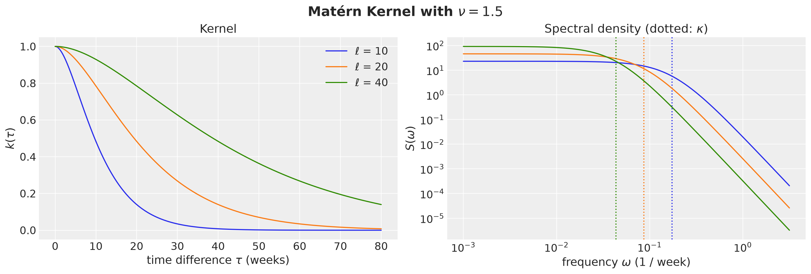
A longer lengthscale is a wider kernel and a narrower density.
Next, we look into its power, that is, the area under the spectral density, which is the variance of the process up to the factor \(2\pi\) of the convention. This is the Bochner formula above evaluated at \(\tau = 0\), which gives \(k(0) = \sigma_f^2\) on the left and the integral of \(S\) divided by \(2\pi\) on the right. Every frequency therefore owns a slice of the variance, and \(S(\omega)\) says how big that slice is.
This gives us a second way to read the kernel. Let’s plot the fraction of the variance that sits below a given frequency, as a function of \(\omega / \kappa\). In these units the curve depends on the smoothness \(\nu\) alone, because the lengthscale only moves the corner \(\kappa\) along the frequency axis and does not change the shape of the density.
Fact: The area under the Matérn density up to a given frequency is the betainc function. To see that this is all it does, the cell below also accumulates the density over the frequency grid by hand and checks that the two agree.
# omega / kappa grid: the power fraction depends on nu only, not on the lengthscale
ratio_grid = jnp.logspace(-2, 2, 400)
for nu in [0.5, 1.5, 2.5]:
# Closed form of the fraction of the variance below omega: the integral of the
# Matern density from 0 to omega is a regularized incomplete beta function,
# evaluated at 1 / (1 + (omega / kappa)^2).
power_fraction = 1.0 - betainc(nu, 0.5, 1.0 / (1.0 + ratio_grid**2))
# The same quantity by hand: the density S(omega) / S(0) times the width of each
# frequency bin, accumulated and divided by the total. The two agree to one
# percent. The gap is the coarseness of the log grid, plus the power beyond its
# right edge, which the closed form counts and the sum does not.
shape = (1.0 + ratio_grid**2) ** (-(nu + 0.5))
cumulative = jnp.cumsum(shape * jnp.diff(ratio_grid, prepend=0.0))
np.testing.assert_allclose(power_fraction, cumulative / cumulative[-1], atol=0.01)We now plot the fraction of the power below a given frequency for the Matérn family.
fig, ax = plt.subplots()
for i, nu in enumerate([0.5, 1.5, 2.5]):
power_fraction = 1.0 - betainc(nu, 0.5, 1.0 / (1.0 + ratio_grid**2))
ax.plot(ratio_grid, power_fraction, color=f"C{i}", label=f"$\\nu$ = {nu}")
ax.axvline(x=1.0, color="black", linestyle=":", label="$\\omega = \\kappa$")
ax.set(
xlabel="$\\omega / \\kappa$",
ylabel="fraction of the power below $\\omega$",
xscale="log",
ylim=(0, 1),
)
ax.legend()
fig.suptitle(
"Fraction of the power below $\\omega$ for the Matérn family",
fontsize=18,
fontweight="bold",
);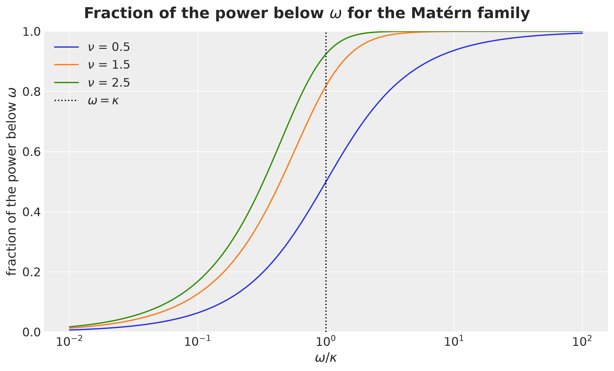
For the Matérn-\(3/2\) kernel about \(82\%\) of the power sits below \(\kappa\), against \(50\%\) for \(\nu = 1/2\) and \(92\%\) for \(\nu = 5/2\). A smoother process concentrates more of its power below the corner.
HSGP on an Interval
The HSGP approximation (Solin and Särkkä, 2020, Riutort-Mayol et al., 2023) uses two facts. A stationary kernel is a function of the Laplacian, \(K = S(\sqrt{-\Delta})\), and on the box \([-L, L]\) with Dirichlet boundary conditions the Laplacian has a closed-form eigenbasis.
What does a function of an operator mean? It acts on the eigenvalues (this is the functional calculus of the Dirichlet Laplacian, which is a self-adjoint operator on the Hilbert space \(L^2([-L, L])\), so it is diagonalized by its eigenbasis and any function of it acts on the eigenvalues alone). Since \(-\Delta \sin(\omega t) = \omega^2 \sin(\omega t)\), the operator \(S(\sqrt{-\Delta})\) multiplies the sine of frequency \(\omega\) by \(S(\omega)\) (because \(\omega^2\) is and eingenvalue with eigenfunction \(\sin(\omega t)\)).
Why is that enough to get a Gaussian process approximation?
First, because the kernel is a function of the Laplacian, the Laplacian eigenfunctions are also eigenfunctions of the kernel operator, and the eigenvalue attached to \(\phi_j\) is \(S(\sqrt{\lambda_j})\).
Mercer’s theorem writes the kernel of the operator \(S(\sqrt{-\Delta})\) on the box as the sum over its eigenpairs, \(\sum_{j \ge 1} S(\sqrt{\lambda_j})\, \phi_j(t)\, \phi_j(t')\).
This sum is the kernel we work with, and \(k(t, t') \approx \sum_{j = 1}^{m} S(\sqrt{\lambda_j})\, \phi_j(t)\, \phi_j(t')\) involves two approximations. The first is the box: the Dirichlet condition pins the process to zero at \(\pm L\), so the sum differs from the stationary kernel \(k\) on the line near the edges, and the boundary factor \(c\) controls how much. The second is the truncation at \(m\) terms, and it is a good one because \(S\) decays, so the terms we drop carry little variance. We quantify both in the section on the basis size. Note that nothing in this argument uses the fact that the domain is an interval. All we need is a Laplacian with a known eigenbasis, and a graph has one too. That is why the same recipe will work on the graph later in this section.
Let \(m\) be the number of basis functions, \(j = 1, \ldots, m\), and \(\omega_j = j \pi / (2L)\). The eigenfunctions and eigenvalues are
\[ \phi_j(t) = \frac{1}{\sqrt{L}} \sin\left(\omega_j (t + L)\right), \qquad \lambda_j = \omega_j^2 . \]
The approximation replaces the kernel by its expansion in this basis, with the spectral density evaluated at the square root of the eigenvalues:
\[ k(t, t') \approx \sum_{j = 1}^{m} S\!\left(\sqrt{\lambda_j}\right) \phi_j(t)\, \phi_j(t') . \]
A Gaussian process with this kernel is a linear combination of the basis functions with independent coefficients,
\[ f(t) = \sum_{j = 1}^{m} \sqrt{S\!\left(\sqrt{\lambda_j}\right)}\, \beta_j\, \phi_j(t), \qquad \beta_j \sim \text{Normal}(0, 1), \]
which is a linear model with \(m\) coefficients. The basis does not depend on the kernel hyperparameters. Only the weights \(S(\sqrt{\lambda_j})\) do.
For forecasting, the box must contain the training window and the forecast horizon. With \(D = T + H\) time steps we center the grid and set \(L = c\, (D - 1) / 2\) with \(c > 1\) (we use \(c = 1.5\)).
We look at the three ingredients: the basis functions, the weights, and the quality of the approximation.
T_OBS = 156
H = 13
DURATION = T_OBS + H
PERIOD = 52.0
M_BASIS = 48
C_BOX = 1.5
t_grid = jnp.arange(DURATION, dtype=jnp.float32)
t_centered = t_grid - (DURATION - 1) / 2.0
ell_box = float(C_BOX * (DURATION - 1) / 2.0)
phi_full = eigenfunctions(t_centered, ell=ell_box, m=M_BASIS) # (DURATION, m)
print(f"box half-width L = {ell_box:.1f} weeks, basis shape = {phi_full.shape}")box half-width L = 126.0 weeks, basis shape = (169, 48)Let’s plot the first four basis functions over the weeks we model.
fig, ax = plt.subplots()
for j in range(4):
ax.plot(t_grid, phi_full[:, j], label=f"$\\phi_{{{j + 1}}}$")
ax.axvline(x=T_OBS, color="black", linestyle="--", label="end of training data")
ax.set(xlabel="week", ylabel="$\\phi_j(t)$")
ax.legend(loc="upper center", bbox_to_anchor=(0.5, -0.12), ncol=5)
fig.suptitle(
"The first four HSGP basis functions on the box", fontsize=18, fontweight="bold"
);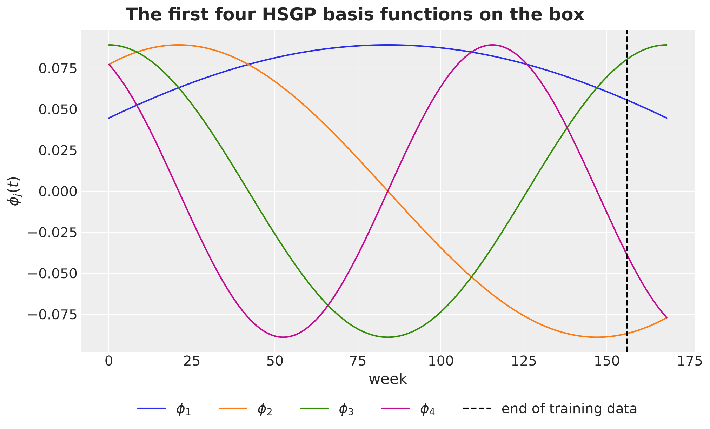
The plot above only shows the weeks where we have data or a forecast. The basis lives on a larger box. Let’s draw two basis functions over the whole box \([-L, L]\), with the training weeks, the forecast horizon, and the padding on both sides.
t_box = jnp.linspace(-ell_box, ell_box, 600)
phi_box = eigenfunctions(t_box, ell=ell_box, m=2)
week_box = np.asarray(t_box) + (DURATION - 1) / 2.0 # box coordinate -> week
fig, ax = plt.subplots()
ax.axvspan(0, T_OBS, color="C0", alpha=0.15, label="training weeks")
ax.axvspan(T_OBS, DURATION - 1, color="C1", alpha=0.25, label="forecast horizon")
for j in range(2):
ax.plot(week_box, phi_box[:, j], color=f"C{j + 2}", label=f"$\\phi_{{{j + 1}}}$")
ax.axvline(x=week_box[0], color="black", linestyle="--")
ax.axvline(x=week_box[-1], color="black", linestyle="--", label="box edges $\\pm L$")
ax.axhline(y=0.0, color="gray", linewidth=0.8)
ax.set(xlabel="week", ylabel="$\\phi_j(t)$")
ax.legend(loc="upper center", bbox_to_anchor=(0.5, -0.12), ncol=5)
fig.suptitle(f"The box (c = {C_BOX}) around the data", fontsize=18, fontweight="bold");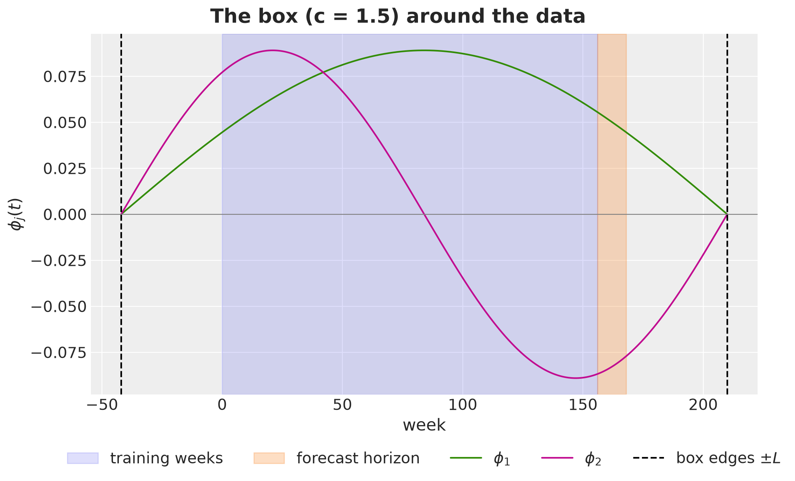
Every basis function is zero at the box edges (the Dirichlet condition), so the approximate process is pinned to zero there. With \(c = 1.5\) the edges sit about \(40\) weeks away from the first training week and from the last forecast week, far enough for a lengthscale of \(20\) weeks. This is why we take \(c > 1\): the padding keeps the artificial zero away from the forecast.
The weights \(S(\sqrt{\lambda_j})\) decide how much each frequency contributes. We evaluate the Matérn-\(3/2\) spectral density (the numpyro implementation of the formula above) at the eigenvalues for three lengthscales.
fig, ax = plt.subplots()
for length in [10.0, 20.0, 40.0]:
s_j = diag_spectral_density_matern(
nu=NU, alpha=1.0, length=length, ell=ell_box, m=M_BASIS, dim=1
)
ax.plot(np.arange(1, M_BASIS + 1), s_j, label=f"$\\ell$ = {length:.0f}")
ax.set(xlabel="basis function $j$", ylabel="$S(\\sqrt{\\lambda_j})$", yscale="log")
ax.legend()
fig.suptitle(
"Matérn-3/2 spectral weights for three lengthscales", fontsize=18, fontweight="bold"
);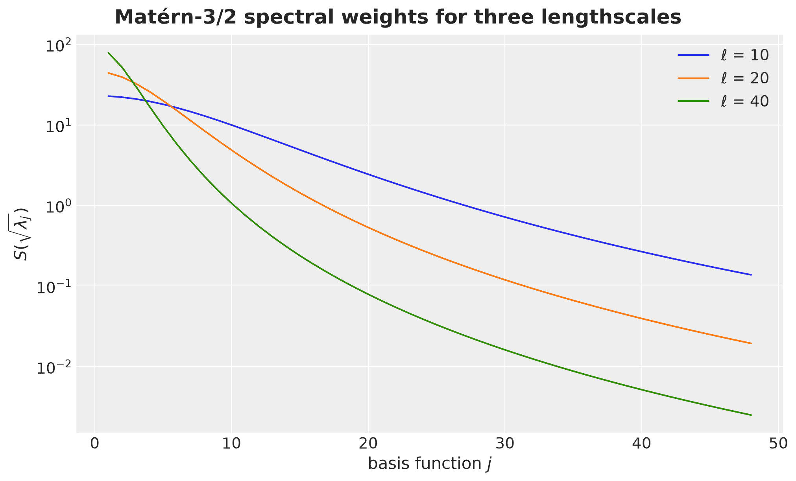
A longer lengthscale concentrates the weight on the first few basis functions. This is also why the basis can be truncated: for \(\ell = 20\) the weight of \(j = 48\) is more than three orders of magnitude below the weight of \(j = 1\) (a factor of about \(2300\)).
We now compare the approximate kernel \(\sum_j S(\sqrt{\lambda_j}) \phi_j(t) \phi_j(t')\) with the exact Matérn-\(3/2\) kernel \(k(\tau) = \sigma_f^2 (1 + \sqrt{3} |\tau| / \ell) \exp(-\sqrt{3} |\tau| / \ell)\), as a function of \(t\) for a fixed \(t'\) in the middle of the data.
def matern32_kernel(tau: Array, length: float, sigma_f: float = 1.0) -> Array:
"Exact Matérn-3/2 kernel as a function of the time difference tau."
d = jnp.sqrt(3.0) * jnp.abs(tau) / length
return sigma_f**2 * (1.0 + d) * jnp.exp(-d)
t_ref = T_OBS // 2
fig, ax = plt.subplots()
for i, length in enumerate([10.0, 20.0, 40.0]):
s_j = diag_spectral_density_matern(
nu=NU, alpha=1.0, length=length, ell=ell_box, m=M_BASIS, dim=1
)
k_hsgp = (phi_full * s_j) @ phi_full[t_ref] # sum_j S_j phi_j(t) phi_j(t_ref)
k_exact = matern32_kernel(t_grid - t_grid[t_ref], length)
ax.plot(t_grid, k_exact, color=f"C{i}", label=f"exact, $\\ell$ = {length:.0f}")
ax.plot(
t_grid,
k_hsgp,
color=f"C{i}",
linestyle="--",
label=f"HSGP, $\\ell$ = {length:.0f}",
)
ax.set(xlabel="week $t$", ylabel="$k(t, t')$")
ax.legend(loc="upper center", bbox_to_anchor=(0.5, -0.12), ncol=3)
fig.suptitle(
f"HSGP approximation of the Matérn-3/2 kernel (m = {M_BASIS})",
fontsize=18,
fontweight="bold",
);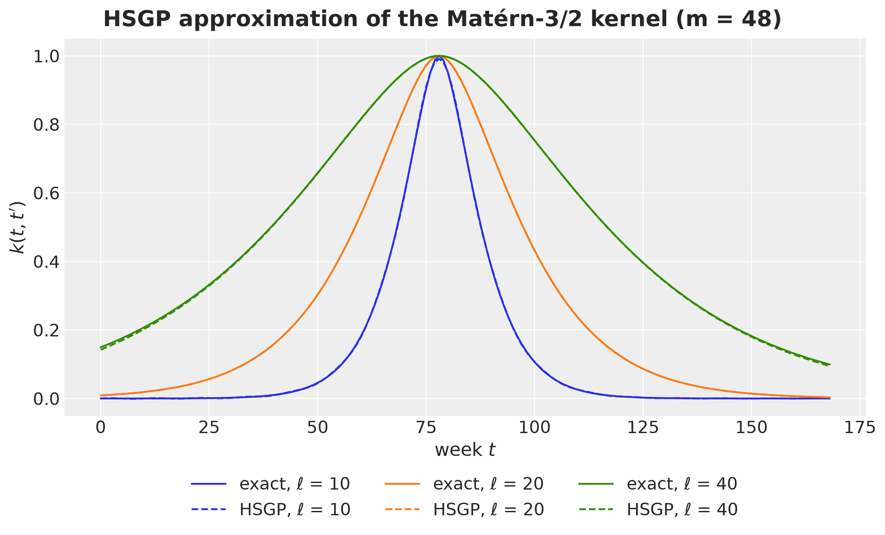
The approximation is accurate for these lengthscales and \(m = 48\). It degrades when \(\ell\) is short relative to the box, because the density then has power beyond the last basis frequency \(\omega_m\). We come back to this in the section on the basis size.
The Graph Laplacian
Let \(A\) be the adjacency matrix of the graph and \(D_G\) the diagonal matrix of node degrees \(d_r = \sum_{r'} A_{r r'}\). The graph Laplacian is \(L_G = D_G - A\). For any vector \(x\) on the nodes,
\[ x^\top L_G x = \frac{1}{2} \sum_{r, r'} A_{r r'} (x_r - x_{r'})^2 . \]
What does this quantity mean? A vector \(x\) assigns one number \(x_r\) to every node, for example the deviation of region \(r\) from the national level. The right-hand side runs over the edges of the graph and adds up the squared difference between the two endpoints of each edge.
It is zero when \(x\) is constant, small when connected nodes agree, and large when they disagree. That is what we mean by rough over the graph: a rough vector is one that changes a lot between neighbors.
The continuous counterpart is \(\int \left(f'(t)\right)^2 dt\), which measures in exactly the same way how rough a function \(f\) of time is on an interval. The graph quadratic form replaces the derivative of \(f\) by the difference of \(x\) along an edge. See Laplacian Eigenmaps and the PyData Berlin 2018 slides for a longer discussion.
Now, \(L_G\) is symmetric and positive semidefinite, so it has an orthonormal eigendecomposition \(L_G = U \operatorname{diag}(\mu) U^\top\) with eigenvalues \(0 = \mu_0 \le \mu_1 \le \cdots \le \mu_{R - 1}\) and eigenvectors \(u_v\) (the columns of \(U\)). The eigenvalue is the roughness of its own eigenvector, \(\mu_v = u_v^\top L_G u_v\).
The first eigenvector \(u_0\) is constant. Eigenvectors with larger \(\mu_v\) oscillate faster over the graph, in the same sense that \(\sin(\omega_j t)\) oscillates faster for larger \(j\). This makes the pair \((\mu_v, u_v)\) the graph analogue of \((\lambda_j, \phi_j)\).
The cleanest way to see this is on the simplest graph there is, a path. Its Laplacian is minus the discrete second derivative (its rows are \((-1, 2, -1)\), the discrete \(-d^2/dx^2\)), so its eigenvectors are discrete cosines and they are the exact graph analogue of the sine basis we plotted above.
def path_laplacian(n: int) -> Float[Array, "n n"]:
"Laplacian of a path with n nodes (minus the discrete second derivative)."
adjacency = jnp.diag(jnp.ones(n - 1), k=1) + jnp.diag(jnp.ones(n - 1), k=-1)
return jnp.diag(adjacency.sum(axis=1)) - adjacency
n_pts = 10
mu_path, u_path = jnp.linalg.eigh(path_laplacian(n_pts))
mu_path = jnp.clip(mu_path, 0.0, None).at[0].set(0.0)
node_index = np.arange(n_pts)
vmax_path = float(jnp.abs(u_path).max())
fig, axes = plt.subplots(
nrows=2,
ncols=2,
figsize=(10, 8),
sharex=True,
sharey=True,
layout="constrained",
)
axes = axes.flatten()
for v, ax in enumerate(axes):
values = np.asarray(u_path[:, v])
ax.axhline(y=0.0, color="gray", linewidth=0.8)
ax.plot(node_index, values, color="black", linewidth=1, zorder=1)
scatter = ax.scatter(
node_index,
values,
c=values,
cmap="coolwarm",
vmin=-vmax_path,
vmax=vmax_path,
s=220,
zorder=2,
edgecolor="black",
)
ax.set(title=f"mode {v}, $\\mu_{{{v}}}$ = {mu_path[v]:.2f}")
axes[0].set(ylabel="$u_v(r)$")
axes[2].set(xlabel="node", ylabel="$u_v(r)$")
axes[3].set(xlabel="node")
fig.colorbar(scatter, ax=axes, label="$u_v(r)$", shrink=0.8)
fig.suptitle("Laplacian eigenvectors of a path graph", fontsize=18, fontweight="bold");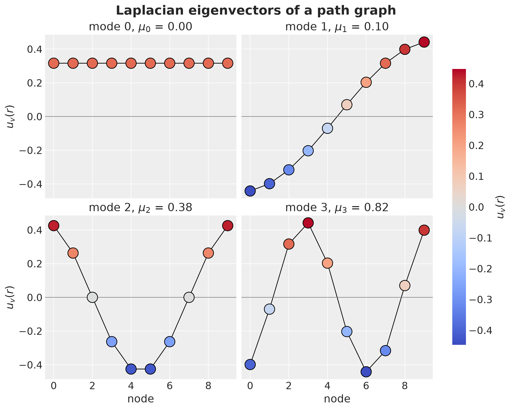
Mode \(0\) is constant, which is the average over the nodes. Mode \(1\) splits the path into a positive half and a negative half. Higher modes change sign more often, and \(\mu_v\) grows with the number of sign changes. This is the sense in which a graph mode with a large \(\mu_v\) oscillates fast.
Remark. Each eigenvector is defined only up to a sign, and up to a rotation inside a group of repeated eigenvalues. In the plot above the blue and the red halves of a mode could be swapped without changing the kernel, so the sign of a mode carries no meaning by itself.
Remark. The quantity \(\mu_0 = 0\) will represent the national average mode in the example below. This reading of \(\mu_0\) requires a connected graph. On a disconnected one the eigenvalue zero is repeated once per component and there is no single average mode. We check connectivity below.
We now have two Laplacians: the Dirichlet Laplacian on the time box and the graph Laplacian. Each one has an eigenbasis, and on each one the same recipe, evaluate the spectral density at the eigenvalues, defines a kernel.
On the graph that recipe gives the Matérn Gaussian process of Borovitskiy et al. (2021), \(K_G = \sum_v S(\sqrt{\mu_v})\, u_v u_v^\top\). What is left is to combine the two into a single kernel on the product space, and that is the subject of the next two sections.
The Kronecker Product
Let’s come back to the setting we care about. Our index has two parts, a week and a region, so we need a basis on the product space interval times graph, whose functions take a time and a region. We already have the two ingredients, \((\lambda_j, \phi_j)\) on the interval and \((\mu_v, u_v)\) on the graph. There are two ways to combine two operators, the Kronecker product and the Kronecker sum. They share their eigenvectors and differ in their eigenvalues, and that difference is the whole story of this notebook. We start with the product.
The Kronecker product of a matrix \(P\) (size \(m \times m\), acting on time) and a matrix \(Q\) (size \(R \times R\), acting on the graph) is a matrix \(P \otimes Q\) of size \(mR \times mR\), built out of \(m \times m\) blocks of size \(R \times R\). It acts on functions of the form \(\phi \otimes u\), that is \((\phi \otimes u)(t, r) = \phi(t)\, u(r)\), one factor at a time. If \(P \phi_j = \lambda_j \phi_j\) and \(Q u_v = \mu_v u_v\), then
\[ (P \otimes Q)\, (\phi_j \otimes u_v) = (P \phi_j) \otimes (Q u_v) = \lambda_j \mu_v\, (\phi_j \otimes u_v) , \]
so the product functions \(\phi_j(t) u_v(r)\) are eigenvectors and the eigenvalues multiply.
Why do we call it a product? To see this, let’s look into the covariance of a separable kernel, i.e. a kernel that factorizes into a product of a time kernel and a graph kernel. If \(k((t, r), (t', r')) = k_t(t, t')\, k_G(r, r')\), then the covariance matrix on the grid is \(K = K_t \otimes K_G\). With \(K_t \approx \sum_j S_t(\sqrt{\lambda_j})\, \phi_j \phi_j^\top\) and \(K_G = \sum_v S_G(\sqrt{\mu_v})\, u_v u_v^\top\), the eigenvalues of \(K\) are the products of the two spectra, \(S_t(\sqrt{\lambda_j})\, S_G(\sqrt{\mu_v})\), with eigenvectors \(\phi_j \otimes u_v\). This is the structure that the PyMC HSGP Kronecker example exploits, and it is the separable kernel below.
Let’s check the eigenvalue rules on a simple example: the Laplacian of a path with three time points and the Laplacian of a path graph with three nodes. We build the Kronecker product with jnp.kron, and we compare their eigenvalues with the products and the sums of the factor eigenvalues.
n_pts = 3
P = path_laplacian(n_pts) # time
Q = path_laplacian(n_pts) # graph
lam_p, phi_p = jnp.linalg.eigh(P)
mu_q, u_q = jnp.linalg.eigh(Q)
kron_product = jnp.kron(P, Q)
eig_product = jnp.linalg.eigvalsh(kron_product)
assert jnp.allclose(eig_product, jnp.sort(jnp.outer(lam_p, mu_q).ravel()), atol=1e-5)
j, v = 1, 2
vector = jnp.kron(phi_p[:, j], u_q[:, v]) # the product function phi_j (x) u_v
assert jnp.allclose(kron_product @ vector, lam_p[j] * mu_q[v] * vector, atol=1e-5)The results agree as expected.
The Kronecker Sum
The Kronecker sum of the two operators is \(P \oplus Q = P \otimes I + I \otimes Q\): apply \(P\) along time and \(Q\) along the graph, and add. The product functions are again eigenvectors, and now the eigenvalues add:
\[ (P \oplus Q)\, (\phi_j \otimes u_v) = (P \phi_j) \otimes u_v + \phi_j \otimes (Q u_v) = (\lambda_j + \mu_v)\, (\phi_j \otimes u_v) . \]
Observe that the Kronecker sum is also a matrix of size \(mR \times mR\).
Let’s verify the analogous rules on the same example.
kron_sum = jnp.kron(P, jnp.eye(3)) + jnp.kron(jnp.eye(3), Q)
eig_sum = jnp.linalg.eigvalsh(kron_sum)
assert jnp.allclose(
eig_sum, jnp.sort((lam_p[:, None] + mu_q[None, :]).ravel()), atol=1e-5
)
assert jnp.allclose(kron_sum @ vector, (lam_p[j] + mu_q[v]) * vector, atol=1e-5)Now, let’s compare the set of eigenvalues: the same nine pairs \((j, v)\), once multiplied and once added.
pairs = [(j, v) for j in range(n_pts) for v in range(n_pts)]
pl.DataFrame(
{
"j": [j for j, _ in pairs],
"v": [v for _, v in pairs],
"lambda_j": [round(lam_p[j], 3) for j, _ in pairs],
"mu_v": [round(mu_q[v], 3) for _, v in pairs],
"product": [round(lam_p[j] * mu_q[v], 3) for j, v in pairs],
"sum": [round(lam_p[j] + mu_q[v], 3) for j, v in pairs],
}
)| j | v | lambda_j | mu_v | product | sum |
|---|---|---|---|---|---|
| i64 | i64 | f64 | f64 | f64 | f64 |
| 0 | 0 | -0.0 | -0.0 | 0.0 | -0.0 |
| 0 | 1 | -0.0 | 1.0 | -0.0 | 1.0 |
| 0 | 2 | -0.0 | 3.0 | -0.0 | 3.0 |
| 1 | 0 | 1.0 | -0.0 | -0.0 | 1.0 |
| 1 | 1 | 1.0 | 1.0 | 1.0 | 2.0 |
| 1 | 2 | 1.0 | 3.0 | 3.0 | 4.0 |
| 2 | 0 | 3.0 | -0.0 | -0.0 | 3.0 |
| 2 | 1 | 3.0 | 1.0 | 3.0 | 4.0 |
| 2 | 2 | 3.0 | 3.0 | 9.0 | 6.0 |
Observe that the product has a zero eigenvalue whenever \(\lambda_j = 0\) or \(\mu_v = 0\), while the sum is zero only when both are. This matters for us: the constant graph mode has \(\mu_0 = 0\), so a Kronecker product of Laplacians assigns eigenvalue zero to every function of the form \(\phi_j(t) u_0(r)\) and cannot tell a slow national trend from a fast one.
Next we move from the \(3 \times 3\) toy example to the sizes of our own problem, so that the plots in the rest of this section show realistic magnitudes. We plot the two eigenvalue surfaces over the \((j, v)\) grid, the product \(\lambda_j \mu_v\) and the raw sum \(\lambda_j + \mu_v\), on a logarithmic color scale.
lam = sqrt_eigenvalues(ell_box, M_BASIS, dim=1)[0] ** 2 # (m,) time eigenvalues
mu_coarse = jnp.linspace(0.0, 10.0, 16) # 16 graph modes, like the real graph
eig_product_grid = lam[:, None] * mu_coarse[None, :]
eig_sum_grid = lam[:, None] + mu_coarse[None, :]
fig, axes = plt.subplots(
nrows=1, ncols=2, figsize=(14, 5), sharey=True, layout="constrained"
)
for ax, surface, title in zip(
axes,
[eig_product_grid, eig_sum_grid],
["Kronecker product: $\\lambda_j \\mu_v$", "Kronecker sum: $\\lambda_j + \\mu_v$"],
strict=True,
):
values = np.asarray(surface)
im = ax.imshow(
np.log10(np.where(values > 0, values, np.nan)),
aspect="auto",
origin="lower",
cmap="viridis",
vmin=-4,
vmax=1,
extent=(-0.5, mu_coarse.shape[0] - 0.5, 0.5, M_BASIS + 0.5),
)
ax.set(title=title, xlabel="graph mode $v$", xticks=np.arange(0, 16, 3))
axes[0].set(ylabel="time frequency $j$")
fig.colorbar(im, ax=axes, label="$\\log_{10}$ eigenvalue (white = 0)", shrink=0.8)
fig.suptitle("Eigenvalues of the two combinations", fontsize=18, fontweight="bold");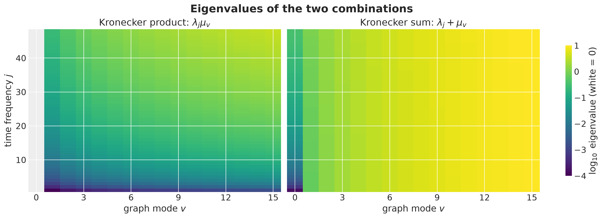
The product surface has a white column at \(v = 0\) (eigenvalue zero for every \(j\)) and otherwise varies in both directions. The raw sum is almost constant along \(j\) for every \(v > 0\): it is dominated by \(\mu_v\), because \(\lambda_j\) is at most \(0.36\) while \(\mu_v\) goes up to \(10\). This is not a property of the graph, it is an artifact of adding quantities with different units, and it is the problem we fix next.
Remark. On the product space interval times graph the natural Laplacian is the Kronecker sum \(-\Delta_t \oplus L_G\), because the Laplacian of a product space is the sum of the Laplacians of the factors (as \(\partial_x^2 + \partial_y^2\) on the plane). Its eigenpairs are
\[ \left(\lambda_j + \mu_v,\; \phi_j(t)\, u_v(r)\right), \qquad j = 1, \ldots, m, \quad v = 0, \ldots, R - 1 . \]
Recall that on the interval the kernel is the spectral density evaluated at the Laplacian eigenvalues, \(S(\sqrt{\lambda_j})\). The same recipe on the product space evaluates \(S\) at \(\sqrt{\lambda_j + \mu_v}\). Before we can do that we have to fix the units problem we just saw.
Making the Scales Comparable in the Kronecker Sum
Here we present a critical point of the Kronecker sum of the two Laplacians. We look closer into the sum \(\lambda_j + \mu_v\).
Units. \(\lambda_j = \omega_j^2\) is a squared frequency, with units of one over squared weeks. \(\mu_v\) is a pure number: the graph has no length unit. Adding them is meaningless, and the result would change if we measured time in days instead of weeks. We need a squared rate in front of \(\mu_v\) to make the two terms comparable.
Which rate. The temporal Matérn kernel has exactly one squared rate, \(\kappa^2 = 2\nu / \ell^2\), the frequency where its spectral density bends from flat to decaying. Using \(\kappa^2\) as the conversion makes the construction scale-free: with \(\omega^2 = \lambda_j + \kappa^2 \rho\, \mu_v\) (we will explain the \(\rho\) in a moment) the argument of the density becomes \(\omega^2 / \kappa^2 = \lambda_j / \kappa^2 + \rho\, \mu_v\), and \(\lambda_j / \kappa^2 = \ell^2 \lambda_j / (2\nu)\) does not change if we change the time unit and \(\ell\) together.
What is left. After the conversion one dimensionless number remains, \(\rho \ge 0\). It sets how much a unit of graph roughness \(\mu_v\) costs in the units of the temporal spectrum. The term \(\rho \mu_v\) is what the graph adds to the argument of the density, and it is added next to the \(1\) that the temporal corner frequency contributes. A mode with \(\rho \mu_v \ll 1\) is therefore treated almost like the constant mode, because the graph barely moves its weights, while a mode with \(\rho \mu_v \gg 1\) is pushed far into the decaying tail. The crossover sits at \(\mu_v = 1 / \rho\), so \(1 / \rho\) is the level of graph roughness above which the graph starts to shorten a mode’s memory and shrink its amplitude. Read the other way around, \(\rho = \ell_G^2 / (2\nu)\) is a squared spatial lengthscale on the graph. Hence, we might call \(\rho\) a pooling strength parameter.
The graph eigenvalues are converted into the units of the time eigenvalues and added, and \(\rho\) decides how strongly the graph penalizes rough spatial patterns. With \(\rho = 0\) the graph drops out and the regions are independent. As \(\rho\) grows, every mode except the constant one is pushed further into the tail of the density, so the regions are pulled toward the national average. Below we see this mode by mode. The next plot shows the converted eigenvalue surface \(\lambda_j / \kappa^2 + \rho\, \mu_v\) for three pooling strengths. A small \(\rho\) makes the surface vary mostly along \(j\) (time dominates), a large \(\rho\) mostly along \(v\) (the graph dominates). We can visualize it in the following comparison plot:
LENGTH_0 = 20.0
KAPPA2_0 = 2.0 * NU / LENGTH_0**2
fig, axes = plt.subplots(
nrows=1, ncols=3, figsize=(15, 5), sharey=True, layout="constrained"
)
for ax, rho in zip(axes, [0.1, 1.0, 10.0], strict=True):
surface = np.asarray(lam[:, None] / KAPPA2_0 + rho * mu_coarse[None, :])
im = ax.imshow(
np.log10(surface),
aspect="auto",
origin="lower",
cmap="viridis",
vmin=-2,
vmax=2,
extent=(-0.5, mu_coarse.shape[0] - 0.5, 0.5, M_BASIS + 0.5),
)
ax.set(
title=f"$\\rho$ = {rho}", xlabel="graph mode $v$", xticks=np.arange(0, 16, 3)
)
axes[0].set(ylabel="time frequency $j$")
fig.colorbar(
im, ax=axes, label="$\\log_{10}(\\lambda_j / \\kappa^2 + \\rho \\mu_v)$", shrink=0.8
)
fig.suptitle(
"The converted eigenvalues for three pooling strengths",
fontsize=18,
fontweight="bold",
);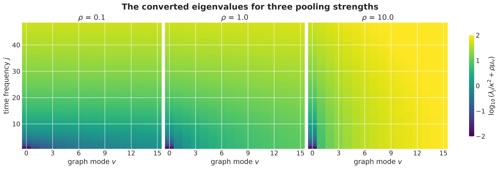
Understanding the role of the parameter \(\rho\) is crucial to understand the approximation using the Kronecker sum. Hence, in the remainder of this section we expand on different interpretations and effects of this parameter.
We continue by plotting the Matérn density \(S\) as a function of \(\omega^2 / \kappa^2\), and on top of it the points where the sum evaluates it for three graph modes.
For the constant mode (\(\mu_v = 0\)) the points are the usual HSGP weights \(S(\sqrt{\lambda_j})\).
For a rougher graph mode the same \(m\) frequencies are shifted to the right by \(\rho \mu_v\): they start further down the decaying part of the density, where the density is lower, and they cover a shorter stretch of the logarithmic axis.
RHO_0 = 2.0
mu_plot = jnp.array([0.0, 1.0, 5.0, 10.0])
x_grid = jnp.logspace(-3, 3, 400) # omega^2 / kappa^2
s_curve = spectral_density_matern(
dim=1, nu=NU, w=jnp.sqrt(x_grid * KAPPA2_0)[:, None], alpha=1.0, length=LENGTH_0
)
fig, ax = plt.subplots()
ax.plot(x_grid, s_curve, color="black", label="Matérn-3/2 density $S$")
for i, mu_v in enumerate(mu_plot):
omega2 = lam + KAPPA2_0 * RHO_0 * mu_v
s_jv = spectral_density_matern(
dim=1, nu=NU, w=jnp.sqrt(omega2)[:, None], alpha=1.0, length=LENGTH_0
)
ax.plot(
omega2 / KAPPA2_0,
s_jv,
"o",
color=f"C{i}",
markersize=4,
label=f"$\\mu_v$ = {mu_v:.0f}",
)
ax.set(
xscale="log", yscale="log", xlabel="$\\omega^2 / \\kappa^2$", ylabel="$S(\\omega)$"
)
ax.legend()
fig.suptitle(
"Where the Kronecker sum evaluates the density", fontsize=18, fontweight="bold"
);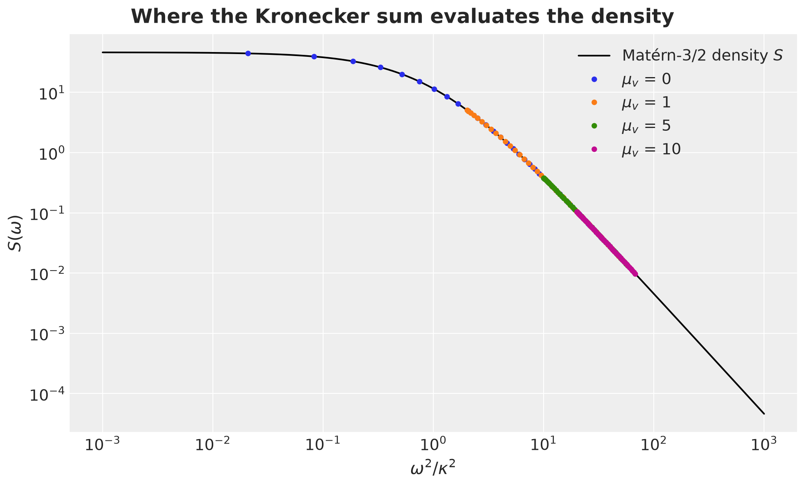
Here is the takeaway. There is a single Matérn density, and every graph mode reads its spectral weights off the same curve. What changes from mode to mode is only the starting point: the constant mode starts at the flat part of the curve, and a rougher mode starts \(\rho \mu_v\) further to the right, on the decaying part. Two things follow.
Less variance. The rougher the mode, the smaller all of its weights, so the mode carries less variance.
Shorter memory. The rougher the mode, the smaller the contrast between its low and its high frequencies. The \(m\) frequencies of a mode span a fixed width \((\lambda_m - \lambda_1) / \kappa^2\) in \(\omega^2 / \kappa^2\), and after the shift by \(\rho \mu_v\) that width is a smaller fraction of the position, so the ratio of the first to the last weight, \(\big((1 + \lambda_m / \kappa^2 + \rho \mu_v) / (1 + \lambda_1 / \kappa^2 + \rho \mu_v)\big)^{\nu + 1/2}\), moves toward one. Relatively more of the mode’s variance then sits at high frequencies, which is a shorter memory.
The Kronecker sum does not add a spatial kernel to a temporal one. It changes where each graph mode sits on one temporal spectrum, and \(\rho\) sets the step size.
In formulas, plugging \(\omega^2 = \lambda_j + \kappa^2 \rho\, \mu_v\) into \((\kappa^2 + \omega^2)^{-(\nu + 1/2)}\) and pulling out \(\kappa^2\) gives the spectral weights
\[ W_{j v} = C' \left(1 + \frac{\lambda_j}{\kappa^2} + \rho\, \mu_v\right)^{-(\nu + 1/2)} , \]
where the constant \(C'\) is fixed by the normalization below.
Another Interesting Interpretation
Fix a graph mode \(v\) and look at the weights as a function of \(j\) only. Since
\[\frac{\lambda_j}{\kappa^2} + (1 + \rho \mu_v) = (1 + \rho \mu_v) \left(1 + \frac{\lambda_j}{\kappa^2 (1 + \rho \mu_v)}\right),\]
they are the weights of a one-dimensional Matérn-\(\nu\) process in time with inverse squared lengthscale \(\kappa^2 (1 + \rho \mu_v)\), times a mode-specific constant. In other words, graph mode \(v\) is a temporal Matérn-\(\nu\) HSGP with its own lengthscale and amplitude,
\[ \ell_v = \frac{\ell}{\sqrt{1 + \rho\, \mu_v}}, \qquad \alpha_v = (1 + \rho\, \mu_v)^{-\nu} , \]
so that \(W_{jv} \propto S(\sqrt{\lambda_j};\, \alpha_v, \ell_v)\) with \(S\) the one-dimensional Matérn density. Here \(\alpha_v\) multiplies the density, so it sits in the \(\sigma_f^2\) slot of the formula above (it is the alpha argument of numpyro) and it is a variance factor: the prior standard deviation of mode \(v\) scales as \((1 + \rho\, \mu_v)^{-\nu / 2}\).
We check this numerically. The weights from the sum formula and the weights of a Matérn density with parameters \((\alpha_v, \ell_v)\) coincide. This is also how we compute the weights in code below: we reuse the Matérn spectral density of numpyro.contrib.hsgp and only supply the pair \((\alpha_v, \ell_v)\) for every graph mode.
j_grid = jnp.arange(M_BASIS)
fig, ax = plt.subplots()
for i, mu_v in enumerate(mu_plot):
omega2 = lam + KAPPA2_0 * RHO_0 * mu_v
w_sum = spectral_density_matern(
dim=1, nu=NU, w=jnp.sqrt(omega2)[:, None], alpha=1.0, length=LENGTH_0
)
g = 1.0 + RHO_0 * mu_v
w_mode = diag_spectral_density_matern(
nu=NU,
alpha=g ** (-NU),
length=LENGTH_0 / jnp.sqrt(g),
ell=ell_box,
m=M_BASIS,
dim=1,
)
ax.plot(j_grid, w_sum, color=f"C{i}", label=f"sum formula, $\\mu_v$ = {mu_v:.0f}")
ax.plot(
j_grid,
w_mode,
color=f"C{i}",
linestyle="--",
marker="o",
markersize=3,
label=f"Matérn($\\alpha_v$, $\\ell_v$), $\\mu_v$ = {mu_v:.0f}",
)
ax.set(yscale="log", xlabel="time frequency $j$", ylabel="$W_{jv}$")
ax.legend(loc="center left", bbox_to_anchor=(1, 0.5))
fig.suptitle(
"Each graph mode is a temporal Matérn process", fontsize=18, fontweight="bold"
);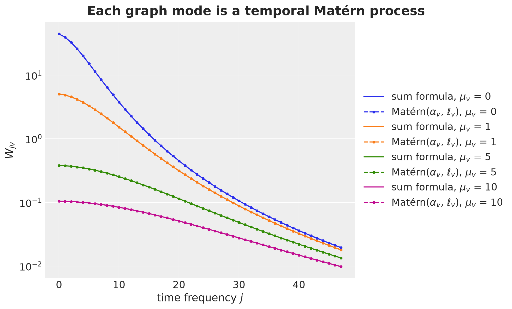
The two computations agree, which is good! Three consequences follow from the formulas for \(\ell_v\) and \(\alpha_v\), and we will see all three in a plot below:
\(v = 0\) is the shared national trend, with the longest lengthscale \(\ell\) and the largest amplitude.
Rough spatial patterns (large \(\mu_v\)) have shorter memory and smaller amplitude.
\(\rho\) controls how fast both decay with \(\mu_v\).
So \(\rho\) is a single spatial pooling strength, and the graph decides which deviations are suppressed first.
What does this mean for a forecast? A forecast extrapolates the fitted modes, and a mode with lengthscale \(\ell_v\) carries information for roughly \(\ell_v\) weeks past the last observation. Rough modes have the shortest \(\ell_v\), so they are the first to decay toward their prior mean of zero. After a few weeks only the smooth modes are left, and after a few months only the national mode. The visible effect is that a state’s forecast starts near its own recent level and then moves toward the national forecast as the horizon grows, with the ragged part of its deviation disappearing first.
Three Kernels with the Same Hyperparameters
After studying the Kronecker product and the Kronecker sum, we summarize what each of these kernels implies in the context of our problem at hand. We also compare them against the simpler independent kernel, where we simply forget about the regional structure of the data.
Independent. One temporal HSGP per region, no graph. Whatever it achieves comes from the time dimension alone.
Separable (Kronecker Product). The product of a temporal Matérn kernel and a graph Matérn kernel. This is the standard way to combine a time kernel with a space kernel (an intrinsic coregionalization model with a fixed coregionalization matrix). It shares information across regions, but every graph mode has the same temporal lengthscale.
Non-Separable (Kronecker Sum). The construction above. It shares information and gives rough spatial patterns a shorter memory.
All three use the same hyperparameters \((\sigma_f, \ell, \rho)\) and the same basis, and differ only in how the two spectra are combined. So a difference between \(2\) and \(3\) is attributable to non-separability alone, and a difference between \(1\) and \(2\) to spatial sharing alone. In the language of the interpretation above, every kernel is a collection of \(R\) temporal Matérn HSGPs, one per graph mode, and the graph eigenvalue \(\mu_v\) sets the amplitude and (for the Kronecker sum only) the lengthscale of mode \(v\):
| mode | \(W_{jv}\) | \(\ell_v\) | \(\alpha_v\) | kernel |
|---|---|---|---|---|
kron_sum |
\((1 + \lambda_j / \kappa^2 + \rho \mu_v)^{-(\nu + 1/2)}\) | \(\ell / \sqrt{1 + \rho \mu_v}\) | \((1 + \rho \mu_v)^{-\nu}\) | non-separable |
separable |
\((1 + \lambda_j / \kappa^2)^{-(\nu + 1/2)}\, (1 + \rho \mu_v)^{-(\nu + 1/2)}\) | \(\ell\) | \((1 + \rho \mu_v)^{-(\nu + 1/2)}\) | Matérn(time) \(\otimes\) graph-Matérn |
independent |
\((1 + \lambda_j / \kappa^2)^{-(\nu + 1/2)}\) with \(U = I\) | \(\ell\) | \(1\) | one HSGP per region |
Let’s start writing some code for each of these kernels.
Mode = Literal["kron_sum", "separable", "independent"]
def mode_hyperparameters(
mu: Float[Array, " R"],
*,
mode: Mode,
nu: float,
length: Float[Array, ""],
rho: Float[Array, ""],
) -> tuple[Float[Array, " R"], Float[Array, " R"]]:
"Amplitude alpha_v and temporal lengthscale ell_v of every graph mode."
g = 1.0 + rho * mu
if mode == "kron_sum":
return g ** (-nu), length / jnp.sqrt(g)
if mode == "separable":
return g ** (-(nu + 0.5)), jnp.full_like(mu, length)
if mode == "independent":
return jnp.ones_like(mu), jnp.full_like(mu, length)
raise ValueError(f"unknown mode {mode!r}")
def unnormalized_weights(
mu: Float[Array, " R"],
*,
mode: Mode,
nu: float,
length: Float[Array, ""],
rho: Float[Array, ""],
ell_box: float,
m: int,
) -> Float[Array, "m R"]:
"Matérn spectral weights W[j, v] of one of the three kernels, up to a constant."
alpha_v, length_v = mode_hyperparameters(
mu, mode=mode, nu=nu, length=length, rho=rho
)
def density(alpha: Float[Array, ""], length: Float[Array, ""]) -> Float[Array, "m"]:
return diag_spectral_density_matern(
nu=nu, alpha=alpha, length=length, ell=ell_box, m=m, dim=1
)
return jax.vmap(density)(alpha_v, length_v).T # (m, R)We plot the weights of the three kernels as curves, one per graph mode.
MODES: list[Mode] = ["independent", "separable", "kron_sum"]
fig, axes = plt.subplots(
nrows=1, ncols=3, figsize=(15, 5), sharey=True, layout="constrained"
)
for ax, mode in zip(axes, MODES, strict=True):
w_show = unnormalized_weights(
mu_plot,
mode=mode,
nu=NU,
length=LENGTH_0,
rho=RHO_0,
ell_box=ell_box,
m=M_BASIS,
)
for i, mu_v in enumerate(mu_plot):
ax.plot(
j_grid,
w_show[:, i],
color=f"C{i}",
label=f"$\\mu_v$ = {mu_v:.0f}",
)
ax.set(title=mode, xlabel="time frequency $j$", yscale="log")
axes[0].set(ylabel="$W_{jv}$")
axes[2].legend(loc="lower left")
fig.suptitle("The three kernels as weight curves", fontsize=18, fontweight="bold");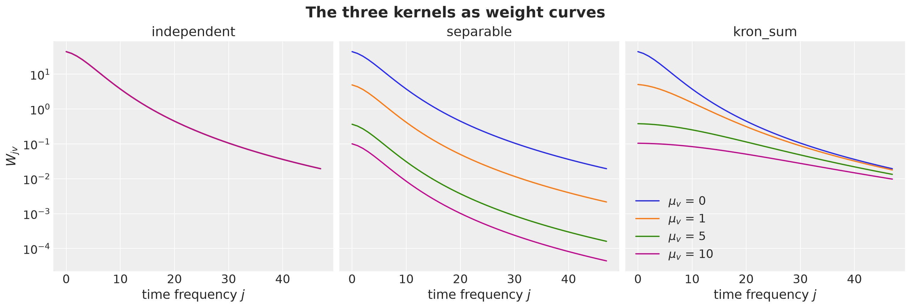
For the independent kernel there is no rotation (\(U = I\)), so the columns of \(W\) are the regions themselves, not graph modes.
For the other two kernels they are graph modes. In the independent kernel all curves coincide.
In the separable kernel all curves have the same shape and only their level changes.
In the Kronecker sum the curves of rough modes are lower and flatter across \(j\), which is a shorter lengthscale.
The same contrast as a function of the graph eigenvalue: the amplitude \(\alpha_v\) decays with \(\mu_v\) for both pooled kernels (slightly faster for the separable one), but only the Kronecker sum shortens the lengthscale.
mu_grid = jnp.linspace(0.0, 10.0, 101)
fig, axes = plt.subplots(nrows=1, ncols=2, figsize=(12, 5), layout="constrained")
for i, mode in enumerate(MODES):
alpha_v, length_v = mode_hyperparameters(
mu_grid, mode=mode, nu=NU, length=LENGTH_0, rho=RHO_0
)
axes[0].plot(np.asarray(mu_grid), np.asarray(alpha_v), color=f"C{i}", label=mode)
axes[1].plot(
np.asarray(mu_grid), np.asarray(length_v / LENGTH_0), color=f"C{i}", label=mode
)
axes[0].set(
xlabel="graph eigenvalue $\\mu_v$",
ylabel="$\\alpha_v$",
title="Amplitude per graph mode",
)
axes[1].set(
xlabel="graph eigenvalue $\\mu_v$",
ylabel="$\\ell_v / \\ell$",
title="Lengthscale per graph mode",
)
axes[0].legend()
fig.suptitle(
"Amplitude and lengthscale of the three kernels", fontsize=18, fontweight="bold"
);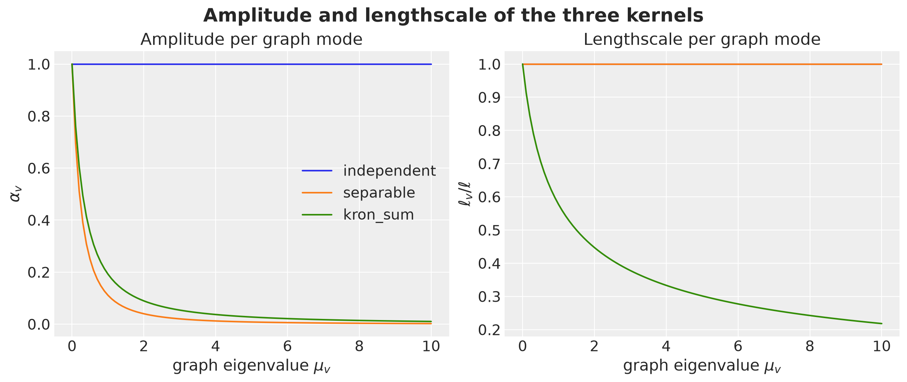
Note that a product of kernels has a Kronecker product covariance, and its spectrum is the product of the two spectra. In the Kronecker sum the spectra are combined inside the density. This is the whole difference between the separable kernel and the sum.
Remark (exponent of the separable graph factor): We use \(-(\nu + 1/2)\) for it, the same exponent as the time factor, so that before the trace normalization the separable and the Kronecker-sum weights coincide both at \(\mu_v = 0\) (for every \(j\)) and at \(\lambda_j \to 0\) (for every \(v\)), and the only difference between the two kernels is how \(\lambda_j / \kappa^2\) and \(\rho \mu_v\) are combined in between. The canonical graph Matérn of Borovitskiy et al. (2021) is \((\kappa_G^2 + \mu_v)^{-\nu_G}\) in our notation, with \(\kappa_G^2 = 2\nu_G / \ell_G^2\) (the paper writes it as \((2\nu_G / \kappa_G^2 + \mu_v)^{-\nu_G}\) because its \(\kappa_G\) is the lengthscale). It has no \(+1/2\) in the exponent, because that term comes from the dimension of the input space and a graph has none. Our choice is a modeling convenience for the comparison, not the canonical graph kernel.
Normalization
Here is a small detaild but important for numeric computations. We fix the overall scale by trace normalization. The prior variance of \(f\) at \((t, r)\) is \(\sum_{jv} W_{jv}\, \phi_j(t)^2\, u_v(r)^2\). Averaging over the regions uses \(\sum_r u_v(r)^2 = 1\), and averaging over the box uses
\[ \frac{1}{2L} \int_{-L}^{L} \phi_j(t)^2\, dt = \frac{1}{2L} \int_{-L}^{L} \frac{1}{L} \sin^2\!\left(\omega_j (t + L)\right) dt = \frac{1}{2L} , \]
because a squared sine averages to one half over whole periods. So the average prior variance over the box and the regions is \(\sum_{j v} W_{j v} / (2 L R)\), and we choose \(C'\) so that this average equals \(\sigma_f^2\). Keep in mind that this is an average over the whole box, including the margins where the Dirichlet condition pulls the process toward zero. On the data weeks, which cover the middle two thirds of the box, the prior variance is about \(7\) to \(10\%\) above \(\sigma_f^2\), because the slow basis functions peak there.
Note that \(C'\) depends on \(\rho\), \(\ell\), \(\nu\), \(m\) and the graph. One consequence is worth keeping in mind. The limit \(\rho \to \infty\) does not shrink the process to zero, it redistributes the variance. Whatever the rough modes lose, the national mode gains, so the limit is complete pooling at the full variance \(\sigma_f^2\).
A second consequence is that \(\sigma_f\) and \(\rho\) are only weakly separable in the posterior. The normalization fixes the average variance, so \(\rho\) does not act on the overall scale, but it decides how the variance is split between the national mode and the regional deviations. The data pin the regional deviations well (fifteen modes over \(156\) weeks of short-memory signal), so if \(\rho\) grows and the regional share of the variance falls, \(\sigma_f\) must grow to keep the regional variance where the data put it. We will see the correlation in the posterior after the fit. Let’s look at both statements on the German graph, with the share of the total variance that each mode carries on the left and the average variance on the right.
SIGMA_F_0 = 1.0
def average_variance(w: Float[Array, "m R"], ell_box: float) -> float:
"Average prior variance over the box and the graph modes, sum(W) / (2 L R)."
return float(w.sum() / (2.0 * ell_box * w.shape[1]))
def trace_normalize(
w: Float[Array, "m R"], sigma_f: Float[Array, ""], ell_box: float
) -> Float[Array, "m R"]:
"Scale w so that mean_{t, r} Var f(t, r) = sum w / (2 ell_box R) equals sigma_f**2."
n_regions = w.shape[1]
return w * (sigma_f**2 * 2.0 * ell_box * n_regions / jnp.sum(w))
def kron_sum_weights(rho: float) -> Float[Array, "m R"]:
"Unnormalized kron_sum weights on the stand-in grid of graph eigenvalues."
return unnormalized_weights(
mu_coarse,
mode="kron_sum",
nu=NU,
length=LENGTH_0,
rho=rho,
ell_box=ell_box,
m=M_BASIS,
)
rho_curve = np.logspace(-2, 2, 60)
fig, axes = plt.subplots(nrows=1, ncols=2, figsize=(14, 5), layout="constrained")
for i, rho in enumerate([0.1, 1.0, 2.0, 10.0]):
w_rho = kron_sum_weights(rho)
axes[0].plot(
np.arange(mu_coarse.shape[0]),
np.asarray(w_rho.sum(axis=0) / w_rho.sum()),
color=f"C{i}",
marker="o",
markersize=4,
label=f"$\\rho$ = {rho}",
)
# Without the normalization the constant in front of the weights is fixed once, here at
# the smallest rho of the curve, and then kept while rho moves.
raw = np.array([average_variance(kron_sum_weights(rho), ell_box) for rho in rho_curve])
# With it, trace_normalize recomputes that constant at every rho.
normalized = np.array(
[
average_variance(
trace_normalize(kron_sum_weights(rho), SIGMA_F_0, ell_box), ell_box
)
for rho in rho_curve
]
)
np.testing.assert_allclose(normalized, SIGMA_F_0**2, rtol=1e-5)
axes[1].plot(rho_curve, raw / raw[0], color="C0", label="before normalization")
axes[1].plot(
rho_curve, normalized / SIGMA_F_0**2, color="C1", label="after normalization"
)
axes[0].set(
xlabel="graph mode $v$",
ylabel="share of the total variance",
yscale="log",
xticks=np.arange(0, 16, 3),
title="Where the variance goes",
)
axes[0].legend()
axes[1].set(
xlabel="pooling strength $\\rho$",
ylabel="average variance (relative)",
xscale="log",
title="What the normalization fixes",
)
axes[1].legend()
fig.suptitle(
"Trace normalization redistributes the variance", fontsize=18, fontweight="bold"
);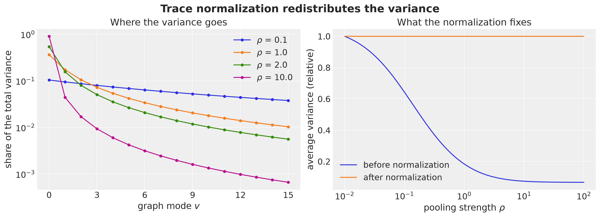
On the left, as \(\rho\) grows the rough modes lose their share of the variance and the constant mode absorbs it, until at \(\rho = 10\) the constant mode carries about \(90\%\) of it. That is complete pooling.
On the right we see why the normalization is needed. Without it the average variance would fall by a factor of about \(15\) over this range of \(\rho\), so \(\rho\) would silently act as a shrinkage parameter. After the normalization the average variance is held at \(\sigma_f^2\), and \(\rho\) only decides how the variance is split between the modes.
Node Standardization
Graph Matérn kernels have a marginal variance that depends on the node. As we will see below, on the German adjacency graph the prior variance at Bremen (degree \(1\)) is about three times the one at Lower Saxony (degree \(9\)), and the largest and smallest prior variances of the whole panel (Saarland and Lower Saxony) differ by a factor of about four, so the widest and the narrowest band differ by a factor of about two.
This is an accident of the adjacency, not a modeling statement. Let \(v_r = \sum_{j v} W_{j v}\, u_v(r)^2 / (2L)\) be the prior variance at region \(r\). We rescale \(f(\cdot, r)\) by \(s_r = \sigma_f / \sqrt{v_r}\).
With \(D = \operatorname{diag}(s)\) the kernel becomes \(D K D\), which is still positive semidefinite and still two matrix multiplications, because we simply replace \(U\) by \(D U\). Every region then has prior variance \(\sigma_f^2\) and the graph only shapes the correlations. Recall that for any positive diagonal \(D\) we have \(\text{corr}(D K D) = \text{corr}(K)\), because the factors \(d_r\) cancel between the covariance and the two standard deviations. The standardization changes every variance and no correlation. We come back to it with the real graph in the section on building blocks.
Basis Size
The number of time basis functions \(m\) must resolve the shortest effective lengthscale, \(\ell_{\min} = \ell / \sqrt{1 + \rho\, \mu_{\max}}\), not \(\ell\). The rule of thumb of Riutort-Mayol et al. (2023), Section \(4.3.1\), for a Matérn-\(3/2\) kernel is \(m \ge 3.42\, c\, S / \ell\), with \(S = (D - 1) / 2\) the half-range of the data, so that \(c\, S = L\) is the half-width of the box and the rule reads \(m \ge 3.42\, L / \ell\). It must be applied with \(\ell_{\min}\): \(m \gtrsim 3.42\, L / \ell_{\min}\). The same paper asks for a box large enough for the lengthscale, \(c \ge 4.5\, \ell / S\). With \(c = 1.5\) and \(S = 84\) this holds for \(\ell\) up to \(28\) weeks, which covers the posterior median of \(\ell\) below (about \(23\) weeks) but not the upper end of its HDI nor the \(\ell = 40\) curves plotted above. For those the box is slightly short, and the cost is the boundary effect on the variance that we quantify next. If \(m\) is too small the truncation silently over-smooths the rough spatial modes, which acts like a larger \(\rho\).
The next plot shows both faces of the problem.
On the left we repeat the kernel comparison of the interval section for three effective lengthscales at \(m = 48\): at \(\ell_v = 4\) weeks the approximation misses the peak.
On the right we plot the variance the basis can represent, \(\sum_j S(\sqrt{\lambda_j}) / (2L)\), as a function of the effective lengthscale and for three basis sizes. We divide it by the same quantity at \(m = 1000\), so that the curves isolate the truncation: a long lengthscale also loses variance because the box is short relative to \(\ell\) (about \(9\%\) at \(\ell = 20\)), but that boundary effect is controlled by \(c\), not by \(m\), and dividing it out keeps the two effects apart. With \(\ell = 20\) and \(\rho = 2\) the roughest mode of a graph with \(\mu_{\max} = 10\) has \(\ell_{\min} \approx 4.4\) weeks, the rule asks for about \(100\) basis functions, and \(m = 48\) captures about \(92\%\) of the variance of that mode. The rule is strict (it targets a \(1\%\) error on the whole kernel), and this ratio is the pragmatic check we use. We check the rule against the posterior later in the notebook.
ell_v_grid = np.linspace(2.0, 40.0, 100)
ell_min_0 = LENGTH_0 / np.sqrt(1.0 + RHO_0 * float(mu_grid.max()))
fig, axes = plt.subplots(nrows=1, ncols=2, figsize=(15, 6), layout="constrained")
for i, length_v in enumerate([20.0, 8.0, 4.0]):
s_j = diag_spectral_density_matern(
nu=NU, alpha=1.0, length=length_v, ell=ell_box, m=M_BASIS, dim=1
)
k_hsgp = (phi_full * s_j) @ phi_full[t_ref]
k_exact = matern32_kernel(t_grid - t_grid[t_ref], length_v)
axes[0].plot(
t_grid,
k_exact,
color=f"C{i}",
label=f"exact, $\\ell_v$ = {length_v:.0f}",
)
axes[0].plot(
t_grid,
k_hsgp,
color=f"C{i}",
linestyle="--",
label=f"HSGP, $\\ell_v$ = {length_v:.0f}",
)
axes[0].set(
xlabel="week $t$",
ylabel="$k(t, t')$",
xlim=(t_ref - 30, t_ref + 30),
title=f"Kernel approximation at m = {M_BASIS}",
)
axes[0].legend(fontsize=12)
def represented_variance(length_v: float, m: int) -> float:
"Prior variance the basis can represent, sum_j S(sqrt(lambda_j)) / (2 L)."
s_j = diag_spectral_density_matern(
nu=NU, alpha=1.0, length=length_v, ell=ell_box, m=m, dim=1
)
return float(s_j.sum() / (2.0 * ell_box))
reference = np.array([represented_variance(lv, 1_000) for lv in ell_v_grid])
for i, m in enumerate([24, 48, 96]):
captured = np.array([represented_variance(lv, m) for lv in ell_v_grid])
axes[1].plot(ell_v_grid, captured / reference, color=f"C{i}", label=f"m = {m}")
axes[1].axvline(
x=LENGTH_0, color="black", linestyle="--", label="$\\ell$ (national mode)"
)
axes[1].axvline(
x=ell_min_0, color="black", linestyle=":", label="$\\ell_{\\min}$ (roughest mode)"
)
axes[1].set(
xlabel="effective lengthscale $\\ell_v$ (weeks)",
ylabel="captured / untruncated variance",
title="Variance captured by the basis",
)
axes[1].legend()
fig.suptitle("Truncation hits the rough modes first", fontsize=18, fontweight="bold");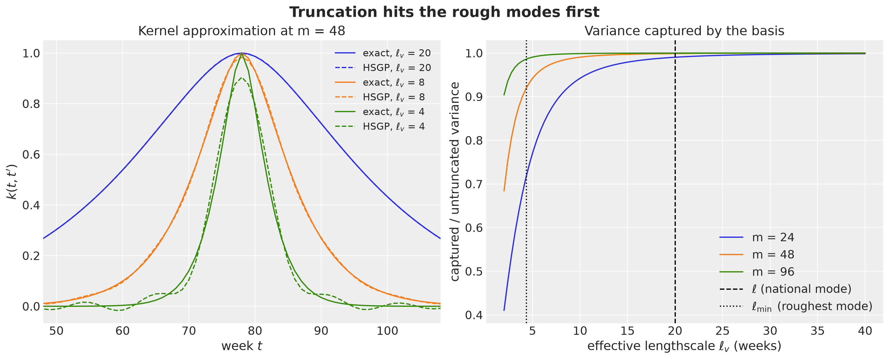
The German States Graph
Now we are ready to make all of these concepts more tangible by working on an explicit example.
We use the adjacency graph of the \(16\) German states (Bundesländer). Two states are adjacent if their polygons share a border. We read the state polygons from a GeoJSON file (isellsoap/deutschlandGeoJSON, low-resolution version, derived from data of the Federal Agency for Cartography and Geodesy under the dl-de/by-2-0 license), see the blog post Open Data: Germany Maps Viz.
Two polygons are adjacent if they intersect. The polygons in this file are low resolution and overlap slightly along shared borders rather than touching exactly, so intersects is the right test (touches would return no pairs), and the result matches the \(29\) real state borders. We define three helper functions:
load_statesreads the file,adjacency_from_geometriesbuilds the matrix \(A\),edges_from_adjacencyturns it into the edge list for the plots.
def load_states(path: str) -> gpd.GeoDataFrame:
"State polygons indexed by the two-letter state code."
gdf = gpd.read_file(path)
gdf["code"] = gdf["id"].str.replace("DE-", "")
return gdf.set_index("code")
def adjacency_from_geometries(geometries: gpd.GeoSeries) -> Float[Array, "R R"]:
"Symmetric 0/1 adjacency matrix: two polygons are adjacent if they intersect."
intersects = jnp.asarray(
np.stack([geometries.intersects(g).to_numpy() for g in geometries]),
dtype=jnp.float32,
)
return intersects * (1.0 - jnp.eye(intersects.shape[0]))
def edges_from_adjacency(
adjacency: Float[Array, "R R"], labels: list[str]
) -> list[tuple[str, str]]:
"Edge list (i < j) of a symmetric adjacency matrix."
rows, cols = jnp.nonzero(jnp.triu(adjacency))
return [(labels[int(i)], labels[int(j)]) for i, j in zip(rows, cols, strict=True)]
states_gdf = load_states("../data/germany_states.geojson")
STATES = list(states_gdf.index)
R = len(STATES)
state_index = {s: i for i, s in enumerate(STATES)}
adjacency = adjacency_from_geometries(states_gdf.geometry)
EDGES = edges_from_adjacency(adjacency, STATES)
positions = {
s: (p.x, p.y) for s, p in states_gdf.geometry.representative_point().items()
}
degree = adjacency.sum(axis=1)
print(f"{R} states, {len(EDGES)} borders")
pl.DataFrame(
{
"state": STATES,
"name": states_gdf["name"].to_list(),
"degree": np.asarray(degree),
}
)16 states, 29 borders| state | name | degree |
|---|---|---|
| str | str | f32 |
| "BW" | "Baden-Württemberg" | 3.0 |
| "BY" | "Bayern" | 4.0 |
| "BE" | "Berlin" | 1.0 |
| "BB" | "Brandenburg" | 5.0 |
| "HB" | "Bremen" | 1.0 |
| … | … | … |
| "SL" | "Saarland" | 1.0 |
| "ST" | "Sachsen-Anhalt" | 4.0 |
| "SN" | "Sachsen" | 4.0 |
| "SH" | "Schleswig-Holstein" | 3.0 |
| "TH" | "Thüringen" | 5.0 |
The degrees are very uneven. Lower Saxony (NI) touches nine other states, while Berlin (BE), Bremen (HB) and Saarland (SL) touch only one. Let’s draw the graph on the map, with the node color showing the degree.
graph = nx.Graph(EDGES)
fig, ax = plt.subplots(figsize=(9, 10))
states_gdf.plot(ax=ax, color="lightgray", edgecolor="white", linewidth=1)
nodes = nx.draw_networkx_nodes(
graph,
pos=positions,
nodelist=STATES,
node_color=np.asarray(degree),
cmap="viridis_r",
node_size=700,
ax=ax,
)
nx.draw_networkx_edges(graph, pos=positions, edge_color="C1", width=1.5, ax=ax)
nx.draw_networkx_labels(
graph, pos=positions, font_color="white", font_weight="bold", ax=ax
)
fig.colorbar(nodes, ax=ax, label="degree", shrink=0.6)
ax.set(xlabel="longitude", ylabel="latitude")
fig.suptitle("Adjacency graph of the German states", fontsize=18, fontweight="bold");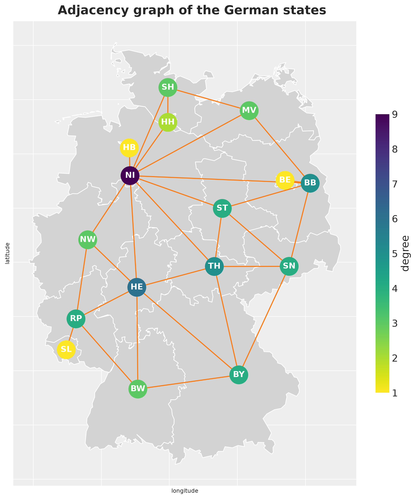
We compute the Laplacian and its eigendecomposition once. We clip tiny negative eigenvalues coming from round-off and set \(\mu_0 = 0\) exactly.
def graph_laplacian(adjacency: Float[Array, "R R"]) -> Float[Array, "R R"]:
"Combinatorial graph Laplacian L = D - A of a symmetric adjacency matrix."
if not jnp.allclose(adjacency, adjacency.T):
raise ValueError("adjacency must be symmetric")
return jnp.diag(adjacency.sum(axis=1)) - adjacency
def laplacian_eigenpairs(
adjacency: Float[Array, "R R"],
) -> tuple[Float[Array, " R"], Float[Array, "R R"]]:
"Ascending eigenvalues mu (mu[0] = 0) and eigenvectors U (columns)."
mu, U = jnp.linalg.eigh(graph_laplacian(adjacency))
mu = jnp.clip(mu, 0.0, None).at[0].set(0.0)
return mu, U
mu, U = laplacian_eigenpairs(adjacency)
n_zero = int((mu < 1e-8).sum())
print(f"zero eigenvalues: {n_zero} (1 means the graph is connected)")
print(f"largest eigenvalue: {float(mu[-1]):.2f}")
print(f"largest degree + 1: {float(degree.max()) + 1:.0f}")
fig, ax = plt.subplots()
ax.stem(np.arange(R), np.asarray(mu), basefmt=" ")
ax.set(xlabel="graph mode $v$", ylabel="$\\mu_v$", xticks=np.arange(R))
fig.suptitle("Eigenvalues of the graph Laplacian", fontsize=18, fontweight="bold");zero eigenvalues: 1 (1 means the graph is connected)
largest eigenvalue: 10.19
largest degree + 1: 10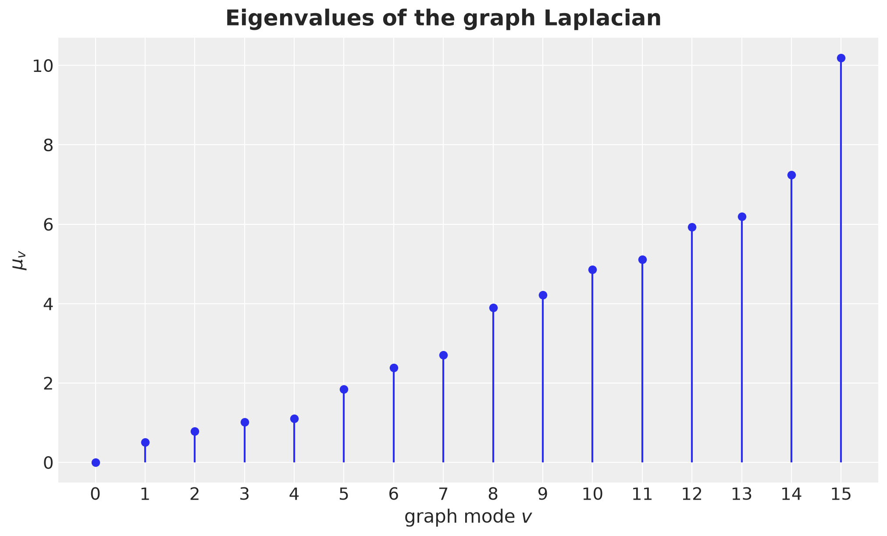
The graph is connected, so the eigenvalue zero appears once and mode \(0\) is the national average mode.
The largest eigenvalue is close to \(d_{\max} + 1\), with \(d_{\max}\) the largest degree. The roughest mode is therefore the local pattern around the hub, which is why the hub degree, and not the size of the graph, decides how rough this graph can get.
The maps below are the German version of the path-graph modes we plotted in the theory section. The first eigenvector is constant. The second one (the Fiedler vector) splits the graph into two smooth halves, south-west against north-east. Higher modes oscillate faster over the graph.
fig, axes = plt.subplots(nrows=2, ncols=4, figsize=(16, 9), layout="constrained")
vmax = float(jnp.abs(U).max())
for v, ax in enumerate(axes.flat):
states_gdf.plot(ax=ax, color="lightgray", edgecolor="white", linewidth=0.5)
nodes = nx.draw_networkx_nodes(
graph,
pos=positions,
nodelist=STATES,
node_color=U[:, v],
cmap="coolwarm",
vmin=-vmax,
vmax=vmax,
node_size=250,
ax=ax,
)
nx.draw_networkx_edges(graph, pos=positions, edge_color="gray", ax=ax)
ax.set(
title=f"mode {v}, $\\mu_{{{v}}}$ = {mu[v]:.2f}",
xticks=[],
yticks=[],
xlabel="",
ylabel="",
)
fig.colorbar(nodes, ax=axes, label="$u_v(r)$", shrink=0.6)
fig.suptitle("Graph Laplacian eigenvectors", fontsize=18, fontweight="bold");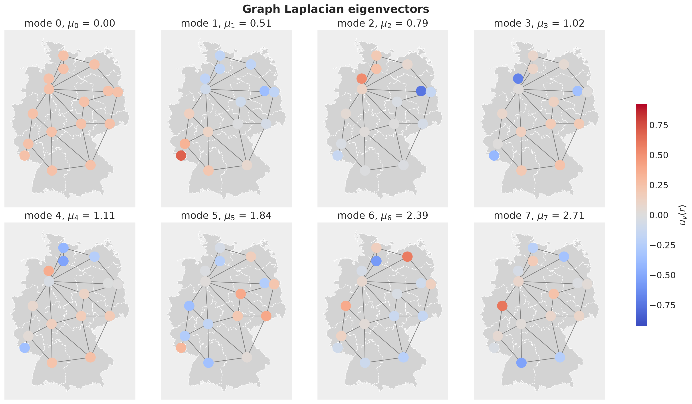
Building Blocks
Now that we have the graph, let’s turn the construction into code. The same functions serve the forecasting models and the backtest below. We build them step by step, as small modular functions, and we check each piece at the reference values of the theory section as we go. At the end of the section we compare the three kernels at those values. For the HSGP on the interval we are covered: the module numpyro.contrib.hsgp already provides the sine basis and its eigenvalues (eigenfunctions, sqrt_eigenvalues), the Matérn spectral density evaluated at the eigenvalues (diag_spectral_density_matern), and the linear model \(\Phi (\sqrt{W} \circ B)\) with its coefficients (linear_approximation). We reuse all of them.
The graph side needs a bit more work. We already wrote mode_hyperparameters and unnormalized_weights in the theory section. In this section we complete the set.
Time Side
The function time_box builds the centered grid and the half-width \(L = c\,(D - 1) / 2\). time_basis returns the sine basis \(\Phi\) and the eigenvalues \(\lambda_j\) from numpyro.contrib.hsgp. Both depend only on the duration and on \(m\), not on any hyperparameter.
def time_box(
duration: int, c: float = C_BOX
) -> tuple[Float[Array, " duration"], float]:
"Centered time grid and the box half-width c * (duration - 1) / 2."
t = jnp.arange(duration, dtype=jnp.float32)
half = (duration - 1) / 2.0
return t - half, float(c * half)
def time_basis(
t_c: Float[Array, " duration"], ell_box: float, m: int
) -> tuple[Float[Array, "duration m"], Float[Array, " m"]]:
"HSGP sine basis Phi (duration, m) and eigenvalues lambda (m,) on the box."
phi = eigenfunctions(t_c, ell=ell_box, m=m)
lam = sqrt_eigenvalues(ell_box, m, dim=1)[0] ** 2
return phi, lamSpectral Weights
spectral_weights composes unnormalized_weights and trace_normalize, both from the theory section: the weights are scaled so that the average prior variance over the box and the regions is \(\sigma_f^2\).
def spectral_weights(
mu: Float[Array, " R"],
*,
mode: Mode,
nu: float,
length: Float[Array, ""],
rho: Float[Array, ""],
sigma_f: Float[Array, ""],
ell_box: float,
m: int,
) -> Float[Array, "m R"]:
"Trace-normalized spectral weights W[j, v] for one of the three kernels."
w = unnormalized_weights(
mu, mode=mode, nu=nu, length=length, rho=rho, ell_box=ell_box, m=m
)
return trace_normalize(w, sigma_f, ell_box)Effective Lengthscales
The model has one lengthscale hyperparameter \(\ell\), but the Kronecker sum turns it into \(R\) different ones, \(\ell_v = \ell / \sqrt{1 + \rho \mu_v}\), and only the national mode has memory \(\ell\). Think of \(\ell\) as the memory of the country and of \(\ell_{\min} = \ell / \sqrt{1 + \rho \mu_{\max}}\) as the memory of the most local pattern the graph can express. Two things depend on the shortest lengthscale, not on \(\ell\):
The basis size. A sine basis with \(m\) terms cannot represent wiggles faster than \(\omega_m\). If \(\ell_{\min}\) is shorter than what the basis resolves, the rough modes are silently smoothed. Smoothing the rough modes is what a larger \(\rho\) does, so the posterior of \(\rho\) gets biased upward without any warning.
How to read the posterior. A posterior median of \(\ell = 20\) weeks with \(\rho = 2\) does not mean that regional deviations persist for \(20\) weeks. It means that the national trend does. The roughest regional pattern forgets in about four weeks.
effective_lengthscales computes \(\ell_v\) from the posterior draws.
def effective_lengthscales(
mu: Float[Array, " R"], length: Float[Array, ""], rho: Float[Array, ""]
) -> Float[Array, " R"]:
"Temporal lengthscale of each graph mode: ell / sqrt(1 + rho mu_v)."
return length / jnp.sqrt(1.0 + rho * mu)Let’s use this to generate some samples:
w_example = spectral_weights(
mu,
mode="kron_sum",
nu=NU,
length=LENGTH_0,
rho=RHO_0,
sigma_f=SIGMA_F_0,
ell_box=ell_box,
m=M_BASIS,
)
ell_v_example = effective_lengthscales(mu, LENGTH_0, RHO_0)
rng_key, rng_subkey = random.split(rng_key)
beta_shared = random.normal(rng_subkey, (M_BASIS,))
z_modes = phi_full @ (jnp.sqrt(w_example) * beta_shared[:, None]) # (DURATION, R)
fig, axes = plt.subplots(
nrows=4, ncols=1, figsize=(12, 12), sharex=True, layout="constrained"
)
for ax, v in zip(axes, [0, 1, 5, 15], strict=True):
ax.plot(np.asarray(t_grid), np.asarray(z_modes[:, v]), color="C0")
ax.axhline(y=0.0, color="gray", linewidth=0.8)
ell_txt = f"$\\ell_v$ = {ell_v_example[v]:.1f} weeks"
sd_txt = f"sd = {float(z_modes[:, v].std()):.2f}"
title = f"graph mode {v}: $\\mu_v$ = {mu[v]:.2f}, {ell_txt}, {sd_txt}"
ax.set(title=title, ylabel="$z_v(t)$")
axes[-1].set(xlabel="week")
fig.suptitle(
"One prior draw of four graph modes, same coefficients",
fontsize=18,
fontweight="bold",
);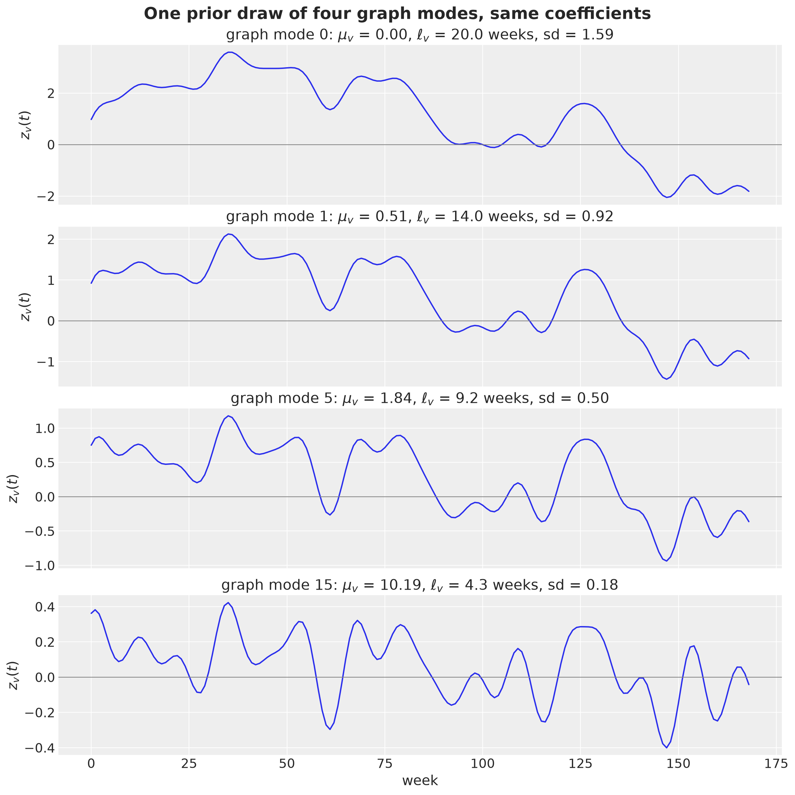
As expected, the rougher modes are more wiggly.
Node Variances
Every eigenvector is normalized over the graph, \(\sum_r u_v(r)^2 = 1\), but a single node’s share \(u_v(r)^2\) differs from node to node. A hub like Lower Saxony (NI, degree \(9\)) has a mode of its own: the roughest eigenvector, with \(\mu_{15} \approx 10\), is concentrated on the hub and its neighbors with alternating signs, and almost all of Lower Saxony’s weight sits there. A leaf like Bremen (HB) barely appears in the rough modes and loads on the smooth modes instead. After weighting by \(W_{jv}\), which favors the smooth modes, the total prior variance at node \(r\),
\[ v_r = \frac{1}{2L} \sum_{j, v} W_{jv}\, u_v(r)^2 , \]
is not constant: the hub gets the smallest prior variance and the leaves get the largest. On this graph the largest and the smallest prior variance differ by a factor of about four, purely from the adjacency, so the widest and the narrowest band differ by a factor of about two. That would make the model expect Bremen to be much more volatile than Lower Saxony before seeing any data, which is not a statement we want the prior to make. The BYM example faces the same problem with the ICAR prior and handles it with a scaling factor computed from the adjacency matrix. Here the fix is the same idea. node_variances computes \(v_r\) from the weights, and we divide it out with \(s_r = \sigma_f / \sqrt{v_r}\), which gives the \(D K D\) kernel of the theory section. Every region then has variance \(\sigma_f^2\) and the graph is left to shape only how the regions co-move.
We first look at the loadings \(u_v(r)^2\) and then at \(v_r\) before and after the standardization.
def node_variances(
weights: Float[Array, "m R"], U: Float[Array, "R R"], ell_box: float
) -> Float[Array, " R"]:
"Prior variance v_r = sum_{j, v} W[j, v] U[r, v]**2 / (2 ell_box) at each region."
return jnp.einsum("jv,rv->r", weights, U**2) / (2.0 * ell_box)
fig, ax = plt.subplots(figsize=(12, 7))
im = ax.imshow(np.asarray(U**2), cmap="viridis_r", aspect="auto")
ax.set(
xlabel="graph mode $v$",
ylabel="region",
xticks=np.arange(R),
yticks=np.arange(R),
yticklabels=STATES,
)
ax.grid(visible=False)
for label in ax.get_yticklabels():
if label.get_text() in ["HB", "NI"]:
label.set_fontweight("bold")
label.set_color("C1")
fig.colorbar(im, ax=ax, label="$u_v(r)^2$")
fig.suptitle(
"How much of each graph mode lives on each region", fontsize=18, fontweight="bold"
);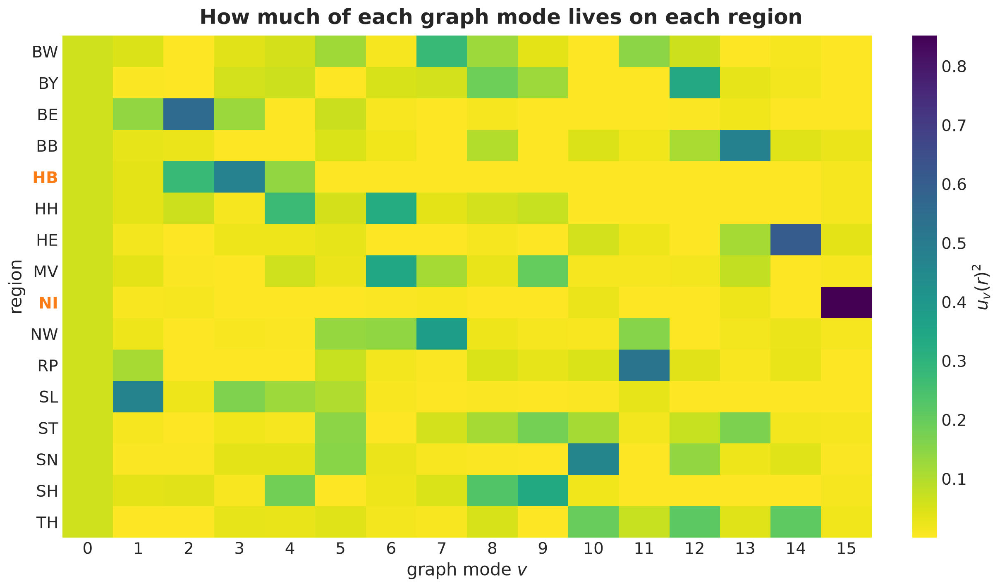
Lower Saxony (NI) loads almost entirely on the roughest mode \(15\), which carries the smallest weights. Bremen (HB) loads on the smooth modes \(2\) to \(4\), which carry large weights. That is why the hub gets the smallest prior variance and the leaves get the largest.
v_raw = node_variances(w_example, U, ell_box)
scale_example = SIGMA_F_0 / jnp.sqrt(v_raw)
v_std = node_variances(w_example, U * scale_example[:, None], ell_box)
fig, ax = plt.subplots()
x = np.arange(R)
ax.bar(x - 0.2, v_raw, width=0.4, color="C0", label="raw")
ax.bar(x + 0.2, v_std, width=0.4, color="C1", label="standardized")
ax.axhline(y=SIGMA_F_0**2, color="black", linestyle="--", label="$\\sigma_f^2$")
ax.set(xticks=x, xticklabels=STATES, ylabel="prior variance $v_r$", xlabel="region")
ax.legend()
fig.suptitle("Prior variance per region (kron_sum)", fontsize=18, fontweight="bold");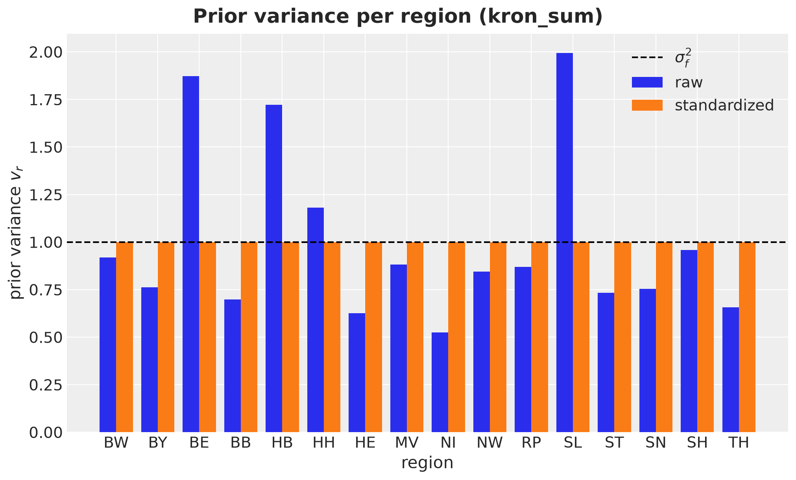
The raw prior gives the low-degree states (Bremen, Saarland, Berlin) a much wider prior band than the hubs. After the standardization every region has variance \(\sigma_f^2\) and the graph only shapes the correlations.
The Gaussian Process Block
Recall that the latent process, under the HSGP approximation, is
\[ f(t, r) = \sum_{j, v} \sqrt{W_{j v}}\, \beta_{j v}\, \phi_j(t)\, u_v(r), \qquad \beta_{j v} \sim \text{Normal}(0, 1), \]
or, with \(\Phi\) the \(T \times m\) matrix of time basis functions and \(B\) the \(m \times R\) matrix of coefficients, \(F = \Phi\, (\sqrt{W} \circ B)\, U^\top\). The function kron_hsgp below builds this latent process. The first matrix multiplication, \(\Phi (\sqrt{W} \circ B)\) with \(B \sim \text{Normal}(0, 1)\), is linear_approximation from numpyro.contrib.hsgp, and we call it inside a graph_mode plate so that the coefficients get the shape \((m, R)\) (one temporal HSGP per graph mode, site beta). The second multiplication rotates back to the regions with the scaled eigenvector matrix \(D U\), so the node standardization costs nothing extra. For the independent kernel the rotation is skipped (\(U = I\)), and the plate then runs over the regions rather than over graph modes.
def kron_hsgp(
name: str,
phi: Float[Array, "T m"],
U: Float[Array, "R R"],
weights: Float[Array, "m R"],
*,
mode: Mode,
scale: Float[Array, " R"] | None = None,
) -> Float[Array, "T R"]:
"Latent panel f = Phi (sqrt(W) * B) (D U)^T, B ~ Normal(0, 1), D = diag(scale)."
m, R = weights.shape
with numpyro.plate("graph_mode", R, dim=-1):
f = linear_approximation(phi, jnp.sqrt(weights), m) # (T, R), "beta" is (m, R)
# the inner "basis" plate of linear_approximation lands at dim -2 because the
# graph_mode plate holds -1; guard the contract in case that ever changes
if f.shape[-2:] != (phi.shape[0], R):
raise ValueError(
f"unexpected latent shape {f.shape}, expected (..., {phi.shape[0]}, {R})"
)
if mode != "independent":
U_scaled = U if scale is None else U * scale[:, None] # node standardization
f = f @ U_scaled.T # back to regions
return numpyro.deterministic(f"{name}_f", f)What do the basis functions \(\phi_j(t) u_v(r)\) of the product space look like? We draw four of them as images over weeks and regions, with the regions ordered from north to south so that the spatial pattern is visible.
north_to_south = np.argsort(-np.array([positions[s][1] for s in STATES]))
pairs_to_show = [(1, 0), (1, 1), (3, 1), (3, 15)]
fig, axes = plt.subplots(
nrows=2, ncols=2, figsize=(12, 9), sharex=True, layout="constrained"
)
for ax, (j, v) in zip(axes.flat, pairs_to_show, strict=True):
basis_image = np.outer(phi_full[:, j - 1], U[:, v]) # (T, R)
basis_image = (
basis_image / np.abs(basis_image).max()
) # normalized, the pattern is the point
im = ax.imshow(
basis_image[:, north_to_south].T,
aspect="auto",
cmap="coolwarm",
vmin=-1,
vmax=1,
)
ax.set(
title=f"$\\phi_{{{j}}}(t)\\, u_{{{v}}}(r)$: $\\mu_{{{v}}}$ = {mu[v]:.2f}",
yticks=np.arange(R),
yticklabels=[STATES[i] for i in north_to_south],
)
ax.grid(visible=False)
for ax in axes[-1]:
ax.set(xlabel="week")
fig.colorbar(im, ax=axes, shrink=0.6, label="normalized value")
fig.suptitle(
"Four basis functions of the product space", fontsize=18, fontweight="bold"
);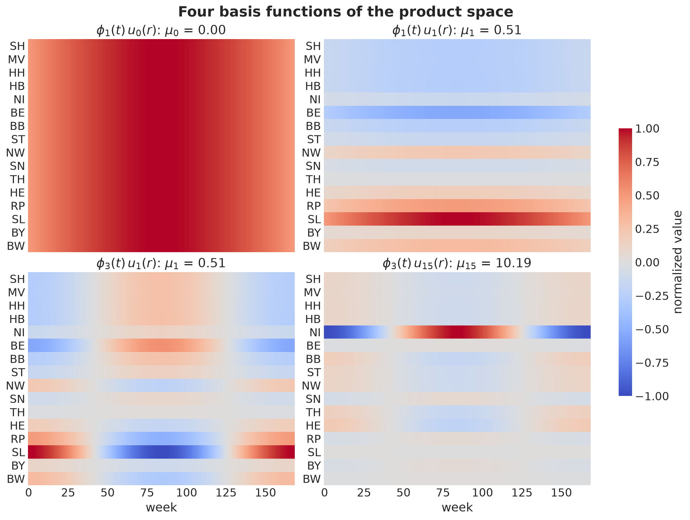
The pair \((1, 0)\) is a slow national wave: every region moves together.
The pair \((1, 1)\) is the same slow wave with the sign flip of the Fiedler vector, south-west against north-east.
The pair \((3, 1)\) is a faster wave with the same spatial split
The pair \((3, 15)\) is a fast checkerboard concentrated on Lower Saxony and its neighbors.
The Kronecker sum gives the largest weight to the first image and the smallest to the last one.
Finally, the approximate_kernel materializes the full covariance
\[k((t, r), (t', r')) = \sum_{j, v} W_{jv}\, \phi_j(t) \phi_j(t')\, u_v(r) u_v(r')\]
as a \((T, R, T, R)\) array. We do not need it for inference, but it is what the non-separability check below works with.
def approximate_kernel(
phi: Float[Array, "T m"], U: Float[Array, "R R"], weights: Float[Array, "m R"]
) -> Float[Array, "T R T R"]:
"Covariance sum_{j, v} W[j, v] phi_j(t) phi_j(t') U[r, v] U[r', v] as (T, R, T, R)."
return jnp.einsum("tj,sj,rv,qv,jv->trsq", phi, phi, U, U, weights)Comparing the Kernels
With every piece in place, we compare the three kernels before we fit them to any data. We fix the hyperparameters at the values of the theory section, \(\sigma_f = 1\), \(\ell = 20\) weeks and \(\rho = 2\), and we compare what the three kernels imply for the latent panel \(f(t, r)\) at these values. We define the priors on the hyperparameters later, together with the forecasting models.
We run three checks, each in its own subsection:
Spectral weights. We compute the weights \(W_{jv}\) of the three kernels on the real graph and plot them as heatmaps. The theory section showed the weights for a few stand-in eigenvalues. Here we have all \(16\) modes of the German graph. From the weights we also get the effective lengthscale of each mode and the basis size that the rule of thumb asks for.
Non-separability. We compute the correlation between two regions as a function of the time lag, for adjacent and for non-adjacent pairs. Under the separable kernel the ratio of the two does not depend on the lag. Under the Kronecker sum it does. We check this on the approximate kernel.
Prior draws. We draw one latent panel from each kernel with the same coefficients \(\beta_{jv}\), so that the three draws differ only through the weights.
These checks have two purposes. First, they confirm on the real graph what the theory section derived on a stand-in grid. Second, the draws show the structure that the kernels describe: a shared trend, regional deviations that revert to it, and rough patterns that fade faster than smooth ones. The data generating process of the next section has to produce these features with a different model, and the draws are our reference for what that should look like.
Let’s fix the hyperparameters and compute the weights.
prior_hyper = {
"sigma_f": jnp.asarray(SIGMA_F_0),
"length": jnp.asarray(LENGTH_0),
"rho": jnp.asarray(RHO_0),
}
weights_fixed = {
mode: spectral_weights(
mu, mode=mode, nu=NU, ell_box=ell_box, m=M_BASIS, **prior_hyper
)
for mode in MODES
}Weights of the Three Kernels
The weights \(W_{jv}\) are the only thing that changes between the three models. We first look at them as heatmaps over \((j, v)\). For the independent model they do not depend on the graph mode. For the separable model the graph enters as a per-mode amplitude that is the same for every temporal frequency \(j\). For the Kronecker sum the graph also enters through the lengthscale: a rough graph mode loses its slow temporal frequencies far more than its fast ones, so its column is flatter.
fig, axes = plt.subplots(
nrows=1, ncols=3, figsize=(16, 5), sharey=True, layout="constrained"
)
log_w = {mode: np.log10(np.asarray(w)) for mode, w in weights_fixed.items()}
vmin = min(w.min() for w in log_w.values())
vmax = max(w.max() for w in log_w.values())
for ax, mode in zip(axes, MODES, strict=True):
im = ax.imshow(
log_w[mode],
aspect="auto",
origin="lower",
cmap="viridis",
vmin=vmin,
vmax=vmax,
extent=(-0.5, R - 0.5, 0.5, M_BASIS + 0.5), # rows are j = 1, ..., m
)
ax.set(title=mode, xlabel="graph mode $v$", ylabel="time frequency $j$")
fig.colorbar(im, ax=axes, label="$\\log_{10} W_{jv}$", shrink=0.8)
fig.suptitle("Spectral weights of the three kernels", fontsize=18, fontweight="bold");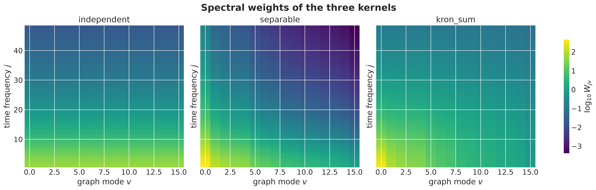
The three panels share one color scale.
The independent panel is \(16\) copies of the same column.
The separable panel darkens from left to right by the same amount in every row, which is a per-mode amplitude.
The Kronecker-sum panel darkens from left to right much more at the bottom than at the top: a rough mode keeps relatively more of its variance at high frequencies, which is a shorter memory.
Memory of Each Mode
Under the Kronecker sum each graph mode is a temporal Matérn process with its own lengthscale \(\ell_v = \ell / \sqrt{1 + \rho \mu_v}\). The theory section sized the basis with a stand-in \(\mu_{\max} = 10\). Here we compute \(\ell_v\) for the \(16\) modes of the real graph and apply the basis size rule to the shortest one. We come back to the same rule with the posterior values after the fit.
ell_modes = effective_lengthscales(mu, prior_hyper["length"], prior_hyper["rho"])
M_RULE_MATERN32 = 3.42 # Riutort-Mayol et al. (2023), Section 4.3.1
m_rule = M_RULE_MATERN32 * ell_box / float(ell_modes.min()) # 3.42 L / ell_min
fig, ax = plt.subplots()
ax.bar(np.arange(R), np.asarray(ell_modes), color="C0")
ax.axhline(
y=float(prior_hyper["length"]),
color="C1",
linestyle="--",
label="$\\ell$ (national mode)",
)
ax.set(xlabel="graph mode $v$", ylabel="$\\ell_v$ (weeks)", xticks=np.arange(R))
ax.legend()
fig.suptitle(
"Effective temporal lengthscale per graph mode", fontsize=18, fontweight="bold"
);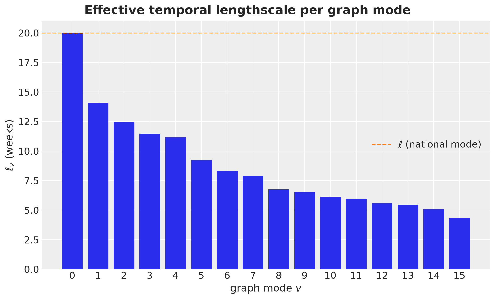
With \(\ell = 20\) and \(\rho = 2\) the national mode keeps the full \(20\) weeks and the roughest mode is down to about four. The two numbers that matter are the shortest lengthscale and the basis size the rule asks for.
print(f"shortest effective lengthscale: {float(ell_modes.min()):.1f} weeks")
print(f"basis size rule: m >= {m_rule:.0f} (we use m = {M_BASIS})")shortest effective lengthscale: 4.3 weeks
basis size rule: m >= 100 (we use m = 48)The rule asks for about twice the basis functions we use. We keep \(m = 48\) for speed, since the basis size figure of the theory section shows that it captures about \(92\%\) of the variance of the roughest mode, and we come back to this point after the fit, where we check the rule against the posterior and refit with a larger \(m\).
Non-Separability
What does non-separable mean in practice? For a separable kernel \(k((t, r), (t', r')) = k_t(t - t')\, k_G(r, r')\), the correlation between two regions at time lag \(k\) factorizes,
\[ \text{Corr}\big(f(t, r), f(t + k, r')\big) = \frac{k_t(k)}{k_t(0)} \cdot \frac{k_G(r, r')}{\sqrt{k_G(r, r)\, k_G(r', r')}}, \]
so the ratio of the correlation between adjacent regions to the correlation between non-adjacent regions does not depend on the lag. For the Kronecker sum, rough spatial modes decay faster in time, so at long lags only the smooth national mode survives. Every pair’s correlation then decays at the same rate and the ratio levels off, at a value closer to one than at lag zero. We check this directly on the approximate kernel. We standardize the nodes first so that all regions have the same variance, and we define the two sets of region pairs.
def standardized_U(
weights: Float[Array, "m R"],
U: Float[Array, "R R"],
ell_box: float,
sigma_f: Float[Array, ""],
) -> Float[Array, "R R"]:
"Eigenvector matrix D U with the node standardization folded in."
scale = sigma_f / jnp.sqrt(node_variances(weights, U, ell_box))
return U * scale[:, None]
adjacent = np.asarray(adjacency, dtype=bool)
non_adjacent = ~adjacent & ~np.eye(R, dtype=bool)Next we compute the full kernel, turn it into a correlation, and average the correlation at lag \(k\) over adjacent and over non-adjacent pairs, with the reference time \(t\) in the middle of the box.
def correlation_by_lag(mode: Mode, lags: np.ndarray, t0: int) -> dict[str, np.ndarray]:
"Mean prior correlation between regions at each lag, by adjacency."
U_mode = standardized_U(weights_fixed[mode], U, ell_box, prior_hyper["sigma_f"])
kernel = np.asarray(approximate_kernel(phi_full, U_mode, weights_fixed[mode]))
sd = np.sqrt(np.einsum("trtr->tr", kernel))
corr = kernel / (sd[:, :, None, None] * sd[None, None, :, :])
return {
"adjacent": np.array([corr[t0, :, t0 + k, :][adjacent].mean() for k in lags]),
"non-adjacent": np.array(
[corr[t0, :, t0 + k, :][non_adjacent].mean() for k in lags]
),
}
lags = np.arange(0, 27)
corr_by_lag = {
mode: correlation_by_lag(mode, lags, t0=DURATION // 2)
for mode in ["separable", "kron_sum"]
}Let’s plot the two mean correlations and their ratio as a function of the lag.
fig, axes = plt.subplots(nrows=1, ncols=2, figsize=(14, 5), layout="constrained")
for i, mode in enumerate(["separable", "kron_sum"]):
for j, pair in enumerate(["adjacent", "non-adjacent"]):
axes[0].plot(
lags,
corr_by_lag[mode][pair],
color=f"C{i}",
linestyle=["-", "--"][j],
label=f"{mode}, {pair}",
)
ratio = corr_by_lag[mode]["non-adjacent"] / corr_by_lag[mode]["adjacent"]
axes[1].plot(lags, ratio, color=f"C{i}", label=mode)
axes[0].set(
xlabel="time lag (weeks)",
ylabel="prior correlation",
title="Cross-region correlation by lag",
)
axes[0].legend()
axes[1].set(
xlabel="time lag (weeks)",
ylabel="non-adjacent / adjacent",
title="Ratio non-adjacent to adjacent",
)
axes[1].legend()
fig.suptitle("Separable versus Kronecker-sum kernel", fontsize=18, fontweight="bold");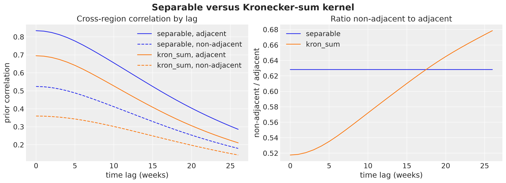
For the separable kernel the ratio is flat to four digits, \(0.628\) at every lag: the spatial pattern of the correlations does not depend on the time lag. For the Kronecker sum it rises from \(0.52\) at lag zero to \(0.68\) at lag \(26\), and it keeps rising beyond the plot toward about \(0.79\), the value at which only the national mode is left. That limit is not one, because the prior variance of the hub sits almost entirely in the national mode (about \(78\%\) for NI against about \(22\%\) for the three leaves, a share that the standardization does not change), and the adjacent pairs contain the hub far more often than the non-adjacent pairs do (\(9\) of \(29\) against \(6\) of \(91\)). Over a horizon of a few months the ratio only moves part of the way. This is the behavior we want for a forecast: as the horizon grows, the regional forecasts revert toward the national one.
Prior Draws
Finally, let’s draw one latent panel from each kernel. latent_prior is a small NumPyro model that takes the three hyperparameters as inputs and runs the GP block from above, so its only sample site is the coefficient matrix \(B\). Because the three kernels draw \(B\) from the same site with the same key, the three panels use the same coefficients and differ only in the weights, so they are directly comparable.
def latent_prior(mode: Mode, m: int = M_BASIS, nu: float = NU):
"Prior on the latent panel f at fixed hyperparameters. B is the only sample site."
phi_m, _ = time_basis(t_centered, ell_box, m)
def model(hyper: dict[str, Array]) -> None:
w = spectral_weights(mu, mode=mode, nu=nu, ell_box=ell_box, m=m, **hyper)
scale = (
None
if mode == "independent"
else hyper["sigma_f"] / jnp.sqrt(node_variances(w, U, ell_box))
)
kron_hsgp("gp", phi_m, U, w, mode=mode, scale=scale)
return modelWe draw one latent panel from each of the three kernels at the fixed hyperparameters.
rng_key, rng_subkey = random.split(rng_key)
prior_draws = {
mode: Predictive(latent_prior(mode), num_samples=1)(rng_subkey, prior_hyper)[
"gp_f"
][0]
for mode in MODES
}Let’s plot the three panels on a common scale, one line per region.
fig, axes = plt.subplots(
nrows=3, ncols=1, figsize=(12, 12), sharex=True, sharey=True, layout="constrained"
)
for ax, mode in zip(axes, MODES, strict=True):
f_draw = prior_draws[mode]
for r in range(R):
ax.plot(
f_draw[:, r],
color="C0",
alpha=0.4,
label="one line per region" if r == 0 else None,
)
ax.plot(f_draw.mean(axis=1), color="C1", linewidth=3, label="regional mean")
ax.axvline(x=T_OBS, color="black", linestyle="--")
ax.set(title=mode, ylabel="$f(t, r)$")
axes[0].legend(loc="upper left")
axes[-1].set(xlabel="week")
fig.suptitle(
"One prior draw of the latent panel per kernel, same coefficients $B$",
fontsize=18,
fontweight="bold",
);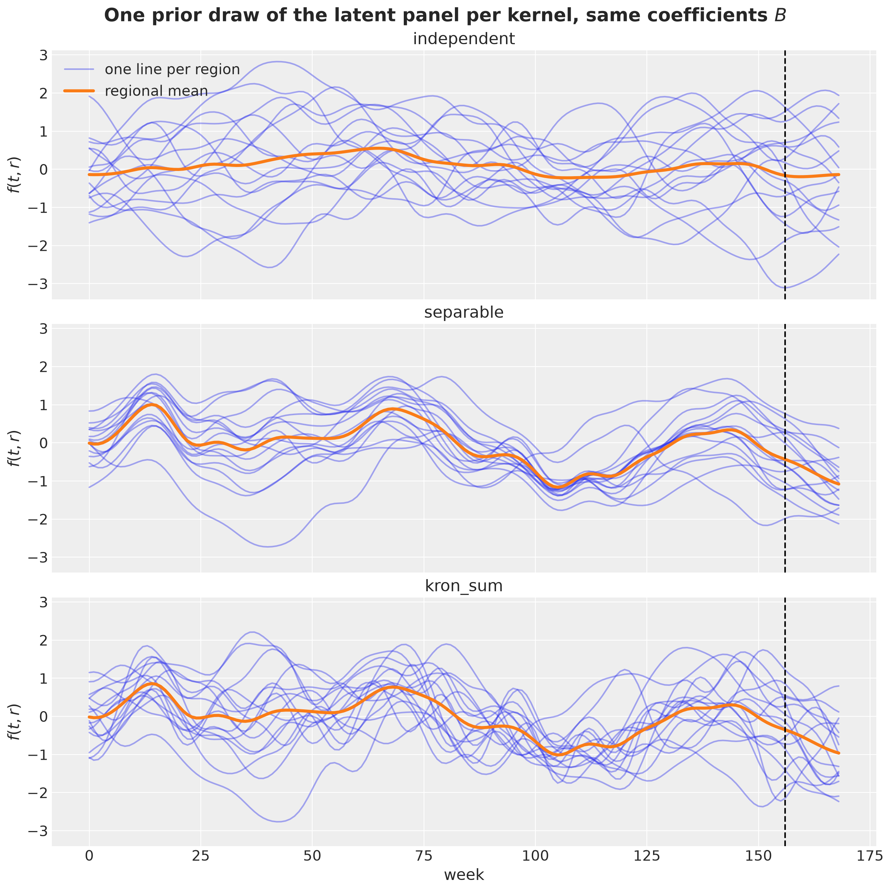
The independent draw has no common structure across regions, and the regional mean is damped.
The separable draw pools the regions, and every regional deviation is as smooth as the trend, because all graph modes share the lengthscale \(\ell\).
In the Kronecker-sum draw the regions share the same trend, but the deviations have a shorter memory: they move faster and keep reverting to the common shape.
To summarize the three checks: the Kronecker sum gives the national mode the longest memory and the rough spatial modes the shortest, its cross-region correlation changes with the time lag, and a draw from it shows regions that share a trend and deviate from it with short-lived, spatially structured excursions. The separable kernel shares the trend but gives every deviation the memory of the trend. The independent kernel shares nothing.
These are properties of the kernels, not forecasting results. Which kernel to use is a modeling decision. It depends on what we assume about the process that generated the data and on what the data support, and in practice we make it with a backtest. In this notebook we control the data generating process, so we can make that decision in a setting where we know the answer.
We simulate a panel from a diffusion on the graph driven by noise. This process has the three characteristics of the introduction (a slow national trend, mean-reverting regional deviations with more variance in the smooth spatial patterns than in the rough ones, and rough patterns that fade faster), which is the structure the Kronecker sum encodes. It is not the Matérn Kronecker-sum process we fit, though: its kernel has a different functional form, and none of the three forecasting models matches it exactly. We then fit the three kernels and look for evidence in the forecasts on which one to use. If the Kronecker sum wins, it wins because it captures the structure of the data, not because the data were generated from it.
Data Generating Process
We now simulate the panel we are going to forecast. The three forecasting models put a Matérn-\(3/2\) kernel on the product space, so we deliberately generate the data from a different functional form with the same qualitative structure: a shared trend, regional deviations that mean-revert and put more variance and longer memory into the smooth spatial patterns than into the rough ones, and rough patterns that die faster than smooth ones. The comparison then tests the modeling assumption and not the fit.
The world we simulate has a national trend that is a smooth Gaussian process, regional deviations that are a diffusion on the graph driven by noise, a yearly seasonality, and heavy-tailed observation noise. The diffusion is the physical process the Kronecker sum is the spectral version of, and it is the part that needs an explanation. We fix the true parameters first, because the illustrations below use them.
true_values = {
"trend_length": 40.0,
"trend_scale": 1.0,
"theta": 0.08,
"diffusion": 0.05,
"dev_noise": 0.35,
"w_seas": jnp.array([0.6, 0.0, 0.0, 0.25]),
"obs_scale": 0.25,
"obs_df": 6.0,
}The Graph Ornstein-Uhlenbeck Process
The regional deviations are the part of the simulation that carries the spatial structure, so we build them in three steps, one per subsection below.
One node. We start with a single region and no graph. Its deviation follows an Ornstein-Uhlenbeck process: every week it is pulled back toward zero and kicked by noise, so it mean-reverts with a memory set by one parameter.
Adding the graph. We connect the regions through the graph Laplacian, so that a deviation in one region also leaks into its neighbors. This is the diffusion.
Why it decouples. We rotate the coupled process into the eigenbasis of the graph Laplacian. There it splits into \(R\) independent processes, one per graph mode, and rough modes decay faster than smooth ones. This step is what lets us sample the process with one multivariate normal per mode, and it is where the connection to the Kronecker sum becomes visible.
One Node
The Ornstein-Uhlenbeck (OU) process in discrete time is
\[ x_{t + 1} = e^{-\theta}\, x_t + \varepsilon_t, \qquad \varepsilon_t \sim \text{Normal}(0, s^2). \]
Here \(x_t\) is the deviation of one region from the national level in week \(t\), \(\theta > 0\) is the rate of mean reversion, and \(s\) is the size of the weekly shock. Every week the process keeps a fraction \(e^{-\theta}\) of last week’s deviation and adds a fresh shock. Nothing holds a deviation away from zero: it persists only because each week carries over part of the previous one.
This gives \(\theta\) a direct interpretation. Without shocks, a deviation of size \(x_t\) shrinks to \(e^{-k \theta} x_t\) after \(k\) weeks, so it is down to \(e^{-1} \approx 0.37\) of its size after \(1 / \theta\) weeks. We call \(1 / \theta\) the memory of the process, measured in weeks. A small \(\theta\) is a long memory and a large \(\theta\) is a short one.
With shocks, \(x_t\) is an AR(1) process with coefficient \(\alpha = e^{-\theta}\). It is Gaussian, because it is a sum of Gaussian shocks, and after a burn-in it is stationary with variance \(s^2 / (1 - \alpha^2)\) and covariance
\[ \text{Cov}(x_t, x_{t + k}) = \frac{s^2}{1 - \alpha^2}\, \alpha^{|k|} = \frac{s^2}{1 - \alpha^2}\, e^{-\theta |k|} . \]
The covariance decays exponentially in the lag \(k\). This is the Matérn-\(1/2\) kernel from the theory section with lengthscale \(1 / \theta\), so the one-node OU process is a Gaussian process in time with the roughest member of the Matérn family as its kernel.
Let’s draw three paths with the same sequence of shocks and three values of \(\theta\), so that the differences between the paths come from \(\theta\) alone.
def ou_path(
theta: float, noise: float, key: Array, duration: int
) -> Float[Array, " duration"]:
"OU path x_{t+1} = exp(-theta) x_t + noise * N(0, 1), started at zero."
kicks = noise * random.normal(key, (duration,))
def step(x, kick):
x_new = jnp.exp(-theta) * x + kick
return x_new, x_new
_, path = jax.lax.scan(step, 0.0, kicks)
return path
rng_key, rng_subkey = random.split(rng_key)
fig, ax = plt.subplots()
for i, theta in enumerate([0.05, 0.2, 0.8]):
ax.plot(
np.asarray(t_grid),
np.asarray(ou_path(theta, true_values["dev_noise"], rng_subkey, DURATION)),
color=f"C{i}",
label=f"$\\theta$ = {theta} (memory {1 / theta:.1f} weeks)",
)
ax.axhline(y=0.0, color="gray", linewidth=0.8)
ax.set(xlabel="week", ylabel="$x_t$")
ax.legend()
fig.suptitle(
"Ornstein-Uhlenbeck paths with the same noise", fontsize=18, fontweight="bold"
);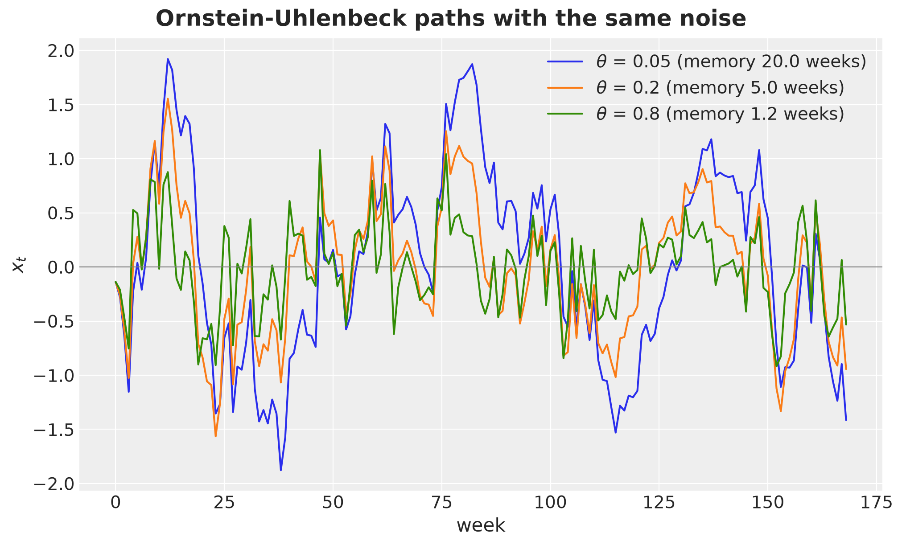
The three paths share every shock and differ only in how much of last week they keep. With \(\theta = 0.05\) (a memory of \(20\) weeks) the path makes long excursions away from zero. With \(\theta = 0.8\) (about one week) it forgets each shock almost at once and stays close to zero. The true value we simulate with, \(\theta = 0.08\), sits near the long-memory end.
Adding the Graph
On a graph the natural coupling between nodes is diffusion: each node moves toward the average of its neighbors. In matrix form the change per week is \(-a L_G x_t\), because the graph Laplacian is the discrete second derivative on the graph, so \(\dot{x} = -a L_G x\) is the heat equation on the graph. Adding the diffusion to the spring gives the graph OU process
\[ x_{t + 1} = e^{-(\theta I + a L_G)}\, x_t + \varepsilon_t, \qquad \varepsilon_t \sim \text{Normal}(0, s^2 I). \]
Every week a regional deviation fades by \(e^{-\theta}\) and leaks into the neighboring regions at rate \(a\). To see the leak, we start with a unit shock in Bavaria (BY), switch off the noise, and follow the state over ten weeks.
def propagate_shock(
x0: Float[Array, " R"], t: float, theta: float, diffusion: float
) -> Float[Array, " R"]:
"State after t weeks of noise-free graph OU dynamics, in spectral form."
decay = jnp.exp(-t * (theta + diffusion * mu))
return U @ (decay * (U.T @ x0))
shock = jnp.zeros(R).at[state_index["BY"]].set(1.0)
weeks_to_show = [0, 2, 5, 10]
fig, axes = plt.subplots(nrows=1, ncols=4, figsize=(18, 5.5), layout="constrained")
for ax, week in zip(axes, weeks_to_show, strict=True):
x_t = propagate_shock(shock, week, true_values["theta"], true_values["diffusion"])
states_gdf.plot(ax=ax, color="lightgray", edgecolor="white", linewidth=0.5)
nodes = nx.draw_networkx_nodes(
graph,
pos=positions,
nodelist=STATES,
node_color=np.asarray(x_t),
cmap="Reds",
vmin=0.0,
vmax=0.5,
node_size=250,
ax=ax,
)
nx.draw_networkx_edges(graph, pos=positions, edge_color="gray", ax=ax)
ax.set_title(f"week {week}, total mass {float(x_t.sum()):.2f}")
ax.set_axis_off()
fig.colorbar(nodes, ax=axes, label="$x_t(r)$ (color saturates at 0.5)", shrink=0.7)
fig.suptitle(
"A shock in Bavaria fades and leaks into its neighbors",
fontsize=18,
fontweight="bold",
);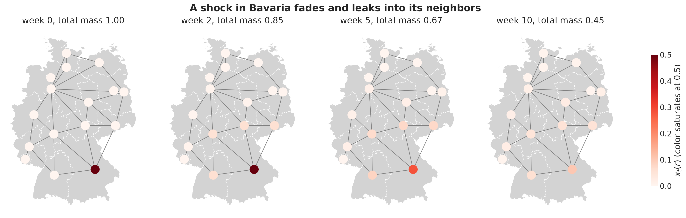
The same propagation as time series for Bavaria, its four neighbors, and a distant state:
weeks = np.arange(0, 31)
paths = {
region: np.array(
[
float(
propagate_shock(
shock, w, true_values["theta"], true_values["diffusion"]
)[state_index[region]]
)
for w in weeks
]
)
for region in ["BY", "BW", "HE", "TH", "SN", "SH"]
}
fig, axes = plt.subplots(nrows=1, ncols=2, figsize=(12, 5), layout="constrained")
axes[0].plot(weeks, paths["BY"], color="C0", marker="o", markersize=3)
axes[0].set(
xlabel="weeks after the shock",
ylabel="$x_t(r)$",
title="Bavaria (the shocked region)",
)
for i, region in enumerate(["BW", "HE", "TH", "SN", "SH"]):
axes[1].plot(
weeks,
paths[region],
color=f"C{i + 1}",
marker="o",
markersize=3,
linestyle=["-", "--", "-.", ":", "-"][i],
label=region,
)
axes[1].set(
xlabel="weeks after the shock",
ylabel="$x_t(r)$",
title="Neighbors of Bavaria and a distant state (SH)",
)
axes[1].legend()
fig.suptitle("Shock propagation by region", fontsize=18, fontweight="bold");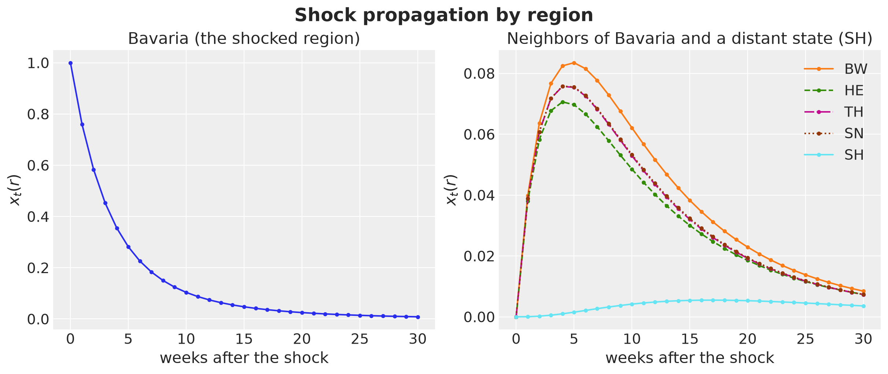
Bavaria’s deviation decays, its neighbors first rise as the shock leaks in and then decay with it, and Schleswig-Holstein, three edges away, only sees a small and late echo. Note the scale of the right panel: the neighbors never get more than about a tenth of the original shock.
Why It Decouples
Since \(L_G = U \operatorname{diag}(\mu) U^\top\) and \(\theta I\) commutes with everything, rotating to the graph-spectral coordinates \(z_t = U^\top x_t\) turns the coupled system into \(R\) independent AR(1) processes, one per graph mode, with coefficient
\[ \alpha_v = e^{-(\theta + a \mu_v)} . \]
Smooth modes (small \(\mu_v\)) decay at rate \(\theta\). Rough modes (large \(\mu_v\)) decay at the faster rate \(\theta + a \mu_v\), and they have a smaller stationary variance \(s^2 / (1 - \alpha_v^2)\). This is the same structure the Kronecker sum encodes, the graph shortens the memory of rough patterns, but with an exponential kernel (\(\nu = 1/2\) instead of \(3/2\)) and a different law for the lengthscale of mode \(v\): \(1 / (\theta + a \mu_v)\), which is \(\ell / (1 + (a / \theta)\, \mu_v)\) with \(\ell = 1 / \theta\), against \(\ell / \sqrt{1 + \rho \mu_v}\) in the Kronecker sum. That is exactly the mismatch we want between the simulation and the model. The stationary law of mode \(v\) is Gaussian with the exponential covariance
\[ \text{Cov}(z_{t, v}, z_{t', v}) = \frac{s^2}{1 - \alpha_v^2}\, \alpha_v^{|t - t'|}, \qquad x_t = U z_t , \]
which is what we sample from (one multivariate normal per mode, then rotate back). We set the constant mode to zero because the national trend already covers it. Here are \(\alpha_v\) and the stationary standard deviation per mode for the true parameters and the real graph.
alpha_modes = np.exp(
-(true_values["theta"] + true_values["diffusion"] * np.asarray(mu[1:]))
)
sd_modes = true_values["dev_noise"] / np.sqrt(1 - alpha_modes**2)
fig, axes = plt.subplots(nrows=1, ncols=2, figsize=(14, 5), layout="constrained")
axes[0].bar(np.arange(1, R), alpha_modes, color="C0")
axes[0].set(
xlabel="graph mode $v$",
ylabel="$\\alpha_v$",
title="AR(1) coefficient per mode",
ylim=(0, 1),
xticks=np.arange(1, R),
)
axes[1].bar(np.arange(1, R), sd_modes, color="C1")
axes[1].set(
xlabel="graph mode $v$",
ylabel="stationary sd",
title="Stationary standard deviation per mode",
ylim=(0, 1),
xticks=np.arange(1, R),
)
fig.suptitle(
"Graph OU process in spectral coordinates", fontsize=18, fontweight="bold"
);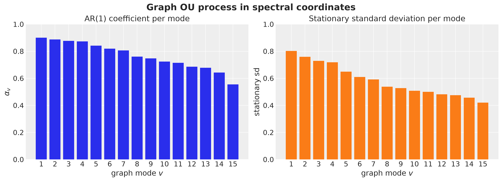
The smoothest mode keeps \(\alpha_1 = 0.90\) and a stationary sd of \(0.80\), the roughest has \(\alpha_{15} = 0.55\) and \(0.42\), so the smooth patterns carry about \(3.6\) times the variance of the rough ones and last much longer. How much spatial correlation does that put into the deviations? The stationary covariance across regions is \(U_{\cdot, 1:} \operatorname{diag}\big(s^2 / (1 - \alpha_v^2)\big) U_{\cdot, 1:}^\top\), and we average its correlations over the adjacent and over the non-adjacent pairs.
cov_dev = U[:, 1:] @ jnp.diag(jnp.asarray(sd_modes) ** 2) @ U[:, 1:].T
sd_dev = jnp.sqrt(jnp.diag(cov_dev))
corr_dev = np.asarray(cov_dev / jnp.outer(sd_dev, sd_dev))
pl.DataFrame(
{
"pairs": ["adjacent", "non-adjacent"],
"mean stationary correlation": [
round(float(corr_dev[adjacent].mean()), 3),
round(float(corr_dev[non_adjacent].mean()), 3),
],
}
)| pairs | mean stationary correlation |
|---|---|
| str | f64 |
| "adjacent" | 0.054 |
| "non-adjacent" | -0.103 |
The spatial correlation of the deviations is weak at these parameter values: adjacent states sit at about \(0.05\) and non-adjacent ones at about \(-0.10\). The negative baseline comes from removing the constant mode, which forces the deviations to sum to zero across regions. The difference of about \(0.16\) between the two groups is the spatial structure of the deviations, and most of the co-movement that we will see in the panel comes from the shared trend. Keep this in mind when reading the forecasts: what the Kronecker sum has to get right is the memory of the national mode against the short memory of the regional deviations, not a strong spatial correlation.
The Four Components
The panel is the sum of four components.
National Trend
One draw of a Matérn-\(5/2\) Gaussian process in time with lengthscale \(\ell_g\) and scale \(\sigma_g\) (we sample it as an HSGP with a large basis):
\[ g \sim \text{GP}\big(0, k_{5/2}\big), \qquad k_{5/2}(\tau) = \sigma_g^2 \left(1 + \frac{\sqrt{5} |\tau|}{\ell_g} + \frac{5 \tau^2}{3 \ell_g^2}\right) \exp\left(-\frac{\sqrt{5} |\tau|}{\ell_g}\right). \]
Regional Deviations
The stationary graph OU process of the previous subsection, \(x_t = U z_t\) with independent exponential-covariance modes \(z_{\cdot, v}\).
Seasonality
A yearly Fourier pair with fixed weights, \(s(t) = w^\top \text{fourier}(t)\), with the same features as the model. The weights give \(0.6 \sin(2 \pi t / 52) + 0.25 \cos(4 \pi t / 52)\).
Observations
Regional intercepts \(a_r \sim \text{Normal}(0, 0.5)\) and Student-t noise:
\[ y_{t, r} \sim \text{StudentT}\big(\nu_y,\; a_r + g_t + s(t) + x_{t, r},\; \sigma_y\big). \]
We write the simulation as a NumPyro model with the hyperparameters as sample sites, fix them with the do handler, and take one draw. As in the NumPyro HSGP example, each component is its own function with its own sample sites, and the model only composes them.
The national trend is a Matérn-\(5/2\) HSGP with a large basis, sampled with hsgp_matern from numpyro.contrib.hsgp (its coefficient site is called beta). The amplitude argument of hsgp_matern is the variance \(\sigma_g^2\). Being an HSGP, the simulated trend is not exactly a stationary Matérn-\(5/2\) draw: with \(m = 100\) the truncation is negligible, but the box pulls the variance down to about \(0.88\) at the two ends of the panel against \(1.0\) in the middle. The correlations are accurate to about two digits, with the largest error, \(0.01\), at lags of about \(40\) weeks from the ends of the panel, and below \(0.004\) across the split for the \(13\) forecast lags. So the shape of the trend is right, and we mention it because the forecast comparison below turns on what the trend does near the split.
M_TREND = 100
def national_trend(t_c: Float[Array, " T"], ell_box: float) -> Float[Array, " T"]:
"One Matérn-5/2 HSGP draw shared by all regions."
trend_length = numpyro.sample("trend_length", dist.LogNormal(jnp.log(40.0), 0.5))
trend_scale = numpyro.sample("trend_scale", dist.HalfNormal(1.0))
trend = hsgp_matern(
x=t_c, nu=2.5, alpha=trend_scale**2, length=trend_length, ell=ell_box, m=M_TREND
)
return numpyro.deterministic("trend", trend)The regional deviations follow the stationary law of the graph OU process: graph_ou_covariance builds the exponential covariance of every non-constant graph mode from \(\alpha_v\), and regional_deviations samples one multivariate normal per mode and rotates back to the regions with \(U\).
def graph_ou_covariance(
dt: Float[Array, "T T"],
mu: Float[Array, " V"],
theta: Array,
diffusion: Array,
noise: Array,
) -> Float[Array, "V T T"]:
"Stationary covariance of the graph OU process, one (T, T) matrix per graph mode."
alpha = jnp.exp(-(theta + diffusion * mu)) # AR(1) coefficient per mode
variance = noise**2 / (1 - alpha**2)
return variance[:, None, None] * alpha[:, None, None] ** dt[None]
def regional_deviations(
t: Float[Array, " T"], mu: Float[Array, " R"], U: Float[Array, "R R"]
) -> Float[Array, "T R"]:
"Graph OU deviations: independent AR(1) per graph mode, rotated to the regions."
theta = numpyro.sample("theta", dist.LogNormal(jnp.log(0.1), 0.5))
diffusion = numpyro.sample("diffusion", dist.LogNormal(jnp.log(0.05), 0.5))
dev_noise = numpyro.sample("dev_noise", dist.HalfNormal(0.5))
dt = jnp.abs(t[:, None] - t[None, :])
k_dev = graph_ou_covariance(dt, mu[1:], theta, diffusion, dev_noise)
jitter = 1e-4 * jnp.eye(t.shape[0])
z = numpyro.sample(
"z", dist.MultivariateNormal(jnp.zeros(t.shape[0]), k_dev + jitter)
)
return numpyro.deterministic("dev", z.T @ U[:, 1:].T) # (T, R)Seasonality is a yearly Fourier pair with sampled weights, and the observations are Student-t around the latent panel. We build the Fourier design matrix once, outside the model, and pass it in. This is the same matrix the forecasting models receive as covariates, so the simulation and the models share the seasonal features by construction.
seasonal_features = fourier_features(DURATION, period=PERIOD, num_terms=2) # (D, 4)
def seasonality(features: Float[Array, "T K"]) -> Float[Array, " T"]:
"Yearly seasonality from the Fourier features with sampled weights."
w_seas = numpyro.sample(
"w_seas", dist.Normal(0.0, 0.5).expand([features.shape[-1]]).to_event(1)
)
return features @ w_seas
def observe(latent: Float[Array, "T R"]) -> None:
"Student-t observations around the latent panel."
obs_scale = numpyro.sample("obs_scale", dist.HalfNormal(0.5))
obs_df = numpyro.sample("obs_df", dist.Gamma(4.0, 0.5))
numpyro.sample("y", dist.StudentT(obs_df, latent, obs_scale).to_event(2))The panel model composes the four components. Everything before the draw is a single function call per component. We render the model graph to check the dependencies between the sites.
def panel_dgp(
mu: Float[Array, " R"],
U: Float[Array, "R R"],
duration: int,
features: Float[Array, "T K"],
) -> None:
"Weekly panel: trend + graph OU deviations + seasonality + Student-t noise."
t_c, ell_box = time_box(duration)
trend = national_trend(t_c, ell_box)
dev = regional_deviations(t_c, mu, U)
seasonal = seasonality(features)
intercept = numpyro.sample(
"intercept", dist.Normal(0.0, 0.5).expand([mu.shape[0]]).to_event(1)
)
latent = numpyro.deterministic(
"latent", intercept + trend[:, None] + seasonal[:, None] + dev
)
observe(latent)
numpyro.render_model(panel_dgp, model_args=(mu, U, DURATION, seasonal_features))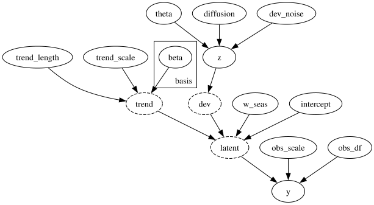
We take one draw of the whole generative model with the true values fixed.
rng_key, rng_subkey = random.split(rng_key)
simulation = Predictive(do(panel_dgp, data=true_values), num_samples=1)(
rng_subkey, mu, U, DURATION, seasonal_features
)
y = simulation["y"][0] # (DURATION, R)
trend_true = simulation["trend"][0]
dev_true = simulation["dev"][0]
print(f"panel shape (weeks, regions) = {y.shape}")panel shape (weeks, regions) = (169, 16)We look at the components of the simulation.
fig, axes = plt.subplots(
nrows=3, ncols=1, figsize=(12, 12), sharex=True, layout="constrained"
)
axes[0].plot(np.asarray(trend_true), color="C0")
axes[0].set(title="National trend (Matérn-5/2 draw)", ylabel="trend")
for r in range(R):
axes[1].plot(np.asarray(dev_true[:, r]), color="C0", alpha=0.4)
axes[1].set(
title="Regional deviations (graph OU), one line per region", ylabel="deviation"
)
for r in range(R):
axes[2].plot(np.asarray(y[:, r]), color="C0", alpha=0.4)
axes[2].axvline(x=T_OBS, color="black", linestyle="--", label="train-test split")
axes[2].set(title="Observed panel, one line per region", ylabel="y", xlabel="week")
axes[2].legend(loc="lower left")
fig.suptitle("Simulated panel", fontsize=18, fontweight="bold");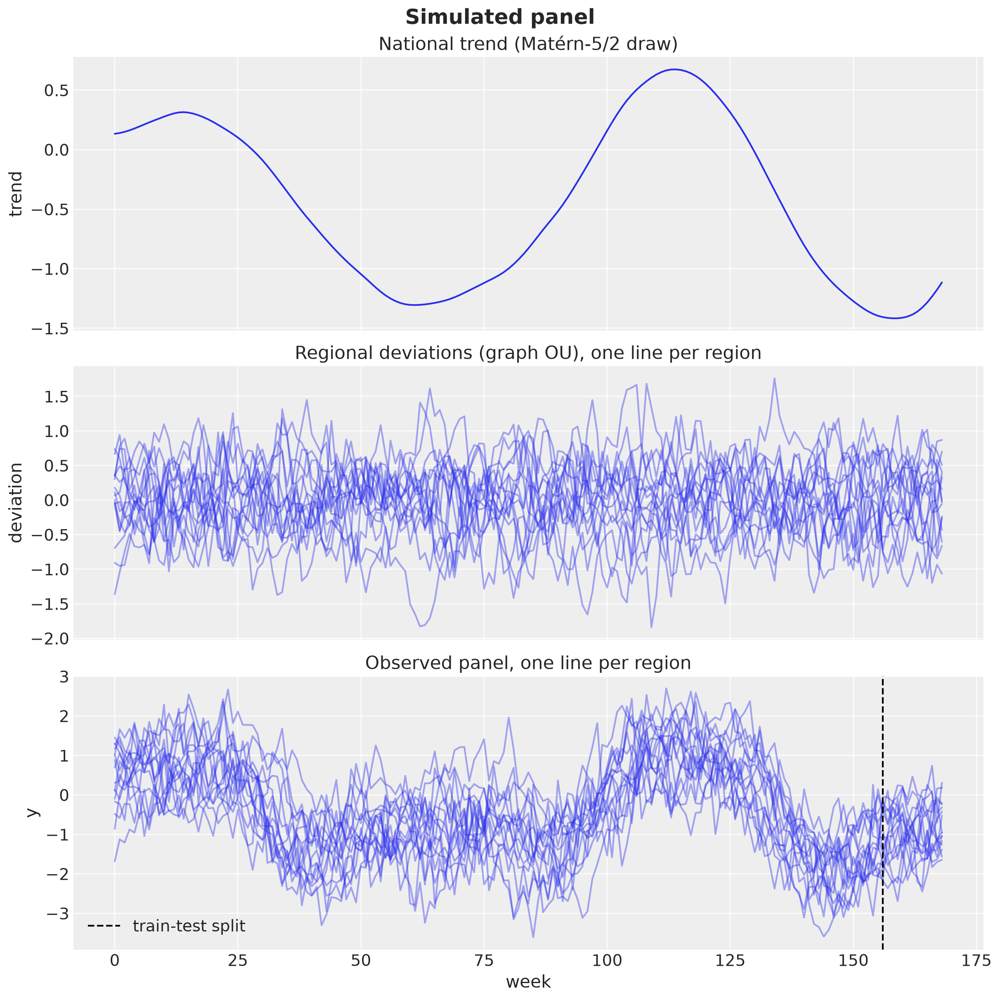
Train-Test Split
We keep the first \(T = 156\) weeks for training and the last \(H = 13\) weeks as the test set. The covariates are the Fourier features of the yearly seasonality over the full duration, the same matrix the simulation used. Following the numpyro-forecast convention, time is at axis \(-2\) and the regions at axis \(-1\).
covariates = seasonal_features # the Fourier features the simulation used
covariates_train = covariates[:T_OBS]
y_train = y[:T_OBS]
y_test = y[T_OBS:]
print(f"train {y_train.shape}, test {y_test.shape}, covariates {covariates.shape}")train (156, 16), test (13, 16), covariates (169, 4)The Forecasting Models
We now write the three forecasting models. All three are the panel model of the problem section,
\[ y_{t, r} = a_r + f(t, r) + s(t) + \varepsilon_{t, r}, \qquad \varepsilon_{t, r} \sim \text{StudentT}(\nu_{\varepsilon}, 0, \sigma), \]
with the latent panel \(f\) built by the Gaussian process block of the building blocks section. The three models differ only in the kernel of \(f\): independent, separable or kron_sum. The regional intercepts \(a_r\), the seasonal term \(s(t) = w^\top \text{fourier}(t)\) on the Fourier covariates of the train-test split, and the Student-t noise are the same in all three.
Since the models share everything except the kernel, we write one factory, make_model. It takes the graph eigenpairs \((\mu, U)\), the kernel mode and the full duration, and it returns a NumPyro model.
How the Model Forecasts
The returned model follows the convention of numpyro-forecast, and we spell it out because the same function serves both fitting and forecasting.
The model has the signature
model(covariates, data). Time is at axis \(-2\) of both arguments. The covariates can be longer than the data: their length is the span the model has to predict, and the length of the data is the span it has observations for.Horizon.from_datacompares the two lengths. It returns the duration (the length of the covariates), the number of observed weeks (the length of the data) and the number of weeks to forecast (the difference).The model builds the prediction \(a_r + f(t, r) + s(t)\) for every week of the duration.
predicttakes the prediction and the noise distribution. It registers the observed prefix as the likelihood, and it samples the remaining suffix as the forecast.
During fitting we call the model with the training covariates and the training data, both \(156\) weeks long, so there is nothing to forecast and NUTS sees the likelihood on every row. During forecasting we call the same model with the full covariates (\(169\) weeks) and the same training data (\(156\) weeks), with the hyperparameters and the coefficients drawn from the posterior. The first \(156\) rows are then conditioned on the data and the last \(13\) rows are sampled. The forecast is the fitted linear model \(\Phi\, (\sqrt{W} \circ B)\, U^\top\) evaluated on the \(13\) rows the likelihood never saw, plus the intercepts, the seasonality and a draw of the noise.
Two Implementation Details
Two details of the implementation matter for the forecasts, and both come from the earlier sections.
The time box is fixed from the full duration. Recall that the HSGP basis lives on a box \([-L, L]\) with \(L = c\,(D - 1) / 2\), and that every basis function \(\phi_j\) depends on \(L\). The coefficients \(\beta_{jv}\) only have a meaning relative to the basis functions they multiply. If we built the box from the length of the current call, the training call (\(D = 156\)) and the forecast call (\(D = 169\)) would get different values of \(L\), so different basis functions, and the posterior coefficients would be multiplied by basis functions they were not fitted against. The factory therefore builds the box and the basis \(\Phi\), of shape \((169, 48)\), once from the full duration, and each call slices the prefix it needs: the first \(156\) rows for training, all \(169\) rows for forecasting, with the same coefficients. We check both halves of this claim at the end of the cell: the basis evaluated on the training weeks alone, inside the full box, is the prefix of the full basis, and a box built from the training length alone is not.
The node standardization is folded into \(U\). The building blocks section showed that the raw kernel gives the hubs a smaller prior variance than the leaves, and that we remove this by rescaling region \(r\) by \(s_r = \sigma_f / \sqrt{v_r}\). In the model we compute \(s_r\) from the weights at the current values of the hyperparameters and pass it to
kron_hsgpasscale, which multiplies the rows of \(U\) by \(s_r\) before the second matrix multiplication (this is the \(D U\) of the \(D K D\) kernel). The block stays two matrix multiplications. The independent kernel has no rotation and gives every region the variance \(\sigma_f^2\) already, so it gets noscale.
Priors
The kernel comparison of the building blocks section held \((\sigma_f, \ell, \rho)\) at the reference values. The forecasting models learn them, so we now need priors. We center them on the reference values and make them wide, so that the data decide the pooling strength and the memory of the trend:
\[\begin{align*} \sigma_f & \sim \text{HalfNormal}(1), \\ \ell & \sim \text{LogNormal}(\log 20, 0.7), \\ \rho &\sim \text{LogNormal}(0, 1.5). \end{align*}\]
Let’s plot the three densities.
fig, axes = plt.subplots(nrows=1, ncols=3, figsize=(16, 5), layout="constrained")
pz.HalfNormal(sigma=1.0).plot_pdf(ax=axes[0], legend=None)
pz.LogNormal(mu=np.log(20.0), sigma=0.7).plot_pdf(ax=axes[1], legend=None)
pz.LogNormal(mu=0.0, sigma=1.5).plot_pdf(ax=axes[2], legend=None)
axes[0].set(title="$\\sigma_f \\sim$ HalfNormal(1)")
axes[1].set(title="$\\ell \\sim$ LogNormal(log 20, 0.7)", xlim=(0, 120))
axes[2].set(title="$\\rho \\sim$ LogNormal(0, 1.5)", xlim=(0, 30))
fig.suptitle("Priors on the GP hyperparameters", fontsize=18, fontweight="bold");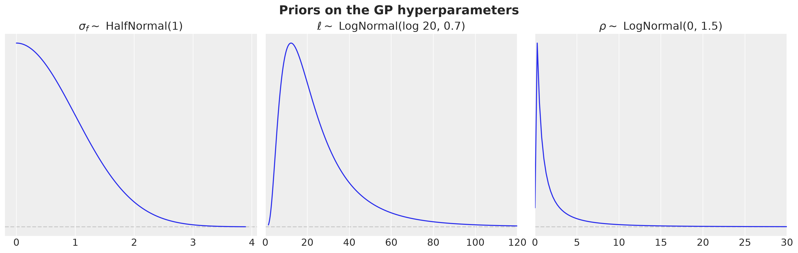
The prior on \(\ell\) puts its central \(95\%\) between \(5\) and \(79\) weeks, so a memory anywhere from a month to a year and a half is on the table. The prior on \(\rho\) spans \(0.05\) to \(19\), more than two orders of magnitude, so it does not decide between almost no pooling and almost complete pooling. The prior on \(\sigma_f\) keeps the latent scale below \(2\) with \(95\%\) probability. The independent model has no \(\rho\).
The remaining priors are the same in the three models. With \(a_r\) the intercept of region \(r\), \(w\) the vector of the four seasonal weights, \(\sigma\) the observation scale and \(\nu_{\varepsilon}\) the degrees of freedom of the Student-t noise:
\[\begin{align*} a_r & \sim \text{Normal}(0, 1), \\ w_k & \sim \text{Normal}(0, 0.5), \\ \sigma & \sim \text{HalfNormal}(0.5), \\ \nu_{\varepsilon} & \sim \text{Gamma}(4, 0.5). \end{align*}\]
The Model Factory
Here is the factory. The hyperparameters are sample sites with the priors above, the latent panel is the GP block from the building blocks, the prediction adds the intercepts and the seasonality, and predict registers the likelihood on the observed prefix and the forecast on the suffix. The last lines check the two claims about the basis.
def make_model(
mu: Float[Array, " R"],
U: Float[Array, "R R"],
*,
mode: Mode,
duration: int,
m: int = M_BASIS,
c: float = C_BOX,
nu: float = NU,
):
"Forecasting model factory. The time box covers `duration` steps and is fixed."
R = mu.shape[0]
t_c, ell_box = time_box(duration, c=c)
phi_full, _ = time_basis(t_c, ell_box, m)
def model(
covariates: Float[Array, "duration K"], data: Float[Array, "T R"] | None = None
) -> None:
h = Horizon.from_data(covariates, data)
phi = phi_full[: h.duration] # prefix of the fixed basis
# gp hyperparameters
sigma_f = numpyro.sample("sigma_f", dist.HalfNormal(1.0))
length = numpyro.sample("length", dist.LogNormal(jnp.log(20.0), 0.7))
rho = (
numpyro.sample("rho", dist.LogNormal(0.0, 1.5))
if mode != "independent"
else jnp.zeros(())
)
# latent panel
w = spectral_weights(
mu,
mode=mode,
nu=nu,
length=length,
rho=rho,
sigma_f=sigma_f,
ell_box=ell_box,
m=m,
)
scale = (
None
if mode == "independent"
else sigma_f / jnp.sqrt(node_variances(w, U, ell_box))
)
f = kron_hsgp("gp", phi, U, w, mode=mode, scale=scale) # (duration, R)
# intercepts and seasonality
intercept = numpyro.sample(
"intercept", dist.Normal(0.0, 1.0).expand([R]).to_event(1)
)
w_seas = numpyro.sample(
"w_seas", dist.Normal(0.0, 0.5).expand([covariates.shape[-1]]).to_event(1)
)
prediction = numpyro.deterministic(
"prediction", intercept + f + (covariates @ w_seas)[:, None]
)
# likelihood
sigma = numpyro.sample("sigma", dist.HalfNormal(0.5))
df = numpyro.sample("df", dist.Gamma(4.0, 0.5))
predict(h, dist.StudentT(df, 0.0, sigma), prediction)
return model
# inside the full box, the basis on the training weeks is the prefix of the full basis
t_c_full, ell_box_full = time_box(DURATION)
phi_train, _ = time_basis(t_c_full[:T_OBS], ell_box_full, M_BASIS)
assert jnp.allclose(phi_train, phi_full[:T_OBS])
# a box built from the training length alone gives a different basis
phi_train_box, _ = time_basis(*time_box(T_OBS), M_BASIS)
assert not jnp.allclose(phi_train_box, phi_full[:T_OBS])models = {mode: make_model(mu, U, mode=mode, duration=DURATION) for mode in MODES}
# All the models have the same structure, so we can use the same function to render them
numpyro.render_model(models["kron_sum"], model_args=(covariates_train, y_train))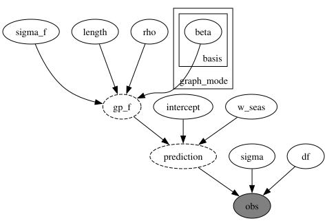
Prior Predictive Check
We draw from the prior predictive of the Kronecker-sum model over the training window to check that the implied scale of the observations is reasonable.
rng_key, rng_subkey = random.split(rng_key)
prior_predictive = Predictive(models["kron_sum"], num_samples=500)(
rng_subkey, covariates_train
)
prior_obs = np.asarray(prior_predictive["obs"]) # (draws, T_OBS, R)
fig, ax = plt.subplots()
for i in range(20):
ax.plot(prior_obs[i, :, state_index["BY"]], color="C0", alpha=0.3)
ax.plot(np.asarray(y_train[:, state_index["BY"]]), color="black", label="observed (BY)")
ax.legend(loc="upper left")
ax.set(xlabel="week", ylabel="y")
fig.suptitle("Prior predictive draws for Bavaria", fontsize=18, fontweight="bold");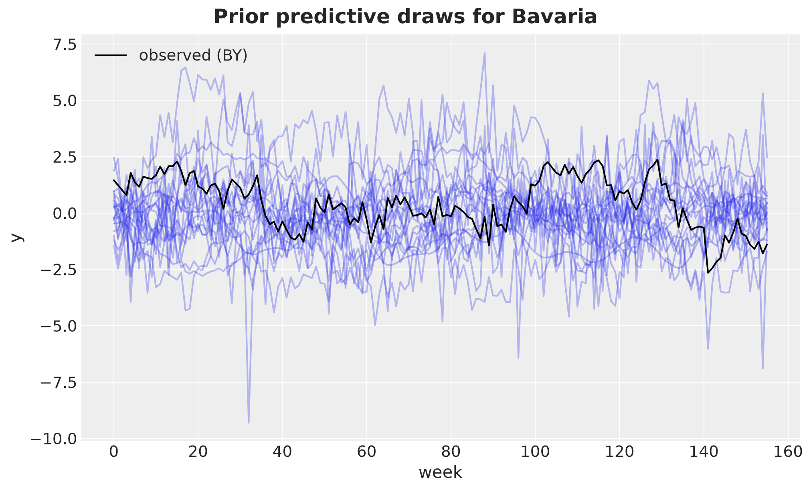
Model Fit and Diagnostics
We fit the three models with NUTS, using \(4\) chains with \(1000\) warmup and \(1000\) posterior draws each. We raise the target acceptance probability to \(0.92\), above the default of \(0.8\), which makes the sampler take smaller steps. Everything in the model is Gaussian conditional on a handful of hyperparameters, so the posterior is well behaved, but the coefficients of the rough modes sit in narrow valleys and the smaller steps remove the occasional divergent transition we saw at the default.
%%time
def fit_nuts(
rng_key,
model,
covariates,
data,
*,
num_warmup: int = 1_000,
num_samples: int = 1_000,
num_chains: int = 4,
) -> MCMC:
mcmc = MCMC(
NUTS(model, init_strategy=init_to_median, target_accept_prob=0.92),
num_warmup=num_warmup,
num_samples=num_samples,
num_chains=num_chains,
progress_bar=False,
)
mcmc.run(rng_key, covariates, data)
return mcmc
def to_idata(mcmc: MCMC) -> az.InferenceData:
"Convert the MCMC run to arviz, with numpy-backed arrays."
return az.from_numpyro(mcmc).map_over_datasets(lambda ds: ds.as_numpy())
mcmcs: dict[str, MCMC] = {}
idatas: dict[str, az.InferenceData] = {}
for mode in MODES:
rng_key, rng_subkey = random.split(rng_key)
mcmcs[mode] = fit_nuts(rng_subkey, models[mode], covariates_train, y_train)
idatas[mode] = to_idata(mcmcs[mode])CPU times: user 4min 6s, sys: 1.69 s, total: 4min 8s
Wall time: 1min 6sWe check the diagnostics of the three runs.
for mode in MODES:
print(f"--- {mode}")
az.diagnose(idatas[mode])--- independent
Divergences
No divergent transitions found.
ESS
Effective sample size satisfactory for all parameters.
R-hat
R-hat values satisfactory for all parameters.
Processing complete, no problems detected.
--- separable
Divergences
No divergent transitions found.
ESS
Effective sample size satisfactory for all parameters.
R-hat
R-hat values satisfactory for all parameters.
Processing complete, no problems detected.
--- kron_sum
Divergences
No divergent transitions found.
ESS
Effective sample size satisfactory for all parameters.
R-hat
The following parameters have R-hat values greater than 1.01:
beta, gp_f, intercept
Such high values indicate incomplete mixing and biased estimation.
You should consider regularizing your model with additional prior information or a more effective parameterization.The independent and separable models are clean. The Kronecker-sum model has no divergent transitions either, but it reports an \(\hat{R}\) above \(1.01\) for beta, gp_f and intercept. Those are the coefficients and the intercepts: the coefficients of the rough modes carry almost no weight, and the intercept trades off against the level of the GP, so both are weakly identified while the hyperparameters and the predictions are not. The effective sample sizes are satisfactory everywhere. We compare the posteriors of the hyperparameters across the three models with a forest plot. The parameters live on very different scales, from \(\sigma \approx 0.4\) to \(\ell \approx 20\) weeks, so we put the axis on a logarithmic scale. The pooling strength \(\rho\) only exists in the two models that use the graph.
hyper_names = ["sigma_f", "length", "rho", "sigma", "df"]
pc = az.plot_forest(
idatas, var_names=hyper_names, combined=True, figure_kwargs={"figsize": (10, 6)}
)
pc.add_legend("model", title_fontsize=16)
pc.viz["plot"].sel(column="forest").item().set_xscale("log")
pc.viz["figure"].item().suptitle(
"Posterior of the hyperparameters", fontsize=18, fontweight="bold", y=1.03
);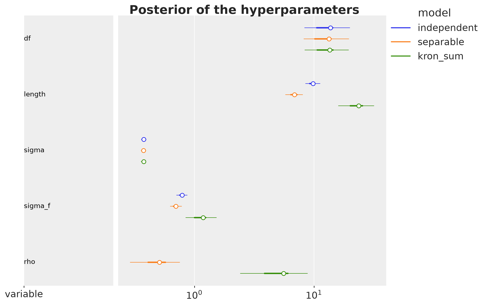
Note how the three models disagree on the temporal lengthscale: the independent and separable models must use a single \(\ell\) for everything, and they choose a short one because the regional deviations are rough. The Kronecker-sum model assigns the short memory to the rough spatial modes through \(\rho\) and keeps a longer \(\ell\) for the national trend. The summary of the Kronecker-sum model gives the numbers.
az.summary(idatas["kron_sum"], var_names=hyper_names, ci_prob=HDI_PROB, ci_kind="hdi")| mean | sd | hdi94_lb | hdi94_ub | ess_bulk | ess_tail | r_hat | mcse_mean | mcse_sd | |
|---|---|---|---|---|---|---|---|---|---|
| sigma_f | 1.18 | 0.195 | 0.85 | 1.5 | 1209 | 1621 | 1.00 | 0.0055 | 0.0045 |
| length | 23.6 | 4.3 | 16 | 32 | 1176 | 1618 | 1.00 | 0.12 | 0.083 |
| rho | 5.6 | 1.9 | 2.4 | 8.8 | 1223 | 1701 | 1.00 | 0.053 | 0.05 |
| sigma | 0.3765 | 0.009 | 0.36 | 0.39 | 3357 | 3308 | 1.00 | 0.00015 | 0.00012 |
| df | 13.54 | 3.09 | 8.4 | 19 | 5221 | 3570 | 1.00 | 0.044 | 0.05 |
The summary does not show how the hyperparameters move together. The normalization section anticipated that \(\sigma_f\) and \(\rho\) both act on the variance of the national mode, so they should be correlated in the posterior. Let’s compute the posterior correlation of the logarithms of the hyperparameters of the Kronecker-sum model.
log_hyper = {
name: jnp.log(mcmcs["kron_sum"].get_samples()[name])
for name in ["sigma_f", "length", "rho", "sigma"]
}
corr_hyper = jnp.corrcoef(jnp.stack(list(log_hyper.values())))
pl.DataFrame(
{"parameter": list(log_hyper)}
| {name: np.asarray(corr_hyper[:, i]).round(2) for i, name in enumerate(log_hyper)}
)| parameter | sigma_f | length | rho | sigma |
|---|---|---|---|---|
| str | f32 | f32 | f32 | f32 |
| "sigma_f" | 1.0 | 0.91 | 0.95 | -0.01 |
| "length" | 0.91 | 1.0 | 0.9 | 0.03 |
| "rho" | 0.95 | 0.9 | 1.0 | 0.01 |
| "sigma" | -0.01 | 0.03 | 0.01 | 1.0 |
The three GP hyperparameters are strongly correlated in the posterior: about \(0.95\) between \(\log \sigma_f\) and \(\log \rho\), and about \(0.9\) for each of them with \(\log \ell\). The sign is the one the normalization section predicted. The data pin the regional deviations, their variance and their lengthscales \(\ell_v = \ell / \sqrt{1 + \rho \mu_v}\), much better than the national mode, which is one series with a long lengthscale. A larger \(\rho\) moves variance from the regional modes to the national one and shortens every \(\ell_v\), so \(\sigma_f\) and \(\ell\) must grow with it to keep the regional deviations where the data put them, and the three parameters move together. The noise scale \(\sigma\) is uncorrelated with all three. This is the weak separability we anticipated, and it is why we read the three parameters together rather than one at a time.
The trace plots confirm that the chains for these five parameters mix well.
pc = az.plot_trace_dist(
idatas["kron_sum"], var_names=hyper_names, figure_kwargs={"figsize": (12, 10)}
)
pc.viz["figure"].item().suptitle(
"Trace (kron_sum)", fontsize=18, fontweight="bold", y=1.03
);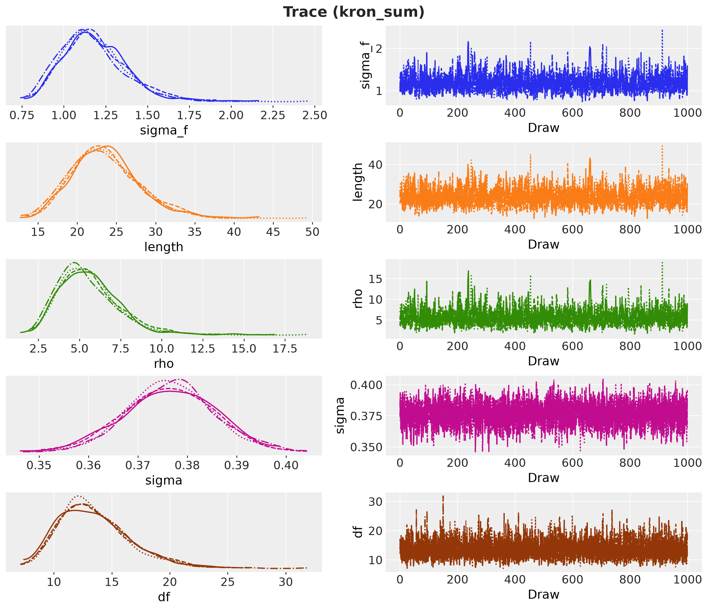
Basis Size Check
We now check the basis size against the posterior of the Kronecker-sum model. Recall the rule from the theory section: a sine basis with \(m\) functions on a box of half-width \(L\) resolves wiggles down to a lengthscale of about \(3.42\, L / m\) weeks, and any mode with a shorter lengthscale is truncated. Under the Kronecker sum the lengthscale of mode \(v\) is \(\ell_v = \ell / \sqrt{1 + \rho \mu_v}\), so the rule has to be checked against the shortest one. In the building blocks section we did this at the reference values, where \(\ell_{\min}\) was \(4.3\) weeks and the rule asked for about \(100\) basis functions. Now we have a posterior, so we redo the check with it.
We compute \(\ell_v\) for every graph mode and every posterior draw and plot the posterior median with its \(94\%\) HDI. The two horizontal lines are the rule turned around: for a given basis size \(m\), the shortest lengthscale the basis resolves is \(3.42\, L / m\). The upper line is that value for \(m = 48\), the basis we used. The lower line is the same for \(m = 96\), the basis we refit with below. A mode whose lengthscale sits below a line is under-resolved by that basis: the basis cannot represent its fastest wiggles, so the mode is smoother in the fit than the posterior says it should be.
We expect two things from this plot. First, whether the posterior confirms the mechanism of the Kronecker sum, a long lengthscale for the national mode and much shorter ones for the rough modes. Second, how many modes fall below each line, which tells us how much of the posterior we are truncating with \(m = 48\), and how much a refit with \(m = 96\) recovers.
M_LARGE = 96 # basis size of the refit below
samples_kron = mcmcs["kron_sum"].get_samples(group_by_chain=True)
ell_post = xr.DataArray(
np.asarray(
effective_lengthscales(
mu[None, None, :],
samples_kron["length"][..., None],
samples_kron["rho"][..., None],
)
),
dims=("chain", "draw", "graph_mode"),
)
ell_median = ell_post.median(dim=("chain", "draw")).values
ell_hdi = az.hdi(ell_post, prob=HDI_PROB, dim=("chain", "draw"))
ell_lower = ell_hdi.sel(ci_bound="lower").values
ell_upper = ell_hdi.sel(ci_bound="upper").values
# inverting the rule: the shortest lengthscale a basis of size m resolves
ell_resolved = {m: M_RULE_MATERN32 * ell_box / m for m in (M_BASIS, M_LARGE)}
fig, ax = plt.subplots()
ax.errorbar(
np.arange(R),
ell_median,
yerr=[ell_median - ell_lower, ell_upper - ell_median],
fmt="o",
color="C0",
capsize=3,
label=f"posterior median and {HDI_PROB:.0%} HDI",
)
for i, (m, ell_m) in enumerate(ell_resolved.items()):
ax.axhline(
y=ell_m,
color=f"C{i + 1}",
linestyle="--",
label=f"shortest $\\ell_v$ resolved by m = {m} ({ell_m:.1f} weeks)",
)
ax.set(xlabel="graph mode $v$", ylabel="$\\ell_v$ (weeks)", xticks=np.arange(R))
ax.legend()
fig.suptitle(
"Posterior effective lengthscale per graph mode", fontsize=18, fontweight="bold"
);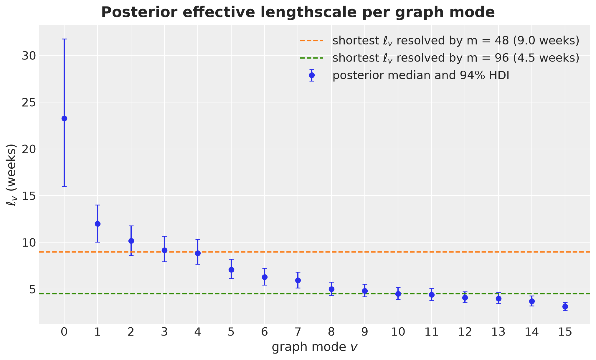
Both expectations are met. The national mode keeps a lengthscale of about \(23\) weeks, with a wide HDI from \(16\) to \(32\) weeks, and the lengthscales fall with the roughness of the mode down to about \(3\) weeks for mode \(15\): the mechanism is in the posterior, not only in the prior. On the basis size, only the first four modes sit above the \(9.0\)-week line, mode \(4\) sits on it, and \(m = 48\) under-resolves the remaining eleven. The roughest mode would need about \(140\) basis functions under the rule, far more than we used. A basis of \(m = 96\) resolves lengthscales down to \(4.5\) weeks and leaves only the roughest modes below the line: mode \(10\) sits on it and modes \(11\) to \(15\) fall below.
The takeaway is that \(m = 48\) smooths the rough spatial modes beyond what the data ask for. Smoothing the rough modes is what a larger \(\rho\) does too, so we expect the truncation to show up as a \(\rho\) that is biased upward. We test this by refitting the Kronecker-sum model with \(m = 96\) and comparing the two posteriors. If \(\rho\) moves down with the larger basis, the truncation was acting as extra pooling. We then carry both fits through the forecast evaluation and the backtest.
%%time
models["kron_sum_m96"] = make_model(
mu, U, mode="kron_sum", duration=DURATION, m=M_LARGE
)
rng_key, rng_subkey = random.split(rng_key)
mcmcs["kron_sum_m96"] = fit_nuts(
rng_subkey, models["kron_sum_m96"], covariates_train, y_train
)
idatas["kron_sum_m96"] = to_idata(mcmcs["kron_sum_m96"])
pc = az.plot_forest(
{"m = 48": idatas["kron_sum"], "m = 96": idatas["kron_sum_m96"]},
var_names=["length", "rho"],
combined=True,
figure_kwargs={"figsize": (10, 4)},
)
pc.add_legend("model", title="basis size", title_fontsize=16)
pc.viz["figure"].item().suptitle(
"Kronecker-sum posterior for two basis sizes",
fontsize=18,
fontweight="bold",
y=1.05,
);CPU times: user 2min 40s, sys: 2.7 s, total: 2min 43s
Wall time: 42.8 s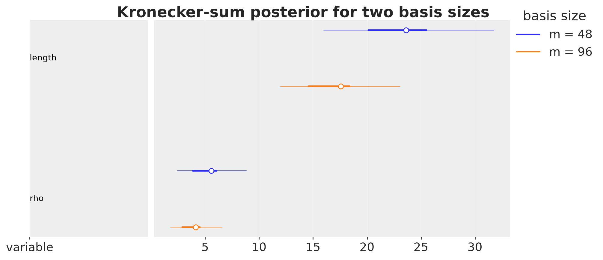
With the larger basis the posterior of \(\rho\) moves down and \(\ell\) gets shorter, as expected: part of the pooling in the \(m = 48\) fit came from the truncation, which could not represent the fastest regional deviations and pushed them into the shared trend and into the noise. The two posteriors still overlap. We keep both fits, kron_sum and kron_sum_m96, and score them below.
Forecasts
The forecast function of numpyro-forecast runs the model with the full covariates and the training data: the in-sample sites come from the posterior and the forecast suffix is sampled at obs_future. We pass only the latent sites of the posterior (not the deterministic sites, whose in-sample shape would not match the full horizon).
LATENT_SITES = [
"sigma_f",
"length",
"rho",
"beta",
"intercept",
"w_seas",
"sigma",
"df",
]
forecasts: dict[str, Array] = {}
for name, mcmc in mcmcs.items():
posterior = {k: v for k, v in mcmc.get_samples().items() if k in LATENT_SITES}
rng_key, rng_subkey = random.split(rng_key)
forecasts[name] = forecast(
rng_subkey, models[name], posterior, y_train, covariates
) # (draws, H, R)Each entry of forecasts has shape (draws, \(13\) weeks, \(16\) regions).
The forecast uncertainty has three sources: the posterior of the coefficients \(\beta\) (which grows with the horizon as the basis functions leave the data), the posterior of the hyperparameters, and the observation noise \(\text{StudentT}(\nu_{\varepsilon}, 0, \sigma)\), whose heavy tail widens the intervals at every horizon step equally. The forecast draws carry all three. The coverage numbers below are of the observations, so they refer to the forecast draws.
We plot the forecasts for four regions: a hub (NI), a leaf (HB), and two states in the east and the south (SN, BY). We use plot_lm from arviz on the forecast draws packed with predictions_to_datatree from numpyro-forecast. One row per region and one column per model, with the regions and models stacked into the series coordinate. Each panel is a fan chart in the color of its model: the light band is the \(94\%\) HDI of the forecast draws, the dark band is the \(50\%\) HDI, the dashed line is the median forecast, and the dots are the test observations. We add the last year of training data as context.
def forecast_datatree(
forecasts: dict[str, Array],
names: list[str],
regions: list[str],
) -> xr.DataTree:
"Forecast draws of the selected regions and models as one tree."
weeks = np.arange(T_OBS, DURATION)
# one series per (region, model), region-major, so that a grid with one column per
# model has one row per region
pairs = [(region, name) for region in regions for name in names]
series = [f"{region} | {name}" for region, name in pairs]
draws = np.stack(
[
np.asarray(forecasts[name][:, :, state_index[region]])
for region, name in pairs
],
axis=-1,
) # (draws, H, series)
y_obs = np.stack(
[np.asarray(y_test[:, state_index[region]]) for region, _ in pairs], axis=-1
)
return predictions_to_datatree(draws, weeks, series, observed=y_obs)
def plot_forecast_panel(
forecasts: dict[str, Array],
names: list[str],
regions: list[str],
history: int = 52,
ci_probs: tuple[float, float] = (0.5, HDI_PROB),
):
tree = forecast_datatree(forecasts, names, regions)
model_colors = {name: f"C{i}" for i, name in enumerate(MODES)}
# fan chart in the model color: nested HDIs, median line, test observations
pc = az.plot_lm(
tree,
x="t",
y="obs",
y_obs="obs",
plot_dim="time",
smooth=False,
ci_prob=ci_probs,
point_estimate="median",
visuals={
"pe_line": {"color": "black", "linestyle": "--", "alpha": 1.0},
"observed_scatter": {
"color": "black",
"alpha": 1.0,
"marker": "o",
"s": 14,
},
"xlabel": False,
"ylabel": False,
},
aes={"color": ["series"]},
color=[model_colors[name] for _ in regions for name in names],
col_wrap=len(names),
figure_kwargs={"figsize": (16, 3.5 * len(regions)), "sharex": True},
)
t_hist = np.arange(T_OBS - history, T_OBS)
for region in regions:
for name in names:
ax = pc.get_target("t", {"series": f"{region} | {name}"})
ax.plot(
t_hist,
np.asarray(y_train[-history:, state_index[region]]),
color="black",
)
ax.axvline(x=T_OBS, color="gray", linestyle=":")
ax.set(title=f"{region}: {name}", xlabel="week", ylabel="y")
# plot_lm sets the transparency of each band, so the legend reads it from the plot
band = pc.viz["ci_band"]["t"].isel(series=0)
handles = [
plt.Line2D([], [], color="black", label="training data"),
plt.Line2D([], [], color="black", marker="o", linestyle="", label="test data"),
plt.Line2D([], [], color="black", linestyle="--", label="median forecast"),
*[
plt.Rectangle(
(0, 0),
1,
1,
color="gray",
alpha=band.sel(prob=prob).item().get_alpha(),
label=f"{prob:.0%} HDI, forecast",
)
for prob in ci_probs
],
]
fig = pc.viz["figure"].item()
fig.legend(handles=handles, loc="outside lower center", ncol=5)
fig.suptitle("13-week forecasts", fontsize=18, fontweight="bold")
return pc
plot_forecast_panel(forecasts, names=MODES, regions=["NI", "HB", "SN", "BY"]);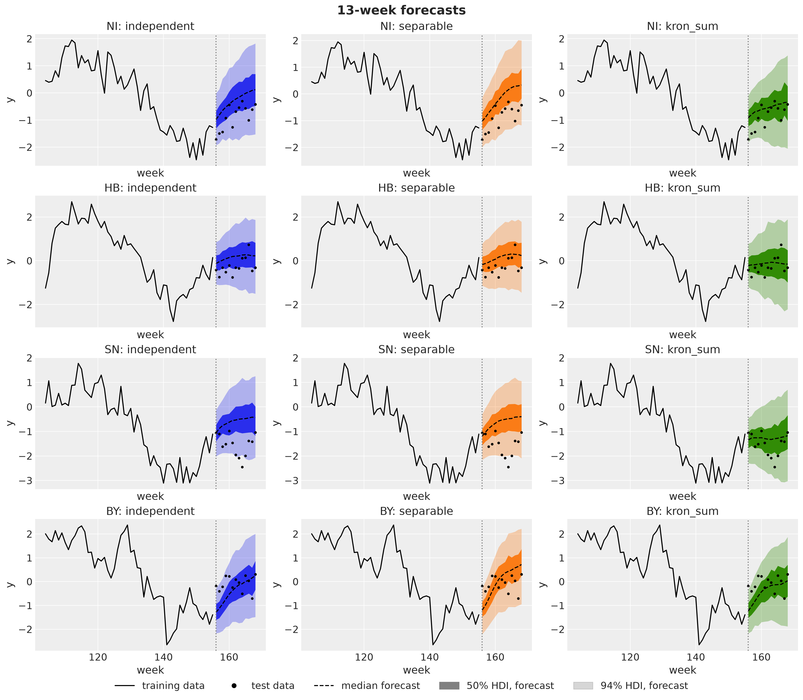
The three columns tell the story of this notebook. The independent and separable forecasts lose the trend within a few weeks and drift up toward the regional intercepts over the whole horizon, away from the test data, while the Kronecker-sum forecast carries the level of the trend across the split. Under all three kernels the fan widens with the horizon, as the basis functions leave the data. What separates the kernels is where the fan is centered. In NI and SN, where the test data stay low, the median of the independent and separable models drifts up toward the regional intercept. Almost all observations then end up in the lower half of the fan, many of them below the \(50\%\) band. The Kronecker-sum fan is centered on the level the trend reached before the split, and \(9\) of the \(13\) test observations of each of the two states sit inside its \(50\%\) band.
Forecast Evaluation
We score the forecast panel with the three scores of the problem section: the CRPS (lower is better), the RMSE of the mean forecast, and the empirical coverage of the central \(90\%\) interval. Each score is averaged over the \(13\) forecast weeks and the \(16\) regions. We add one more column, crps_h10_13, which is the CRPS averaged over horizon steps \(10\) to \(13\) only, the last four weeks of the horizon. At short horizons every model is anchored by the last observations and the scores are close. At the end of the horizon the forecast rests on what the kernel extrapolates, so this is where the kernels should differ most. We also record the posterior median of \(\ell\) and \(\rho\) of each model next to its scores, because the explanation of the ranking runs through them.
def score(samples: Array, truth: Array) -> dict[str, float]:
return {
"crps": float(eval_crps(samples, truth)),
"crps_h10_13": float(eval_crps(samples[:, -4:], truth[-4:])),
"rmse": float(eval_rmse(samples, truth)),
"coverage_90": float(eval_coverage(samples, truth, alpha=0.9)),
}
scores = pl.DataFrame(
[
{
"model": name,
**score(samples, y_test),
"length": float(jnp.median(mcmcs[name].get_samples()["length"])),
"rho": float(jnp.median(mcmcs[name].get_samples()["rho"]))
if "rho" in mcmcs[name].get_samples()
else None,
}
for name, samples in forecasts.items()
]
)
scores| model | crps | crps_h10_13 | rmse | coverage_90 | length | rho |
|---|---|---|---|---|---|---|
| str | f64 | f64 | f64 | f64 | f64 | f64 |
| "independent" | 0.475675 | 0.532058 | 0.83172 | 0.870192 | 9.775746 | null |
| "separable" | 0.533586 | 0.649813 | 0.924331 | 0.807692 | 6.834735 | 0.496818 |
| "kron_sum" | 0.338791 | 0.348075 | 0.57158 | 0.971154 | 23.263744 | 5.327853 |
| "kron_sum_m96" | 0.363468 | 0.389928 | 0.623276 | 0.966346 | 17.323517 | 3.947787 |
The same scores as a plot, with the overall CRPS on the left and the CRPS of the last four weeks of the horizon on the right:
fig, axes = plt.subplots(
nrows=1, ncols=2, figsize=(14, 5), sharey=True, layout="constrained"
)
model_names = scores["model"].to_list()
x_models = np.arange(len(model_names))
for ax, column, title in zip(
axes,
["crps", "crps_h10_13"],
["CRPS, full horizon", "CRPS, weeks 10 to 13"],
strict=True,
):
values = np.asarray(scores[column].to_list())
ax.bar(x_models, values, color=[f"C{i}" for i in range(len(model_names))])
ax.set(
xticks=x_models,
xticklabels=model_names,
title=title,
ylim=(0, 1.15 * values.max()),
)
ax.tick_params(axis="x", labelrotation=15)
axes[0].set(ylabel="CRPS (lower is better)")
fig.suptitle("Forecast CRPS by model", fontsize=18, fontweight="bold");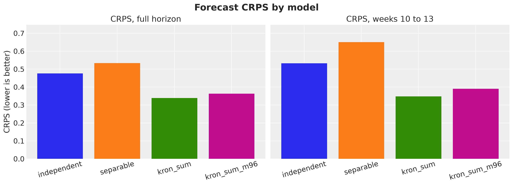
The same comparison broken down by horizon step:
crps_by_h = {
name: np.array([float(eval_crps(samples[:, h], y_test[h])) for h in range(H)])
for name, samples in forecasts.items()
}
fig, ax = plt.subplots()
for i, name in enumerate(forecasts):
ax.plot(np.arange(1, H + 1), crps_by_h[name], marker="o", color=f"C{i}", label=name)
ax.set(xlabel="horizon (weeks ahead)", ylabel="CRPS", xticks=np.arange(1, H + 1))
ax.legend()
fig.suptitle("CRPS by horizon step", fontsize=18, fontweight="bold");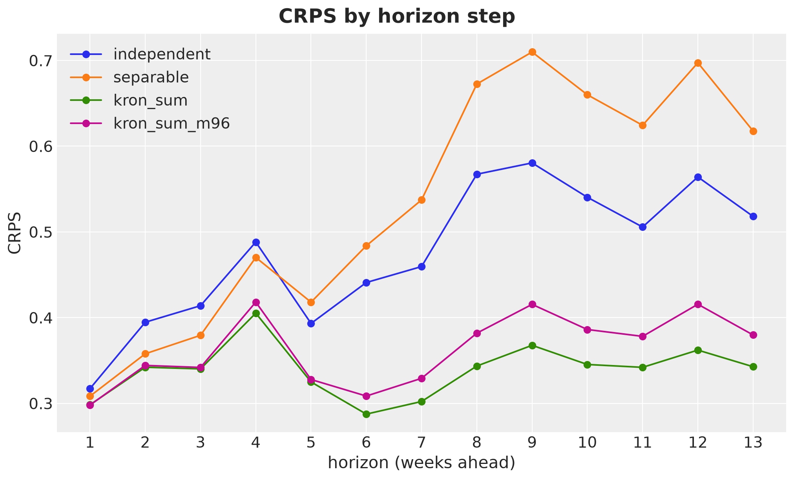
On this split the Kronecker-sum model is better at every horizon, by a margin that is small in the first week and grows up to about week \(8\) or \(9\) (at every step against the separable model, with one dip against the independent one), then stays. The forecast panels show why. The national trend turns down in the last year of the training data and stays low over the test period. The independent and separable models use one short lengthscale for everything (about \(7\) to \(10\) weeks), so their forecasts revert toward the regional intercepts within a few weeks, up and away from the data. The Kronecker-sum model keeps a long lengthscale for the national mode (about \(23\) weeks) and extrapolates the level of the trend, while the short memory goes to the rough spatial modes.
The two basis sizes of the Kronecker sum rank in an order that may surprise: kron_sum_m96 is the more faithful approximation of the kernel, yet on this split it scores worse than kron_sum with \(m = 48\). The hyperparameter columns give the hypothesis. The larger basis can represent the fastest regional deviations, so it no longer needs to push them into the shared trend, and it settles on a shorter \(\ell\) (about \(17\) weeks against \(23\)) and a smaller \(\rho\). A shorter \(\ell\) means a shorter memory for the national mode, and on this split the forecast is decided by how far the model carries the level of the trend across the origin. The truncation at \(m = 48\) acts as a prior that the regional deviations are smoother than they are, and on this particular origin that extra smoothing happens to help. So the better approximation is not automatically the better forecaster: with \(m = 96\) we get the posterior the kernel implies, with \(m = 48\) we get the kernel plus an implicit smoothing prior. Which one forecasts better is an empirical question, and a single split cannot settle it. The backtest below includes both.
How much the ranking depends on the trend at the split is exactly what a backtest tells us. Before that we look at the spatial structure of the forecasts, which is where the three priors differ by construction.
Spatial Structure of the Forecasts
The three kernels differ in how the forecast of one region is tied to the forecast of its neighbors, and we can measure this directly on the forecast draws. Let \(y^{(s)}_{h, r}\) be forecast draw \(s = 1, \ldots, S\) for region \(r\) at horizon step \(h\). For each horizon step we compute the sample correlation across draws between two regions,
\[ c_h(r, r') = \text{Corr}_s\big(y^{(s)}_{h, r},\, y^{(s)}_{h, r'}\big) = \frac{\sum_s (y^{(s)}_{h, r} - \bar{y}_{h, r})(y^{(s)}_{h, r'} - \bar{y}_{h, r'})}{\sqrt{\sum_s (y^{(s)}_{h, r} - \bar{y}_{h, r})^2 \sum_s (y^{(s)}_{h, r'} - \bar{y}_{h, r'})^2}}, \]
where \(\bar{y}_{h, r}\) is the mean over draws. This correlation says how much the forecast uncertainty of region \(r\) moves together with the forecast uncertainty of region \(r'\): a value near one means that the draws for the two regions go up and down together, a value near zero means that they are uncorrelated. We then average it over the \(29\) adjacent pairs \((r, r')\) with \(A_{r r'} = 1\) and over the \(91\) non-adjacent pairs, and we plot both averages against \(h\). The gap between the two is how much the forecast distinguishes neighbors from non-neighbors.
To read the plot it helps to know what sets \(c_h\). A forecast draw is the expected value plus noise, \(y^{(s)}_{h, r} = \mu^{(s)}_{h, r} + \varepsilon^{(s)}_{h, r}\), and the noise is independent across regions. So the covariance between two regions comes from \(\mu\) alone, while the variance of each region is the variance of \(\mu\) plus the noise variance, \(\sigma^2 \nu_{\varepsilon} / (\nu_{\varepsilon} - 2)\) for the Student-t. Two things make \(c_h\) start near zero at \(h = 1\). The latent process is still pinned down by the last observations, so the variance of \(\mu\) is small one week ahead, and the noise, with \(\sigma \approx 0.38\), dominates the denominator. As \(h\) grows, the variance of \(\mu\) grows because the basis functions leave the data, the noise matters less and less, and \(c_h\) moves toward the correlation of \(\mu\) itself. The shape of that growth is the signature of each kernel.
def spatial_correlation(samples: Array) -> dict[str, np.ndarray]:
"Mean correlation across draws for adjacent and non-adjacent regions, per horizon."
out = {"adjacent": [], "non-adjacent": []}
for h in range(samples.shape[1]):
corr = np.corrcoef(np.asarray(samples[:, h, :]).T)
out["adjacent"].append(corr[adjacent].mean())
out["non-adjacent"].append(corr[non_adjacent].mean())
return {k: np.array(v) for k, v in out.items()}
spatial_corr = {name: spatial_correlation(forecasts[name]) for name in MODES}
fig, axes = plt.subplots(nrows=1, ncols=2, figsize=(15, 6), layout="constrained")
for i, name in enumerate(MODES):
axes[0].plot(
np.arange(1, H + 1),
spatial_corr[name]["adjacent"],
color=f"C{i}",
marker="o",
label=f"{name}, adjacent",
)
axes[0].plot(
np.arange(1, H + 1),
spatial_corr[name]["non-adjacent"],
color=f"C{i}",
marker="o",
linestyle="--",
label=f"{name}, non-adjacent",
)
axes[1].plot(
np.arange(1, H + 1),
spatial_corr[name]["adjacent"] - spatial_corr[name]["non-adjacent"],
color=f"C{i}",
marker="o",
label=name,
)
axes[0].set(
xlabel="horizon (weeks ahead)",
ylabel="correlation of forecast draws",
title="Adjacent and non-adjacent pairs",
xticks=np.arange(1, H + 1),
)
axes[1].set(
xlabel="horizon (weeks ahead)",
ylabel="adjacent minus non-adjacent",
title="Gap between the two",
xticks=np.arange(1, H + 1),
)
fig.legend(*axes[0].get_legend_handles_labels(), loc="outside lower center", ncol=3)
fig.suptitle("Spatial correlation of the forecasts", fontsize=18, fontweight="bold");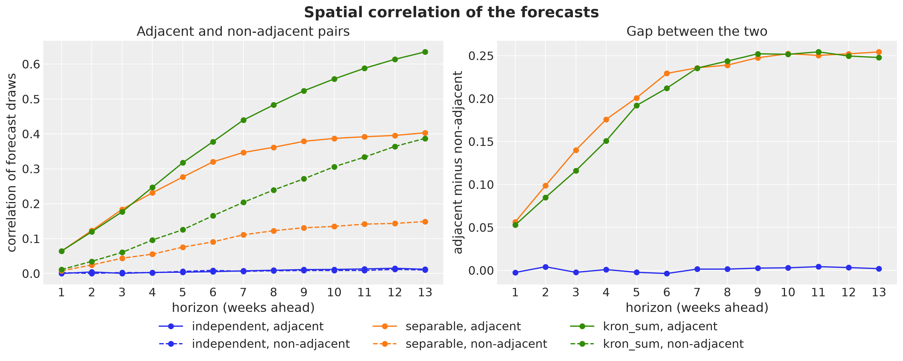
For the independent model the only shared components that correlate the draws are the seasonal weights, so both curves stay near zero. The hyperparameters are shared too, but a common \(\sigma_f\) or \(\ell\) does not make two regions move in the same direction. The other two models differ in the shape of the curves, and the difference is the lag dependence we checked on the prior.
For the separable model the correlations saturate after about eight weeks, with adjacent pairs at about \(0.4\) and non-adjacent pairs at about \(0.15\). Here is why. Under the separable kernel every graph mode has the same temporal lengthscale \(\ell\), so once the basis functions have left the data the forecast variance of every mode approaches its prior variance at the same rate. The covariance of \(\mu\) between two regions then approaches a fixed spatial pattern, \(k_G(r, r')\), times one common factor that grows with \(h\). Once that factor is large against the noise, the correlation settles at the value the spatial kernel gives it and stops moving. The spatial pattern of the forecast uncertainty is fixed, and the horizon only decides how visible it is through the noise.
For the Kronecker sum the correlations keep growing over the whole horizon, for adjacent and for non-adjacent pairs. Under this kernel every graph mode has its own lengthscale \(\ell_v\), and the forecast variance of a mode saturates after about \(\ell_v\) weeks, once its basis functions have left the data. The rough modes, with \(\ell_v\) of a few weeks, saturate within the first weeks of the horizon. The national mode and the smooth spatial modes, with \(\ell_v\) of \(10\) to \(23\) weeks, keep growing over the whole \(13\)-week horizon. The share of the forecast variance that sits in the modes shared across regions therefore keeps rising with \(h\), and so does the correlation. The national mode is shared by all regions, which is why the non-adjacent pairs rise too. The right panel shows that the gap between adjacent and non-adjacent pairs is the same for the two pooled kernels, about \(0.25\) from week \(8\) on. The two kernels differ in the level of both curves, not in how much they separate neighbors from non-neighbors: under the separable kernel both curves saturate, under the Kronecker sum both keep rising. The further we forecast, the more the regional forecasts move as one block around the national forecast.
Rolling-Origin Backtest
A single split is one draw of a noisy statistic. To see whether the ranking above holds up, we repeat the exercise from several forecast origins with backtest from numpyro-forecast. We use six expanding windows: the first one trains on the first \(136\) weeks, each next one adds four weeks of training data, and every window forecasts the \(13\) weeks that follow its origin. The forecast_fn closure fits the model with NUTS on the training window (\(500\) warmup and \(250\) draws per chain, to keep the runtime in check) and forecasts the test window. We backtest the four fitted models: the three kernels at \(m = 48\) and the Kronecker sum at \(m = 96\).
Since the box of every model covers the full duration, the same factory serves every window: a window with \(T'\) training weeks calls the model with the first \(T'\) rows of the basis, and its forecast with the first \(T' + 13\) rows. One caveat follows from this. The box is fixed in absolute terms: it is centered on the full panel with half-width \(L = 126\) weeks, so its right edge sits \(42\) weeks past the end of the panel, and an early window ends further from that edge than the last window does. The basis does not depend on the data, so nothing leaks from the future into an early window. What does change is the prior: the Dirichlet condition pins the latent process to zero at the box edges, so a window that ends far from the edge sees a slightly different prior over its forecast weeks than a window that ends near it. This affects every kernel in the same way within a window, so comparisons between kernels within a window are exact, and those are the ones we report. Comparisons of one kernel across windows mix the kernel with this prior effect and with the different training lengths, and we do not read them.
def forecast_fn(
rng_key,
model,
train_data,
train_covariates,
full_covariates,
num_samples,
*,
batch_size=None,
):
k_fit, k_fc = random.split(rng_key)
mcmc = fit_nuts(
k_fit,
model,
train_covariates,
train_data,
num_warmup=500,
num_samples=num_samples // 4,
) # 4 chains
posterior = {k: v for k, v in mcmc.get_samples().items() if k in LATENT_SITES}
return forecast(
k_fc, model, posterior, train_data, full_covariates, batch_size=batch_size
)
BACKTEST_MODELS = ["independent", "separable", "kron_sum", "kron_sum_m96"]
basis_sizes = dict.fromkeys(MODES, M_BASIS) | {"kron_sum_m96": M_LARGE}
backtest_results = {}
for name in BACKTEST_MODELS:
rng_key, rng_subkey = random.split(rng_key)
backtest_results[name] = backtest(
rng_subkey,
lambda name=name: make_model(
mu,
U,
mode=name.removesuffix("_m96"),
duration=DURATION,
m=basis_sizes[name],
),
y,
covariates,
forecast_fn=forecast_fn,
metrics={"crps": eval_crps, "rmse": eval_rmse, "coverage_90": eval_coverage},
min_train_window=DURATION - H - 5 * 4,
test_window=H,
stride=4,
num_samples=1_000,
)Before we look at the scores, here are the six windows. Each bar is one window: the training weeks in blue and the \(13\) test weeks in orange, with the forecast origin moving forward by four weeks at a time.
fig, ax = plt.subplots(figsize=(12, 4))
for i, res in enumerate(backtest_results["kron_sum"]):
ax.barh(
i,
res.t1 - res.t0,
left=res.t0,
color="C0",
label="training" if i == 0 else None,
)
ax.barh(
i, res.t2 - res.t1, left=res.t1, color="C1", label="test" if i == 0 else None
)
ax.set(
xlabel="week", ylabel="window", yticks=np.arange(len(backtest_results["kron_sum"]))
)
ax.invert_yaxis()
ax.legend(loc="upper center", bbox_to_anchor=(0.5, -0.2), ncol=2)
fig.suptitle("Expanding backtest windows", fontsize=18, fontweight="bold");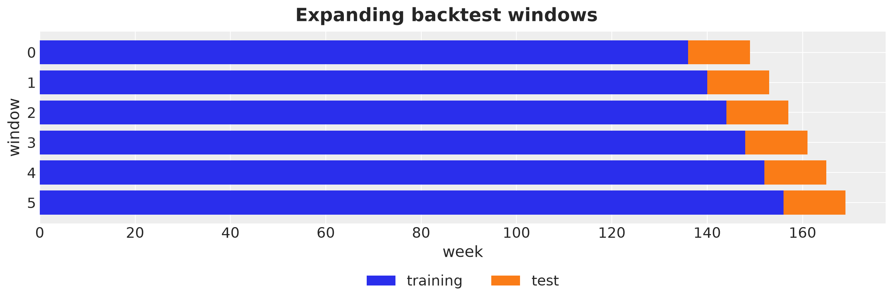
The last window is the split we used above. The earlier windows forecast from origins inside the downturn of the national trend, and the last ones from its trough.
We collect the three scores of every window and model into one table, and we plot the mean of each score over the six windows, one panel per score.
backtest_df = pl.DataFrame(
[
{"model": name, "window": i, "t1": res.t1, **res.metrics}
for name, results in backtest_results.items()
for i, res in enumerate(results)
]
)
backtest_summary = backtest_df.group_by("model", maintain_order=True).agg(
pl.col("crps").mean(), pl.col("rmse").mean(), pl.col("coverage_90").mean()
)
x_models = np.arange(len(BACKTEST_MODELS))
colors = [f"C{i}" for i in x_models]
fig, axes = plt.subplots(nrows=1, ncols=3, figsize=(16, 5), layout="constrained")
for ax, column, title in zip(
axes,
["crps", "rmse", "coverage_90"],
[
"Mean CRPS (lower is better)",
"Mean RMSE (lower is better)",
"Mean coverage of the 90% interval",
],
strict=True,
):
values = np.asarray(backtest_summary[column].to_list())
ax.bar(x_models, values, color=colors)
for xi, value in zip(x_models, values, strict=True):
ax.annotate(f"{value:.3f}", (xi, value), ha="center", va="bottom", fontsize=10)
ax.set(xticks=x_models, xticklabels=BACKTEST_MODELS, title=title)
ax.tick_params(axis="x", labelrotation=15)
axes[2].axhline(y=0.9, color="black", linestyle="--", label="nominal 0.9")
fig.legend(*axes[2].get_legend_handles_labels(), loc="outside lower center")
fig.suptitle(
"Backtest scores, mean over the six windows", fontsize=18, fontweight="bold"
);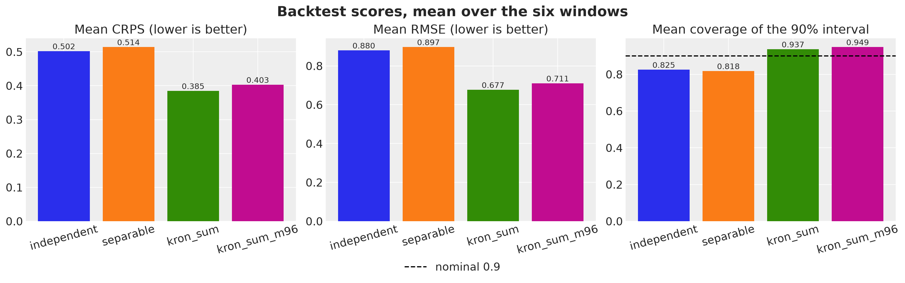
The Kronecker sum at \(m = 48\) has the lowest mean CRPS, \(0.385\) against \(0.502\) for the independent kernel and \(0.514\) for the separable one, the lowest RMSE, and a mean coverage of \(0.94\), above the nominal \(0.9\), while the two other kernels are overconfident at about \(0.82\). The \(m = 96\) refit is close behind on every score, with a mean CRPS of \(0.403\).
The means hide how the scores move with the origin, so let’s plot the CRPS of every window, one line per model.
fig, ax = plt.subplots()
for i, name in enumerate(BACKTEST_MODELS):
sel = backtest_df.filter(pl.col("model") == name)
ax.plot(sel["t1"], sel["crps"], marker="o", color=f"C{i}", label=name)
ax.set(xlabel="forecast origin (week)", ylabel="CRPS")
ax.legend()
fig.suptitle("Backtest CRPS per window", fontsize=18, fontweight="bold");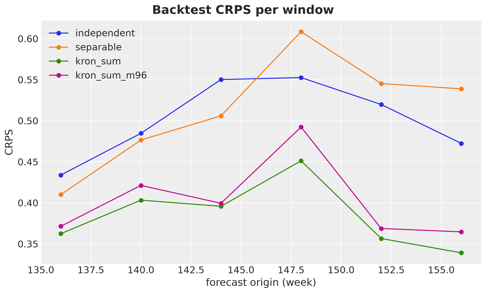
The two Kronecker-sum lines sit below the other two at every origin. Against the separable model the gap is smallest at the first origin, where the trend is still falling, and widens at every later origin toward the trough of the trend, where the level of the trend is furthest from the regional intercepts that the short-memory kernels revert to. Against the independent model it is also smallest at the first origin, but it moves up and down after that. The independent and separable lines cross each other, so their ranking depends on the window.
The paired differences per window are the honest summary. Within a window the data are the same and only the model changes, so the difference isolates the model. We take four contrasts: the Kronecker sum against the two other kernels, the separable kernel against the independent one, and the two basis sizes of the Kronecker sum against each other. A negative value means that the first model of the pair wins that window.
contrasts = {
"kron_sum - separable": ("kron_sum", "separable"),
"kron_sum - independent": ("kron_sum", "independent"),
"separable - independent": ("separable", "independent"),
"kron_sum_m96 - kron_sum": ("kron_sum_m96", "kron_sum"),
}
paired = backtest_df.pivot(on="model", index="window", values="crps").select(
(pl.col(a) - pl.col(b)).alias(label) for label, (a, b) in contrasts.items()
)
paired.describe().filter(pl.col("statistic").is_in(["mean", "std", "min", "max"]))| statistic | kron_sum - separable | kron_sum - independent | separable - independent | kron_sum_m96 - kron_sum |
|---|---|---|---|---|
| str | f64 | f64 | f64 | f64 |
| "mean" | -0.129471 | -0.117541 | 0.01193 | 0.018269 |
| "std" | 0.062386 | 0.038421 | 0.044545 | 0.013519 |
| "min" | -0.199723 | -0.163281 | -0.044203 | 0.003641 |
| "max" | -0.04761 | -0.07147 | 0.066465 | 0.041187 |
The same differences per window, with the mean of each contrast as a dashed line of the same color.
origins = backtest_df.filter(pl.col("model") == "kron_sum")["t1"].to_list()
fig, ax = plt.subplots()
for i, contrast in enumerate(contrasts):
values = np.asarray(paired[contrast].to_list())
ax.plot(origins, values, color=f"C{i}", marker="o", label=contrast)
ax.axhline(
y=values.mean(),
color=f"C{i}",
linestyle="--",
linewidth=1,
alpha=0.7,
label=f"mean, {contrast}",
)
ax.axhline(y=0.0, color="black", linewidth=1)
ax.set(
xlabel="forecast origin (week)",
ylabel="CRPS difference",
xticks=origins,
)
ax.legend(loc="upper center", bbox_to_anchor=(0.5, -0.12), ncol=2)
fig.suptitle("Paired CRPS differences per window", fontsize=18, fontweight="bold");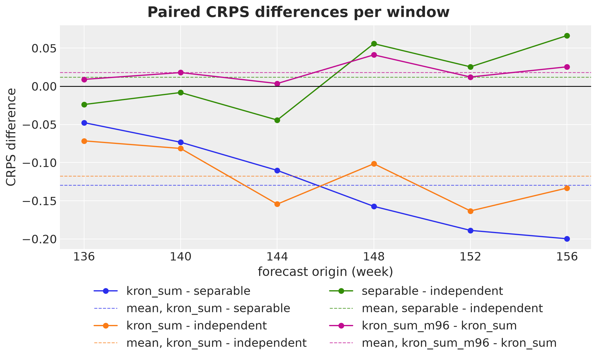
Three things stand out.
First, the Kronecker sum wins in every window against both alternatives. The maximum of the first two contrasts is negative, so there is no window where a competitor is better, and the mean differences are \(-0.129\) against the separable kernel and \(-0.118\) against the independent one.
Second, the ladder does not climb monotonically. The separable kernel is worse than the independent one on average (separable - independent has a mean of \(+0.012\) and a positive maximum), and it was also worse on the single split above. Pooling by itself does not help here, which is worth understanding. The separable kernel has one lengthscale for everything, and pooling forces it to fit both the slow national trend and the fast regional deviations with that single number. On the single split above it settled on about \(7\) weeks, too short to extrapolate the trend, and the sharing then propagates that bad trend forecast to every region. The Kronecker sum buys the same pooling without paying that price, because it gives the national mode its own long lengthscale. So on this panel the whole gain is attributable to non-separability, not to spatial sharing.
Third, the ranking of the two basis sizes from the single split holds in every window: kron_sum_m96 - kron_sum is positive in all six, with a mean of \(+0.018\) and a range from \(+0.004\) to \(+0.041\). The difference is small against the gap to the other kernels, but it is consistent. This supports the hypothesis above: the smoothing that the truncation at \(m = 48\) imposes on the regional deviations helps the forecasts of this panel, because the deviations that matter for the forecast are the smooth ones and the extra resolution at \(m = 96\) mostly buys a shorter \(\ell\) for the trend. For the question of which kernel to use, the answer is the same with either basis. For the question of which basis to use, the honest answer is that \(m = 96\) is the one that approximates the kernel we wrote down, and \(m = 48\) is that kernel plus a smoothing prior that happened to help here. On real data we would not count on that help, and we would size the basis by the rule.
Conclusion
Let’s recap what we did and what we learned.
We started from a geo panel: a weekly KPI for the \(16\) German states, \(156\) weeks of history, and a \(13\)-week forecast for every state at once. We expected the data to have three characteristics. All states follow a slow national trend. Each state deviates from that trend, and the deviations are related across the map. And a pattern that is smooth over the map, like the south above the national level and the north below, lasts for months, while a pattern that flips sign between neighbors looks like noise and is gone within weeks. The first two characteristics are what any spatio-temporal model handles. The third one, rough patterns fade faster, is the one we wanted to encode in the model, and the question of the notebook was whether doing so helps the forecast.
The model is a Gaussian process over weeks and states, approximated with a fixed basis so that it stays cheap. On the time axis the basis is a set of sine waves, from slow to fast. On the map the basis is the set of eigenvectors of the graph Laplacian, which are spatial patterns ordered by roughness: the national level first, then a south-west against north-east split, and at the end patterns that flip sign between neighbors. The latent panel is a weighted sum of pairs, one sine wave times one spatial pattern, and the kernel is the rule that says how much prior weight each pair gets. We compared three rules that share the same basis and the same hyperparameters.
The independent kernel ignores the map. Every state has its own process in time, with one lengthscale \(\ell\) for everything.
The separable kernel is a product of a kernel in time and a kernel on the graph. Neighbors share information, but every spatial pattern has the same memory \(\ell\), so a national movement and a checkerboard between neighbors are assumed to last equally long.
The Kronecker sum adds one scalar, the pooling strength \(\rho\). It gives the spatial pattern \(v\) its own lengthscale \(\ell_v = \ell / \sqrt{1 + \rho\, \mu_v}\), where \(\mu_v\) is the roughness of the pattern. The national level keeps the full memory \(\ell\), and the rougher the pattern, the shorter its memory. This is the third characteristic written into the kernel.
The Kronecker sum costs the same as the separable kernel. The basis does not depend on the hyperparameters, the weights are diagonal, and the latent panel is two matrix multiplications, so the sampler never sees a large covariance matrix.
To test the three kernels we simulated a panel from a different process, a diffusion on the graph driven by noise, with a smooth national trend, a yearly seasonality, and heavy-tailed noise on top. None of the three kernels matches that process exactly, so the comparison tests the modeling assumption and not the fit. We fit the three models with NUTS, forecast \(13\) weeks, scored the forecasts with the CRPS, and repeated the exercise from six forecast origins in a rolling-origin backtest.
Key Findings
The Kronecker sum gives the best forecasts, in every window. Its mean CRPS over the six backtest windows is \(0.385\), against \(0.502\) for the independent kernel and \(0.514\) for the separable one. The paired differences per window are negative in all six, with a mean of \(-0.129\) against the separable kernel and \(-0.118\) against the independent one. The ranking is the same on the single split we looked at first, at every horizon.
The gain comes from the memory of the national mode. On the simulated panel the Kronecker sum keeps a lengthscale of about \(23\) weeks for the national level and about \(3\) weeks for the roughest pattern. The separable and the independent kernels have to settle on one lengthscale for everything, and they pick a short one, \(7\) to \(10\) weeks. The national trend turns down in the last year of the training data. The Kronecker sum carries that level across the forecast origin, while the other two kernels forget it within a few weeks and drift back to the regional intercepts, away from the test data. The further the trend sits from its long-run level at the forecast origin, the larger the gap.
Pooling alone does not help here. The separable kernel is on average slightly worse than the independent one, with a mean paired difference of \(+0.012\) and a sign that flips between windows. Pooling with a single lengthscale forces one number to describe both the slow trend and the fast regional deviations. It settles on the short one, and the sharing then propagates a bad trend forecast to every region. On this panel the whole gain is attributable to non-separability, not to spatial sharing.
The mechanism is visible before and after the data. In the prior, the correlation between two regions does not depend on the time lag under the separable kernel and it does under the Kronecker sum, where rough patterns decay first and the regions revert toward the national level at long lags. In the posterior, the lengthscales fall with the roughness of the pattern, as the kernel says they should. In the forecast draws, the correlation between regions saturates after a few weeks under the separable kernel and keeps growing with the horizon under the Kronecker sum.
A more faithful basis is not automatically a better forecaster. The basis size rule asks for about \(140\) sine waves to resolve the roughest pattern at the posterior values, and we used \(48\). The refit with \(96\) behaves as the truncation argument predicts: it moves \(\rho\) down and \(\ell\) to about \(17\) weeks, because it no longer needs to push the fast regional deviations into the shared trend. It also scores slightly worse than \(m = 48\) in every backtest window, by \(0.018\) in mean CRPS. The truncation acts as a smoothing prior on the regional deviations that happens to help on this panel. The kernel ranking is the same with either basis.
Model Limitations
The gain depends on the data. The Kronecker sum wins because the trend moves near the forecast origin and the other kernels forget it. On a panel where the trend stays near its long-run level, the short-memory kernels would not drift away from the data, and the gap would shrink.
The graph is known to be the right one. The data generating process is a diffusion on the same graph that the models use. On real data the graph is a modeling choice. A wrong graph puts the short memory on the wrong patterns, and the model has no way to tell us.
The hyperparameters move together in the posterior. The logarithms of \(\sigma_f\), \(\ell\) and \(\rho\) have posterior correlations of about \(0.9\). The data pin the regional deviations well, and a change in \(\rho\) has to be compensated by \(\sigma_f\) and \(\ell\) to keep those deviations in place. The three numbers are well identified together and poorly identified one at a time, so we read them as a triple.
The basis is smaller than the rule asks for. The \(m = 96\) refit shows the direction of the bias in \(\rho\) and \(\ell\). Six windows on one synthetic panel are not enough to say that the smaller basis forecasts better in general.
The graph is fixed. Learning the edge weights would put the eigendecomposition inside the model and break the whole computational argument. The graph is an input, not a parameter.
Recommendations
If you want to use this construction on your own panel, here is what we would carry over from this notebook.
Normalize the trace. The pooling strength \(\rho\) moves prior variance from the rough patterns to the national level. Without a normalization it also shrinks the total prior variance, by a factor of about \(15\) over the range of \(\rho\) we explored, so \(\rho\) would silently act as a shrinkage parameter and \(\sigma_f\) would lose its meaning. Scaling the weights so that the average prior variance equals \(\sigma_f^2\) keeps the two roles apart: \(\sigma_f\) sets the scale and \(\rho\) only decides how the variance is split between the patterns.
Standardize the nodes. A kernel on a graph gives each region a prior variance that depends on how many neighbors it has. On the German map, Bremen, with one neighbor, gets about three times the prior variance of Lower Saxony, with nine neighbors, so its prior band is almost twice as wide for no reason that has to do with the data. Rescaling each region to the variance \(\sigma_f^2\) removes this and leaves the correlations unchanged. In the model this is one extra scaling of the rows of the eigenvector matrix.
Size the basis with the shortest lengthscale. The Kronecker sum gives the roughest pattern the lengthscale \(\ell / \sqrt{1 + \rho\, \mu_{\max}}\), which can be a small fraction of \(\ell\), and short lengthscales need many sine waves. Apply the basis size rule to that number, not to \(\ell\), and check it again against the posterior. A basis that is too small cannot represent the fast regional wiggles, pushes them into smoother patterns, and that looks like more pooling: \(\rho\) is biased upward and nothing in the diagnostics warns you.
Fix the time box from the full duration. The sine basis depends on the length of the box it lives on. If the training call and the forecast call build their own boxes, they use different basis functions, and the posterior coefficients get multiplied by waves they were not fitted against. Build the box once from the training window plus the horizon and slice it.
Compare against the separable and the independent kernels on a backtest. Use the same hyperparameters and the same basis for all three, so that the only difference is the combination rule, and score several forecast origins rather than one split. If the gain does not show up on your data, the separable kernel is enough and the extra parameter is not worth having.
Next Steps
A periodic time Laplacian. Replacing the sine basis on the interval by the eigenbasis of a cycle gives a seasonality that is shared nationally but blurred regionally, with the same Kronecker-sum rule deciding how fast the regional part of the seasonality fades.
Three factors. The same construction extends to interval times region graph times product graph, with one pooling strength per graph. The basis is still fixed, the weights are still diagonal, and the latent array is still a few matrix multiplications.
A fractional graph exponent. Raising \(\mu_v\) to a power before adding it to the time spectrum decouples the spatial smoothness from the temporal one, and gives the graph its own smoothness parameter.
Real data. The synthetic panel is favorable by construction, because the graph is the right one. The next test is a panel where the graph is a modeling choice, and where the backtest has to tell us whether the third characteristic is in the data at all.
References
Riutort-Mayol, G., Bürkner, P.-C., Andersen, M. R., Solin, A., and Vehtari, A. (2023). Practical Hilbert space approximate Bayesian Gaussian processes for probabilistic programming. Statistics and Computing, 33, 17.
Solin, A. and Särkkä, S. (2020). Hilbert space methods for reduced-rank Gaussian process regression. Statistics and Computing, 30, 419-446.
Rasmussen, C. E. and Williams, C. K. I. (2006). Gaussian Processes for Machine Learning, chapter 4: Covariance Functions. MIT Press.
Borovitskiy, V., Azangulov, I., Terenin, A., Mostowsky, P., Deisenroth, M. P., and Durrande, N. (2021). Matérn Gaussian Processes on Graphs. AISTATS 2021.
Engels, B., Andorra, A., and Kochurov, M. (2024). Gaussian Processes: HSGP Advanced Usage. PyMC examples.
Saunders, D. (2023). The Besag-York-Mollie Model for Spatial Data. PyMC examples.
Wiecki, T. (2022). Gaussian Process Geospatial Modeling in PyMC: Beyond Hierarchical Models. PyMC Labs.
Engels, B. (2023). Mean and Covariance Functions. PyMC examples.
Orduz, J. (2024). A Conceptual and Practical Introduction to Hilbert Space GPs Approximation Methods.
Orduz, J. (2026). CRPS.
Orduz, J. (2018). Laplacian Eigenmaps for Dimensionality Reduction and the PyData Berlin 2018 slides.
Orduz, J. (2024). Hierarchical Exponential Smoothing Model.
Orduz, J. (2024). Hierarchical Pricing Elasticity Models.
Orduz, J. (2020). Open Data: Germany Maps Viz.
isellsoap/deutschlandGeoJSON: state polygons of Germany, derived from data of the Federal Agency for Cartography and Geodesy (dl-de/by-2-0).
numpyro-forecast: forecasting building blocks, predictive helpers, and backtesting for NumPyro.
NumPyro HSGP module:
numpyro.contrib.hsgp.NumPyro HSGP example: the Birthdays model, one function per component.